OFFTONIC THEORY
Chapter 7: Modes and Scales
In this chapter we'll take a step out from chords and look at modes and scales.
What's a mode? Actually, what's a scale?
Definitions
Hm. This is a difficult question. There are a lot of different meanings for both of these terms, and these meanings get all confused with each other. I'm going to start with mode.
A mode is simply a way of doing something. If you're going someplace, you have to take a mode of transportation, a specific way of getting from one place to another such as walking, sailing, driving a car, riding a donkey, etc. An appliance can be in the on mode, where it's running, or the off mode, where it's not, or possibly standby mode, where it's wasting electricity but not doing anything useful. Modes are a very general concept, even though it's a bit difficult to put it in words.
When it comes to music, the word "mode" usually takes on some more specific meanings, depending on the genre of music. It refers to some kind of pattern employed by the music. Some cultures have rhythmic modes, where a piece may have a particular beat pattern. If you look back at Example 1.21, Lamah Haketz Nistam Na, the piece has a specific rhythm. The basic unit is a bar of 3/4, a bar of 4/4, and a bar of 3/4, and from the pickup, the beats go 3 1, 3 1, 3 4 1, and they repeat like this. Here's a version in Arabic. This could be considered a rhythmic mode, in particular, this one is called samai thaqil (though the samai thaqil mode is actually a bit different, so you could consider it a variant of samai thaqil).
The piece also uses a certain set of notes, a scale that goes 1 2 b3 4 5 b6 b7, where the b7 is often raised. In Arabic, music that uses this pattern of notes is said to be in a mode called maqam Nahwand. (We have a name for it in Western music, too: we call it the minor mode!) Maqam, plural maqamat, means "place" in Arabic (similar to the Hebrew "makom"), and it's a more complicated concept than simply the notes used. There are ways in which music that strictly adheres to the specific maqam are supposed to develop, notes that are supposed to be emphasized or deemphasized, whether it starts high or low, whether it ends high or low, whether it goes from 1 to 1 or from 5 to 5, stuff like that, it's all part of what makes a maqam.
The modes this chapter is going to discuss are similar to the maqamat, not to rhythmic modes, but we'll talk about them more generally. We're going to talk about the notes used in different modes and how to recognize these modes. A set of notes used in a mode is called a scale. In Western music, we don't stick to modal patterns much (or at all, really), so we use "mode" and "scale" sort of interchangeably, but "scale" generally refers to a set of notes without regard for how it's used, while "mode" refers to a specific way of using notes. As an example, you could say that (in Western music) the natural minor, harmonic minor, and melodic minor scales are used in the minor mode in different ways. But, again, we're not too strict about this stuff.
The word "mode" has another meaning, and you'll soon see why it stuck. The nth mode of a scale is the resulting scale type that you get when you start the scale at the nth note. For example, the C major scale is C D E F G A B. If you start the scale at the 6th note, A, you get A B C D E F G, the A natural minor scale. We can say that the 6th mode of C major is A natural minor. This will be a very useful concept because it shows how we can derive scales from other scales.
A third use of the word "mode" is in jazz, where it refers to a chord. I deliberately avoided using the word "mode" last chapter to describe jazz chords, and that's because people on the internet do it all the time and it pisses me off. If you see a Dm7 chord in jazz, which we call the dorian chord, you'll want to play D E F G A B C, which is the dorian scale (or the dorian mode, the second mode of C major). But that's not really the dorian mode. That's just a dorian chord. You're still playing C major. The distinction may not be clear yet, but don't worry, we'll get there.
To complicate things further, there's a real sense in which a harmony is actually a scale, even outside of jazz, and when you play a different chord, you're doing a mini-modulation to the harmony of that chord and changing the stability patterns of the scale you were in before. That's basically what jazz chords are all about, but this concept has been used in classical music for over a century, with chords as horizontal structures rather than purely vertical.
So, to sum up:
- Scale
- Which notes are used.
- Mode
- Which notes/scales are used and how they function relative to each other.
- nth mode of a scale
- A new scale created by taking the notes of the given scale and beginning the scale at the nth degree.
What about keys? Isn't a key a thing too?
Aw, fuck. Yeah. Keys. All right, so, I'm not a prescriptivist. Usually. I'll get annoyed if you misspell things that you shouldn't misspell ("que" is a word in Spanish and other Romance languages; it is not a cue or a queue, and those are two different things), but when it comes to using words, I recognize that people use them differently and incompatibly. But keys just don't make much sense. The Harvard Dictionary of Music defines a key as consisting of a tonic (say, E) and a mode (say, major, as in the key of E major), but really only major and minor count as modes here and a lot of people don't even realize that major and minor are modes at all. There is no such thing as "the key of D in maqam Siga" or "the key of F mixolydian" (maqam Siga and mixolydian are modes, clearly), though you can certainly play in maqam Siga on D or in F mixolydian. They're just not referred to as keys. What are they? Ehhh. Unclear. I don't like saying that the mode is F mixolydian, because the mode is just mixolydian; it just happens to be mixolydian centered on F. It uses the scale of F mixolydian, but a piece can't be in a scale. It can use a scale. (By the way, modes can certainly use multiple scales. Most of the ones we'll come across don't, but the definition of mode is very loose.)
So what I generally do with keys is that I just declare some key that makes sense. For example, suppose I'm writing a piece in F mixolydian. That's F G A Bb C D Eb (I'll explain in a little while). But the tonic is F, and the scale is similar enough to F major, so I'll just say that we're in the key of F major and generally ignore the fact that the mode is actually mixolydian because major is close enough.
One more thing. I mentioned F as a tonic, but modes don't need to have tonics. The tonic is just one form of organizing notes. In fact, I'd argue that the maqam Siga I mentioned doesn't have one. The tonic is the center of gravity of a piece, the point of stability. But some modes don't have a note that feels like the center of gravity; the music simply proceeds according to other rules or patterns. Music that does contain a tonic is said to be tonal; music that behaves according to a mode that does not have a tonic is said to be modal. (Don't confuse this with modal jazz, which is jazz that uses chord-scales like we saw in the last chapter; jazz players call those chords "modes", but they're really chords, so don't get confused. OK, it's actually not a clear distinction. But still.)
This tonal/modal distinction is a bit complicated because the world of tonal music really only includes major and minor, so music that's in a mode other than major or minor and yet has a tonic is kind of lumped into the "other stuff" category by some theorists. Well, not this one. We use a broader notion of tonality called extended tonality, and this allows us to have tonal function in modes other than major and minor. Since there's still tonal function, it's not appropriate to call music in these other mdoes "modal". So, while some may argue that our imaginary piece in F mixolydian is not tonal, we're saying that it is, and that modal music is another thing entirely.
Can we see some examples?
Oh God yes. But first we're going to need to develop some vocabulary to understand the modes themselves, so let's start simple. Actually, before that, I have something to show you that you'll be able to use throughout this chapter:
The Offtonic Scale Keyboard
Over on the top right, there are drop-down menus for the scale and the root of the scale. If you want to play around in F mixolydian, for example, you can choose Mixolydian from the upper menu and F from the lower. You'll have to click on the player itself to turn it on and it will turn darker gray, much like the Offtonic Keyboard. The colored circles give you an idea of how far apart the notes actually are. Try to see what you can play on this!
Some of the scales have d's and t's; what's up with that?
The t's are half-sharps and the d's are half-flats. I really don't have a better way of representing them in text. We'll soon get to some modes that use them, and it will be awesome. Let's start simple, though:
The Principal Modes
Western music began with the eight modes of Gregorian chant. This was a descendant of Byzantine chant, the ancient Greek modes (with names similar to our modern ones, but they're completely different), and other modes from that era and earlier. Music has been played since the dawn of civilization, and for multiple musicians to play together it was necessary that they agree on which notes to use. A lyre, for example, would be tuned a certain way, and if you wanted to play the same song you had to tune your lyre the same way. That was basically a mode. From there, we get to Boethius's comprehensive list of notes (A B C D E F G H I K L M N O; the letter J hadn't been invented yet), eventually a formulation of Gregorian modes based on those notes, eventually more and more modes, and finally, around the Renaissance, all those modes coalesced into just two: major and minor.
Why did we lose all the other modes?
That's a great question. The short answer is tonal harmony. We're not going to talk about the Gregorian modes in this chapter, but hopefully by the time we've studied more modes it will be clear why tonal harmony works well for major and minor but not so well otherwise. Let's start with the major mode. We already talked about this mode quite a bit back in Chapter 4, but it's worth reviewing.
Major
This time it's going to be a little different. I'm not going to sound the scale out for you; you can do it yourself on the Offtonic Keyboard or the Offtonic Scale Keyboard. Also, I'm showing you two versions of the major scale:

Example 7.1
What's up with the second scale?
Meet the first new-ish characteristic of modes that we're encountering: whether the mode is authentic or plagal. What you're seeing here is two versions of the same C major scale, but one has the range of an octave from C to C, and the other has the range of an octave from G to G. Most melodies actually do stay mostly in one or the other, with maybe a note or two off in each direction.
You're also seeing note functions. We talked about the stability of the scale degrees back in Chapter 4, and that was actually a mode discussion rather than a scale discussion, because we were talking about how these notes are used. The important thing in both of these versions of C major is that the tonic, the note that all the other notes tend towards, is C, not some other note. The dominant is the note that sets up the tonic; the mediant is the note that helps identify the tonic, and the leading tone strengthens the tendency towards the tonic by leading to it. All of these are present in both authentic and plagal versions of the major mode (these descriptions are very general; the actual use of these notes is not easily describable in words), but the difference is where the tonic is in relation to them. In the authentic mode, the tonic is at the bottom, while in the plagal mode, the tonic is in the middle.
Let's see some examples. You've already seen these songs. The first is Somewhere Over the Rainbow, also in Example 5.8:
Example 7.2
You changed keys to C major. But why isn't there a recording?
I did. Maybe I shouldn't have. But I want to demonstrate this major scale. There's no recording because you can sing it yourself. I gave you the scale degrees. You should be able to do this. At this point, recordings of easy things will just get in the way. I'll still show you recordings of things that are harder to hear on your own, but simple melodies should not be hard anymore. If it still is hard, sing and sing some more, and use a keyboard to figure out the notes. If you want to learn music theory, you actually need to do this.
Anyway, this melody — this segment of the melody, anyway — is in authentic major, especially in the first phrase. The range is very neatly an octave. In the second phrase, it dips down to the 6 below for one note, which, to be fair, really is a point against the authentic mode here. The 7 below the tonic in the seventh bar is not problematic, though. What I want you to see is that the melody primarily hangs out between C and C. Most of the time, the tonic is the lower C, and the higher C is not often reached; it's stable, but it's too high. For more final-sounding phrases, though, the higher tonic is a valid place to end. Keeping with the theme of classic musicals, here's a lot of people's first real introduction to the major mode (which, again, you should sing yourself, because I'm not going to play you a recording):

Example 7.3
Never heard this before. Am I supposed to know it or something?
You've... Wh... Holy shit, dude. What kind of upbringing did you have? I fear for American culture, let me tell you. My mother played this for me when I was little. The whole movie, actually, but honestly it gets boring after the first hour or so for a 5-year-old. And the stuff with the Nazis... Yeah. But this part I knew! This song, and My Favorite Things, Edelweiss, the song in the convent about solving a problem like Maria, Sixteen Going On Seventeen, So Long, Farewell, The Lonely Goatherd, holy crap, that's a lot of them. There are a bunch of other, less memorable songs too. The hills being alive... Actually, no, that one I knew. Ford Every Mountain? Climb Every Mountain? I guess that makes more sense. There's one where Maria sings "I have confidence in me". I don't really remember that one. There's probably more, because that's a music-packed musical. I still remember most of this stuff.
Now, where was I? Right. Authentic major. The "Do, a deer" bit stays very well-bounded between C and C, but unlike Over the Rainbow, it ends high instead of low. But it starts low, so there's a little turnaround (the "oh, oh, oh") to get back to the start. The second excerpt ("So Do La...") goes above C for the second-to-last note, which is actually the only time this concept is introduced. "Do, a deer" explains the octave, and "So Do La" is the example of how to use the notes in the octave. This naturally raises the question: what happens outside the octave? The "Re" at measure 23 is the answer to that question. There's nothing new beyond the octave; it's just the same notes but higher or lower. (It should be emphasized that while Maria teaches the kids to sing using solfège, I much prefer scale degrees because I fucking hate that solfège shit. No offense. Wait, I take that back. Yes offense. Be offended, see if I care.) Of course, we already covered all this, but as an introduction to music theory in general to a kid who knows literally nothing about music yet, just knowing these notes is a pretty big deal. Rodgers and Hammerstein scored a big one for musical education for the time in which their massively popular musical was popular.
When I was taking music theory in college, our instructor had us sing the following from the major scale: 1, 2, 1, 3, 2 1, 4, 3 2 1, 5, 6 7 1, 6, 7 1, 7, 1. The idea is that you pause on each new scale degree and then count off towards the tonic in the proper direction. He also taught us hand signals for the notes of the scale, and I wish I could share them with you because they were really nice to use, and they're remarkably easy to pick up on if you practice a bit. There are slightly different versions of them, and they're easy to find on YouTube. Here's one example. But the point of singing those numbers (with the hand signs at the same time) was to show the tendencies of these notes. You can see that there are two regions, kind of like watersheds, that each flow to their respective tonics. I'd argue that the 5 is right on that watershed line; my professor had it going up to 1, but it's just as likely to go down to 1. Here's a redo of Example 7.1 showing this:
Example 7.4
The authentic mode looks like a mountain, while the plagal mode looks like a valley. Of course, the extended major scale, with further octaves in both directions, is kind of wavy, with the 1's being at the bottoms and the 5's being at the tops. But when you take just a one-octave segment, that segment will end up being a single mountain or a single valley.
Speaking of which, this is the most classic example for plagal modes:

Example 7.5
See how the song neatly fits between G and G, but the tonic is C in the middle? That's the plagal mode.
So I just look at the range and I can figure out if it's plagal or authentic?
Not quite. You need to decide if the melody spends time around one tonic versus between two tonics. And there doesn't have to be an answer. The song could be limited in range, or it could spend time below and above one tonic and below the next one. I'd say that if the song stays between 1 and 5, it's authentic, and if it stays between 5 and 1, it's plagal. If the song only leaves the range for a little bit, maybe you don't need to count that. Really, if you can't decide whether a piece is plagal or authentic... then leave it undecided.
That said, it's not too uncommon for a song to switch between authentic and plagal, usually with authentic verses and plagal choruses. It happens in Circle of Life. See if you can figure out where it switches. Another great example is Werner Thomas's Chicken Dance:
Example 7.6
What. What did I just witness?
Interestingly enough, the Chicken Dance is not an American song; it's by a Swiss guy. It's known throughout the Western world in different forms, though all of them with bird-related titles ("Der Ententanz" means "The Duck Dance"), and in Brazil, it's "Baile dos Passarinhos", "Ball of the Birdies". It was used as a theme song for Gugu Liberato's Viva a Noite variety show, and that's where I heard it.
The structure of the song is quite simple, with two very contrasting sections A and B. A has lots of pecking, short and quick notes, while B is smoother and more legato with longer notes, and, to me, recalls flying. Within each of these two sections, we have four 4-bar phrases, mostly very similar to each other. In section A, we have the motif in the pickup bar at the level of the 5 of the scale, repeated three times, but the third time it resolves to the 7, which then goes down to the 4.
Those are unstable; how could it be resolving?
Great question. I lied. That line doesn't resolve to the 7. What's happening here is something we'll explore in later chapters called a cadence, and in particular, this one is a half cadence. A cadence is when the music reaches the end of a phrase and resolves, usually to the tonic chord. Oftentimes, though, a phrase will end on the dominant chord in order to set up a true ending to the tonic later, like a question/answer structure. That's called a half cadence, and that's what's going on here.
Going on, the second phrase starting at pickups to 5 has exactly the same notes as the first phrase, just down a step, so it resolves to the 6 and then down to the 3. The 6 isn't really part of the harmony here, which is just the tonic chord, C major. The third phrase, from pickups to 9, is the same as the first. Then, the fourth phrase, from pickups to 13, starts out like the second but it resolves up to the tonic.
Up until now, we've been staying within the C to C octave, mostly centered around the 5. When we resolve to the tonic at measure 15, we've switched registers: we're now hovering around the upper C, not the G. That's the shift from authentic to plagal. The B section actually has a very similar range on the low end to the A section, but the way the notes are organized in the A section around the G in the middle and in the B section around the C on top is what's important here.
What are those small notes?
They're called cues. If you were playing this song, you wouldn't play those notes; someone else would. The reason I included them here is because they're actually pretty important to the piece. I didn't need to bother with the entire accompaniment, but these are the bits that stick out, and pretty much every rendition of the song has them. For example, if I yelled out "SWEET CAROLINE", you would almost certainly yell out "DA DA DAAAA" in response, right? It wouldn't be right to leave that part out! That's what I'm doing here.
So is the song still in C major if it has that F# in the cues?
Uh, yeah. That's called a chromatic passing tone, and as you can see, it connects two notes that are in the scale. But even if it weren't a passing tone, even if it actually represented a small modulation to G major or whatever, the rest of the song is still so strongly in C major that it doesn't take us out of the mode.
We didn't really analyze the B section here, but the phrase structure is really simple — not as simple as in the A section, but it's pretty close! I'll let you figure it out on your own. See if you can spot which bits repeat. Note that measures 23 and 27 are basically the same; the one at 27 just resolves to the B a beat later.
Now, the major mode also carries with it an affect, especially in Western music. We tend to hear major as somehow happy and bright.
Heh. You meant "effect", not "affect". "Affect" is a verb, and "effect" is a noun.
As I was saying, the major mode often has a "happy" affect in Western culture. Often does not mean always, though. When a song goes from minor to major, it usually has this brightening effect, but do not assume that just because a song is major that it's happy, or vice versa. You can have sad music in major and you can have happy music in minor or other modes (and other cultures do both of these). Also, "happy" and "sad" are a very limited range of emotions, and they're not even really opposites of each other. You should be aware that the major mode (as well as major triads, but not so much major 7th chords) is often felt, in the West, to be relatively happy and bright, but you should not assume that this connection always exists.
Why does this major/happy thing happen?
I don't know? The theories people make about this could run the American cattle industry with the sheer amount of male ungelded bovine excrement they involve. Some people say it's because the major triad is close to the 4:5:6 JI triad, while the minor triad is only 10:12:15, and somehow this is important or something because 4:5:6 has smaller numbers and they're all harmonics of the root. That's nice, but it's bullshit. I think that major is brighter than minor because the flavor tone, the third, is higher in major than in minor, but the third is consonant in both. Somehow the triad really is fundamental in some way, but anything other than a 3 or b3 breaks the chord, and the 3 being higher than the b3 means that it's brighter and, by extension, happier.
::sniff:: That smell... Reminds me of the pastures... Oh, yeah, I know what it is. ::cough::BULLSHIT::cough::. Sorry, I'm allergic to bullshit.
But, you know, the Chinese character for "bullshit" is the same as the one for "imagination".
Oh, wow, is that actually true?
No. I don't know Chinese.
Yeah, that's what I thought. Stop triggering my bullshit allergy.
Fine.
Modes also tend to have characteristic scale degrees, which are the notes of the scale that most strongly suggest the mode. In the case of the major mode, the characteristic scale degrees are generally the 3, 4, and 7. This is not a precise science since other scales can use the same notes, but if you want to convey the feel of the major mode, using these notes in some way might be a good idea. Similarly, avoiding these notes is a great way to make the mode more ambiguous.
There's a big caveat here, though. Common Practice music treats the 4 and 7 as mandatory even in minor, making the 3 the differentiating factor between major and minor. Music outside Common Practice often avoids the 4 and 7 on purpose since they're unstable. In extended tonality, including pop music, music often does not stick to the notes of the mode, so avoiding the 4 and 7 does not create ambiguity so much as simply establishing a more generalized major key. We'll see examples soon enough.
For now, let's look at the other principal mode:
Minor
The minor mode actually uses three scales:
Example 7.7
Whoa! That's weird! Why?
To confuse music students, mainly. No, just kidding. But that's certainly one effect! The idea here is that the leading tone, the 7, is very important in Common Practice music, and the tritone between the 4 and 7 is what propels music forward. You can see that in the natural minor scale, the tritone is between the 2 and the b6. That's no good (except actually it is, as we've seen in the past few chapters, but whatever). So, the b7 is altered up to a 7 in order to make that happen.
But that doesn't explain those three scales.
I suppose not. So let me try to explain it in more detail. Common Practice music is, first and foremost, based on harmony. Before what we call Common Practice, we had multiple voices at the same time, sure, but the vertical combinations of notes they sang didn't really have identities of their own. Eventually, those vertical combinations crystalized into chords, and one of those chords, the V chord, was deemed necessary to make a cadence, a stop in the music, that sounds convincing. Whether it went V - I or V - i depended on the mode, but that leading tone in the V chord was what set up the forward motion. Without it, the cadence wouldn't be a real cadence. Before common practice, there was actually another possibility: b2 - 1, approaching the tonic from above by half step instead of from below. This is called the phrygian cadence, and Common Practice rejected this for some reason (we will not, and we'll talk about it plenty both in this chapter and later chapters). The upshot is that V - i was required even in minor, so you need that 7 there. For whatever reason, the idea of raising the b7 to a 7 in minor in a V chord has the name of the "harmonic minor scale". It's not a real scale!
It's not?
Well... It depends on what you really mean by "scale". The notes used in minor harmony come generally from the harmonic minor scale. But only generally. See, V and viio chords have a 7 in them, but bIII and bVII chords have a b7. Actually, there are times when a minor v chord is called for (just never in a cadence towards i, at least not in Common Practice music), and that has a b7 as well. The 7 is only used in V and viio chords.
In contrast, you have the melodic minor scale. The harmony requires a 7 in a V chord, but if you're playing a scale, the previous note is b6. Going from b6 to 7 creates an augmented second, which Common Practice composers thought was awkward (though in modern times there are plenty of occasions where we really like that sound). The solution? Raise the b6 too! Make it a 6. In the melodic minor scale, which is where minor melodies draw their notes (kinda), the b7 is raised to a 7 when functioning as a leading tone to the tonic, and the b6 is raised to a 6 when it's going up to the 7. On the other hand, when coming down, the 7 - 1 motion is not needed, so the 7 can be dropped in favor of the b7, and the 6 is unnecessary as well and can be a b6. In the Offtonic Scale Keyboard I included both versions of the 6th and 7th degrees in the Minor scale type; you can play around with that.
So I use 5 6 7 1 going up and 1 b7 b6 5 coming down? What if we go down and then back up, like 1 b7 b6 7 1? Or is it 1 b7 6 7 1? How does that work?
Ehhh, it's not so strict. Music books like to emphasize that the melodic minor scale is different ascending from descending, but real music isn't a scale. The 7 is used in a V or equivalent chord (like viio), whether it's going up or down, and the 6 is used whenever it's necessary to prevent an augmented second with the 7. You could easily have b6 b7 1 when it's not a V - i cadence, like for example if the whole thing is over a iv chord. And you might want to use the 7 outside of a V chord when it's simply in close proximity to said V chord.
What if I wanted to do something like bVI - bVII - i or v - i?
You can totally do that, but that's not the Common Practice minor mode that we're talking about. Both are actually quite common (I'd actually avoid bVI - bVII - i because it's so overdone).
So let's see an example, shall we? Again, I won't include a recording. Sing it yourself.

Example 7.8
This is the incredibly famous Mexican song Bésame Mucho, written by Consuelo Velazquez and recorded by hundreds of other artists, maybe even thousands, around the world and in many styles. As you can tell, it's in D minor — see all the emphasis on D. Since the song occupies the space above the low D, it's in an authentic minor mode rather than plagal. Yes, minor can be authentic or plagal as well. As you can also see, the 7th is raised, here at measures 6 and 14, when it acts as a leading tone, but not in measure 10 when it doesn't.
What about the Bb in measure 6? Shouldn't that be raised as well, since the melody line is ascending?
Kinda, yeah. But Consuelo Velazquez did not choose to do that. I think a composer like Mozart might have. A composer like Bach might have instead lowered the last Bb down to A, so that instead of the Bb - C# augmented second, you'd have the A - C# major third, which is not objectionable. Instead, writing in the 1940's, Velazquez was perfectly happy with the sound of the augmented second there.
Is it not in the minor mode, then?
It depends on how strictly you care about this stuff. This is kind of a borderline case because the Bb is structurally important here. It's part of the chord. The only "bad" style here is in the voice leading. I'd say we're still in the classically-defined minor mode, rather than a folk mode or something like that.
We can do a bit of melodic analysis on Bésame Mucho. I like to point out melodic contour and parallelism, and this song (well, this part of this song) uses them interestingly. Measures 1 through 8 are basically going up from D, building tension with the trip up to the E before releasing it with the A at the end of the phrase. Measures 9 through 16, on the other hand, have very similar rhythm, but it goes from the high D down to the low D. In particular, measures 9 and 10 are the same as measures 1 and 2, but upside-down. Same words, even! Then, while 5 and 6 are just a scale going up, 13 and 14 have a different three-note pattern four times, going down each time.
The melody starts down at very low tension, then it ramps it up but leaves it unresolved halfway through; the second phrase starts with high tension and it resolves a bit, and then it really resolves the whole thing over the last four bars. All throughout, it repeats rhythmic and melodic ideas, modifying them in ways that keep them recognizable yet with a different feel. All of this contributes to making a memorable melody. When you're writing a melody, which is one of the hardest things to do well in music, giving the melody a contour that properly builds and dissipates tension while repeating familiar motifs is one of the best ways to have your audience feeling satisfied and humming that melody later. It's not the only way, of course. You can also just have it go on forever while repeating a particular phrase over and over again.
That was fun!
I KNOW! I got to play in the pit for a production of A Little Night Music once when I was in grad school. That show has some great moments, but Weekend In The Country is by far the most fun. And the key is a fairly long melodic structure where the words "a weekend in the country" repeat over and over and over and over. Repeat something enough times, and it becomes a big deal when everyone does it together, and this is what happens here. There are four duets going through the melody, and then finally everyone sings the chorus together, some contrasting stuff happens, and everyone sings the chorus together again. Plus, fast 6/8 makes for a catchy and dancy rhythm. Stephen Sondheim is an extremely talented lyricist and composer, and even just as a composer he's one of the best.
Anyway, minor. Weekend In The Country was not in minor. Sorry about that digression. So here's another piece in minor, this time a very famous Bach lute piece which is basic repertoire for any classical guitarist (for which I'll give you a recording too since it's in two voices):
Example 7.9
Here you can see very clearly the use of melodic minor in measures 2 and 6. Measure 1 has a D#. Why? Well, look at the bass note, a B. This makes the D# part of the V chord in Em, which requires (in Common Practice music, anyway) the raised 7th. On the other hand, measure 7 has D natural. Why? The ending of this excerpt should tell you the answer: we start in E minor, but we end in G major! The D is actually effecting a modulation right there! The first time through the repeat, it's just a brief modulation, but the second time, we stay in G major for a while. You can listen to the entire piece if you want (it's a minute and a half, very short), or read about it on Wikipedia.
Is this plagal or authentic?
Good question. I'd say the first two measures are plagal, while measures 3 and 4 are authentic. At measure 7, you could argue that the first chord is the pivot, which would make 7 and 8 authentic G major. Notice that I'm only talking about the melody. The bass can be considered a countermelody, a melody that sounds against another melody, and that one's authentic the whole time.
Pivot?
In a modulation — that is, a key change — there's often a moment that belongs to both the old key and the new key. This moment is the pivot. It can be a chord, like the G major chord at the downbeat of 7, which is both bIII in Em and I in G. It can also be just a note, or the modulation could be completely abrupt. In Bach's music, you're far likelier to find modulations set up with a pivot chord than anything else, and you will find them because modulation was one of the primary ways you built interest in your music during the Baroque and Classical periods. The issue with pivot chords is that two keys will generally only have similar chords if they're closely related (for example, at most one additional flat or sharp in the key signature), which is totally OK because they didn't want to modulate to distant keys back then anyway. Pivot notes are useful for smooth modulations to more distant keys, as was more popular in the Romantic period.
What's BWV, down below the title of the piece?
That's known as a catalog number, in this case, to the catalog called Bach-Werke-Verzeichnis. All of the known pieces by J. S. Bach are listed in this catalog, and for clarity, whenever people refer to one of Bach's pieces, they like to include the catalog number as well. Other composers, like Schubert and Mozart, have their own catalogs. Many composers opt to stick an opus number in front of their titles for basically the same reason. Using numbers means that you can more easily get away with not coming up with clever titles. Shostakovich, for example, wrote more than one set of 24 piano preludes; if you want to play Op. 34 No. 14, a beautiful piece (pay attention to the contour of the entire piece), that's going to be different than the 14th prelude in some other set.
By the way, were these pieces, Bésame Mucho and Bourrée... sad?
Sad? Uh, no, not particularly, why do you ask?
Yeah, see? Music in minor keys is not necessarily sad. The Shostakovich prelude, in Eb minor, might be considered sad, but not the other pieces. Still, minor keys are actually somewhat unpopular in American rock and pop music. Only somewhat. There are still plenty of pop songs in minor, but they tend to be more in natural minor than the minor mode we're talking about, with the major V chords. We'll get to that in a bit.
The characteristic notes of minor are... 2 and b3. Basically. Because you can do anything you want with the 6th and 7th degrees and stay in minor, pretty much, so these are the defining notes of minor. I'm sure you'll find people who say otherwise, but the way the minor mode is used classically, having the b6 as a characteristic tone is a bit too unreliable. You can include it if you want, with the caveat that you may have to raise it to a 6 sometimes.
"Tetrachords"
Scare quotes? Oh no. What now?
A tetrachord is... four notes. Generally we talk about blahblahchords (trichords, tetrachords, pentachords, hexachords, heptachords) not as chords but as scale fragments, and in Western theory we like to break up the scale into two tetrachords, meaning four notes. So C major has a lower tetrachord, C D E F, and an upper tetrachord, G A B C. It took me a long time to understand why anyone ever bothered to mention this in theory books, mostly because it's only a curiosity the way it's explained. I think it's much more useful to break the scale up differently:

Example 7.10
You can think of these different... scale parts (the Arabic word is jins, plural ajnas, but I don't want to be too confusing) as levels on the scale where stuff happens. You can break the scale up into two pieces, the lower pentachord and the upper tetrachord (and they do overlap), or into three pieces, the lower trichord, the middle trichord, and the upper tetrachord. Of course, in plagal music, these positions are shifted; the upper tetrachord goes on the bottom. You could argue that in the second half of Example 7.6 (the Chicken Dance), it's actually the middle trichord that goes on the bottom. Honestly, this isn't an exact science, but it's a useful way of thinking about music. You can transpose melodies or motifs from one level to another to create variety. Bach loved to do this in his fugues:
Example 7.11
This is from the Art of Fugue, Contrapunctus I (played here by a brass quintet, a popular choice because it sounds so great, but Bach didn't actually specify the instrumentation so it's not wrong, though they did change the key). The Art of Fugue is famous for Bach having died while writing it. It contains 14 fugues, each labeled Contrapunctus with a number, and 4 canons using different devices. Contrapunctus XIV is famously unfinished; Bach actually left off shortly after introducing a subject based on his own name, with the notes B A C H.
Wait, H?
Remember? In German, B actually means Bb and H means B natural. So B A C H is actually Bb A C B. The Germans might have been silly, but we did get Bach's name as a motif (a highly chromatic one at that), so it's not all bad. Anyway, the entire Art of Fugue is based on the same subject, that in Example 7.11. Some fugues use the subject in inversion (upside-down), some use it in (rhythmic) augmentation (longer note values) or diminution (shorter note values), and some, like the four Canons, use a subject or theme that's more loosely based on it.
In a fugue, traditionally, the subject is stated in one voice, and then the answer is stated in another voice, followed by the subject in a third voice and an answer in a fourth voice, or something like that. This is known as the exposition. The music then proceeds, stating the subject in various voices, in different keys, etc. Fugues are awesome. Seriously.
Now, the answer is usually up a fifth from the subject, but it's not generally a direct transposition. Oh no. Instead, it's moved up a pentachord or tetrachord. So, if the subject is in an authentic mode, the tonal answer is in a plagal mode. (You can also have a real answer, which is a direct transposition up a fifth.) I'm not sure if Bach really was thinking in these terms, though. What we usually see is that if the 5 is used in the subject, in the answer it becomes the 1, but only the first time it occurs. So it's not a perfect transposition. But it's close enough, I think! In Example 7.11, you can see that the subject goes up and down about D, while the answer goes up and down, playing approximately the same music, around A. We do take a brief detour into A minor, with the G# and B natural, but we resolve back in D minor by the end. What we can see is that the subject takes place almost entirely in the lower pentachord of D minor, while the answer takes place almost entirely in the upper tetrachord, but they're both D minor.
While we're at it, let's take a look at the subject and answer in inversion, as present in Contrapunctus III.
Example 7.12
It's the same business, but the details are different. Here, the subject is plagal and the answer is authentic. The answer is more similar to the right-side-up subject, isn't it? But the subject begins and ends on the 1 while the answer begins and ends on the 5. You can also see the B natural in the subject; since we're going up from A to D, we use the 6 instead of the b6. In the right-side-up subject and answer, we didn't run into this possibility. Here in inversion, though, we don't have as clear-cut a difference between levels. While the original subject stays mostly in the lower pentachord and the original answer stays mostly in the upper tetrachord, the inverted answer does stay mostly in the lower pentachord, but the inverted subject is more spread out, from the upper tetrachord to the lower trichord. Why? Because Bach wanted that held C# in the subject! He clearly started from the answer, which is a very neat mirror of the original subject encompassing the same pentachord, and transposed that to get the inverted subject. And yet, it's still completely recognizable. Bach was the world's greatest genius of the fungal form. Fugal form. I meant fugal.
I'm picturing Bach as a spore beast.
...Me too.
Speaking of inversions, the Art of Fugue contains two very remarkable fugues, Contrapuncta XII and XIII, which actually come in two versions, rectus and inversus. The entirety of each of these two fugues works both right-side-up and upside-down!
Man, how did Bach do that?
He was a spore beast! True fact, learned it in my Bach class in college. Dude was made of chitin. How do you think he had so many children? Normal people don't reproduce like that. Nope. SPORES. Also he was extremely talented. The story goes that he actually improvised, on the keyboard, an eight-voice fugue.
Holy shit.
Yeah. J. S. Bach was one of the most amazing composers and musicians who ever lived. If you know one thing about music history, you should know that Bach lived from 1685 to 1750. The Baroque period goes until Bach's death and the Classical period begins directly after. And if you want to read something interesting, Douglas Hofstadter's Gödel, Escher, Bach: An Eternal Golden Braid is a very interesting read. Some of it is unfortunately a bit outdated by now, since the book is from the 80's, but the Dialogues are still fantastic, and it's not like the proof to Gödel's Incompleteness Theorem is going to somehow become wrong. Oh yeah, it's also a very mathy book. It's great.
Anyway, we're going to see a lot of the pentachords and tetrachords as we explore... more modes!
The Diatonic Modes
If we take the diatonic scale — that is, the white keys, or some transposition thereof — and put the tonal center on the different notes of that scale, we get the diatonic modes. These are often called the church modes, since they were used in old medieval chant, but this is actually completely wrong. We'll talk about the real church modes a bit later. They're also often called the Greek modes either because they were used in ancient Greece (which they weren't — not really) or because their names refer to Greek locations (which they don't; many of them are actually in Asia Minor, and Mixolydia is not a place, but Locris at least is actually in Greece). Some also just call them "the modes", which leaves out all the other modes in use. So we're going to call them the diatonic modes, because that's what they actually are. As a quick chart:

Example 7.13
This chart shows the diatonic modes, first as a mode of the diatonic scale, and second as the mode transposed to C. When we were talking about jazz chords in the last chapter, we saw these (and other) modes as chords, and we thought of playing D dorian, for example, as playing the C major scale. D dorian's parent scale was C major. Well, forget all that. When we're talking about modes, not about playing vertical chords horizontally but about actual modes, how one might derive the modes doesn't matter. All that matters is what you see on the right side of the chart. Other than locrian, it's useful to think of these modes as alterations of the two principal modes, major and minor, since they tend to work fairly similarly some of the time.
Why not locrian?
It's just too weird because of that b5. You'll see when we get to it. Now, altering scales is one of those things where the nomenclature can be inconsistent with how we do things elsewhere, but that's what it is. We've been naming notes relative to the major scale, but when we alter a note in a scale name, we actually name it relative to that scale. For example, dorian is minor with a raised 6th, so we call it minor #6. Minor already had a b6, but we don't call it minor natural 6; we call it minor #6. Just the way it is.
We like to talk about the diatonic modes in order. We order them thus:
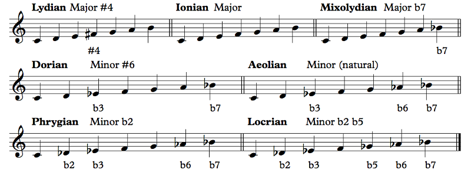Example 7.14
The diatonic modes are presented above roughly in order from brightest to darkest, whatever that means. There are a bunch of important relationships between these modes that we can see clearly from this chart, but the biggest one is that each mode is one note flatter than the last, going around the circle of fifths. Generally, we don't use key signatures specific to the modes — for music in mixolydian, for example, we just use the major key signature and mark all the b7's with accidentals. You'll see this shortly. But if we were to use key signatures, C lydian would have one sharp, C ionian would have no sharps or flats, C mixolydian would have one flat, C dorian would have two, C aeolian would have three, C phrygian would have four, and C locrian would have five. You can't have two sharps or six flats, because then the tonic C would no longer be in the scale!
The notes of the diatonic scale are all next to each other on the circle of fifths, as we saw when we talked about the circle of fifths a few chapters back. As we go down the diatonic modes, though, we shift counterclockwise which group of notes we're using. So, C lydian is C G D A E B F#, C ionian is F C G D A E B, C mixolydian is Bb F C G D A E, etc. It should be noted that the new note is the most important characteristic tone of the mode, and it always forms a tritone with another note in the scale. So, in lydian, we have the #4 making a tritone with 1; in major, we have both the 4 and the 7; in mixolydian, the b7 makes a tritone with the 3; in dorian, the b3 makes a tritone with the 6; in minor, the b6 makes a tritone with the 2; in phrygian, the b2 makes a tritone with the 5; in locrian, the b5 makes a tritone with the 1. The tritone itself isn't so important, necessarily; what is important is what makes each of these modes sound different from plain major or minor.
Another interesting aspect of these modes is that if you play one of the modes upside down, you get a different mode. Lydian upside down becomes locrian; ionian becomes phrygian; mixolydian becomes aeolian; dorian upside down is still dorian.
All of this is pretty pointless without music, so let's actually hear some in each of these modes. Well, each of them except ionian, because that's literally the same thing as major, which we've already discussed. You can play with each of these modes in the Offtonic Scale Keyboard, and I would encourage you to do so and noodle around a bit as we talk about each mode.
Lydian
This is the lydian scale, which you'll remember is major but with a raised fourth:

Example 7.15
The characteristic tone here is the #4 more than anything else, and the #4 is often called the "lydian note". The lydian mode actually often comes in varieties with other alterations, like a b7 or #5, which we'll talk about a bit later. The problem with this lydian note, though, is that it's not really a valid point of stability. When you hear the #4, it sounds great as part of the tonic I chord as a #11, but it doesn't really work as the root of its own chord. So while the major scale can rely on the stabilizing 4 - 3 motion and modulating to the subdominant, the lydian scale cannot, and as a result, it's not a very versatile scale. I find that everything in the lydian scale tends to sound about the same, and it gets boring fast. Many pieces that use it only do so briefly. Probably the most famous example of this scale is the Simpsons theme (which is actually in lydian b7 but anyway):
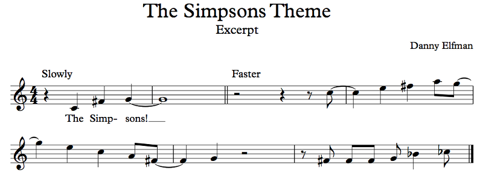Example 7.16
Lydian is very stereotypically used at the start of 1980's children's movies, and The Simpsons didn't want to be left out! Of course, this is a Danny Elfman piece, so it doesn't stay in one key for very long. The last note of the excerpt (and arguably the second to last as well) is in a new key already. It's a very common trope in background music (also called incidental music) to change keys every few bars, which helps keep things fresh, and Danny Elfman is known for doing this a lot.
The lydian mode is also associated somewhat with the magic of space, which you may be able to spot in various movies, or even in Super Mario Galaxy, though this example is not even close to being space-like:
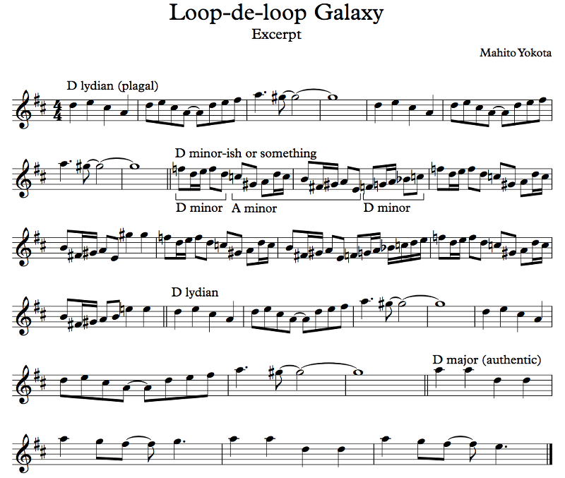Example 7.17
Notice how most of the lydian section is just harmonized by one chord. Even that weird noodling is still over the same background, though that does change in the last four bars of the excerpt and thereafter in the actual piece. That weird noodling, speaking of which, is supposed to call to mind silliness and disorganization, and I think it does that quite well. In the game, this music plays during the ray surfing course, which is fast-paced, a bit wacky, and very difficult. I'd say Yokota's composition fits that theme perfectly, don't you?
This piece also exhibits something we see a lot in lydian music, mostly because lydian harmony is just so damn static: lydian sections don't last long. Some bit of the piece will be in lydian, maybe the characteristic bit at the start, but then the less exciting stuff in the middle will be in more versatile modes like major or whatever else. As great as the #4 is (and even the half-sharp 4 in the 11th harmonic, which we'll probably talk about someday), it's difficult to make it go anywhere.
This brings up yet another important consideration when we're talking about modes: not all modes are equal.
Hey! #AllModesMatter!
Eh. No. Some modes are just not as useful as others. I mean, be my guest and write in whatever mode you want; don't let me stop you. But there's a reason why Western music settled on major and minor. They have useful features — like a subdominant, which lydian lacks.
Isn't the #4 the subdominant?
Sure, technically, but it doesn't function like a subdominant does when it's a regular 4. The lydian scale trades the versatility of the 4 for the beauty and excitement of the #4.
I noticed that you used the major key signature in the examples. Why?
Because I think of lydian as an alteration of major; it's major with a #4.
Why not just put the #4 in the key signature then?
Great question. The answer is that musicians are used to only seeing major and minor key signatures; if a musician sees three sharps, that's either A major or F# minor. The musician will not think, "ah, this might be D lydian." Since the goal of sheet music is to communicate to the reader, a more standard key signature achieves that goal better. The two sharps make it clear that it's either D major or B minor, and we can quickly see that it's D major. With a raised fourth, but whatever; it's D major! We can think about it for a bit and see that it's actually D lydian, but it's actually not so important to do that. The key signature roughly tells you the tonic and the mode, and you can figure out the details yourself later on.
Before long you'll see modes other than the diatonic ones, and they don't fit with the standard key signatures. That presents another problem. Some composers decide to write nonstandard key signatures. I personally think that's a bad idea, but it's actually standard in ethnomusicology, since there might be a wide variety of modes and the nonstandard key signature helps identify that mode more readily. In a mode that goes D Eb F# G A Bb C (D phrygian dominant), you might actually see F#, Bb, and Eb all in the key signature.
Anyway, moving on.
Ionian
There's nothing more to say about the ionian mode, since it's identical to the major mode we discussed in the previous section.
So why does it have a different name? Why not just call it "major"?
Interestingly, "ionian" came first. There used to be 8 church modes: dorian, hypodorian, phrygian, hypophrygian, lydian, hypolydian, mixolydian, and hypomixolydian, with the "main" modes (dorian, phrygian, lydian, mixolydian) being authentic modes and the others (hypodorian, hypophrygian, hypolydian, hypomixolydian) being the plagal versions of their corresponding authentic modes. Note that these were not the diatonic modes we're talking about! They were treated very differently! To that, theorists eventually added three more pairs, ionian/hypoionian, aeolian/hypoaeolian, and eventually locrian/hypolocrian. So when people started using the modern diatonic modes, which are descendants of the church modes but are actually completely different, they used the old names. The church modes themselves are given names from the modes used in ancient Greece, though the ancient Greek modes were even more completely different. In any case, while the major and minor keys came later, the diatonic modes came even later (to Western music theory — they were well in use in folk music throughout the world) as a generalization of the major and minor system, so ionian has no identity other than the good old major mode.
There's really nothing more to say about the ionian mode, though, so let's keep going.
Mixolydian
The mixolydian scale is just major with a lowered 7th, and it works basically just like major:

Example 7.18
As you can see, it has the same lower pentachord as major and only differs in one of the upper notes. As such, it's not actually very different from major. What it doesn't have, though, is the leading tone, and that's... not a big deal. Common Practice music cares a lot about the leading tone, but nobody else does. The mixolydian mode is all over rock music, folk music in a variety of different cultures, etc. I wouldn't generally consider it fundamentally different from major; it's like major with a different choice of side item. Still the same main dish. The blues are frequently in mixolydian, and you get both a b7 and a 7 there, so this isn't such a meaningful difference.
Let's sing some examples. The first one is actually the melody from Example 6.9, Lisbon from Percy Grainger's Lincolnshire Posy:

Example 7.19
Straightforward melody. If you listen to the video in the link, you can hear the whole orchestration, which starts out with a bunch of parallel major chords but goes on to Grainger's typical lush English chords and quirky chromatically descending lines, as well as an interjection by another song altogether (also in mixolydian) because, hey, why not? The interesting thing to note here is that the b7 (we're in Ab mixolydian, so the b7 is Gb) is not a leading tone. It doesn't really lead up. Instead, it kind of has its own stability as the center of its own chord. When we get to measures 10 and 11 where the b7 shows up, we can hear the b7 as a flavor tone in measure 10 and a structurally important note in measure 11, not leading towards the tonic. Note also that I notated this in Ab major, with the Gb as an accidental. That was... not accidental (puts on shades). Using 5 flats would have been confusing, because people would have thought that the music was actually in Db major or Bb minor, but it isn't.
But I've seen music in mixolydian with an extra flat. Was it wrong?
It's not wrong. I just find it confusing. I mean, you could leave out the key signature altogether if you wanted. You could use a completely off-the-wall key signature like a single Gx and an Abb, and write out all the accidentals. But that would be silly. If you're trying to confuse your readers, go ahead and do crazy shit like that. I usually strive for clarity.
Here's another example, from one of my all-time favorite pieces, the Star Fox 64 Ending Theme. Most of the theme (and even the harmony) is in mixolydian, but I'm just giving you part of the melody from the beginning. See if you can listen and figure out which parts are in mixolydian and which are in major. But sing through the below first:

Example 7.20
I guess the difficult question here is: what's our tonic?
Is it D?
Nope, it's G! I kind of gave it away with the G major key signature, but it's actually a bit hard to tell because the G only appears very briefly. It's hard to tell, at least, from just the melody. If you listen to the recording, you can hear a very constant G major harmony that makes it perfectly clear that we're in G major here.
You mean G mixolydian, not G major.
Again. it doesn't really matter. It's G major, but the 7th is lowered sometimes. Meh. By the way, the "hip" people call it "mixo", not "mixolydian". Probably the same kind of people who call a 2 a "deuce". We don't do that here.
Mixolydian is absurdly common in rock music in major. It's usually not totally strict, but you'll hear a b7 more often than a 7 (I guess it depends on what you listen to, but anyway). So here's an example from Weird Al, because who else?
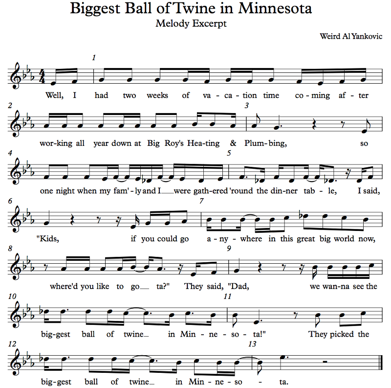Example 7.21
Unlike the Star Fox 64 excerpt, this one's mode is totally authentic rather than plagal. If you continue listening, though, you'll hear some sections in major. You can actually just listen for the V chord; mixolydian doesn't have it. But the V chord is popular, and that means that you rarely get strict mixolydian in modern popular music, and that's totally OK.
Are you calling Weird Al popular music?
Fuck you. Yes. Yes, I am. Weird Al fucking ROCKS. And this song rocks especially hard. I personally love story songs like this one; it's much better than blah blah blah love blah blah blah love.
By the way, this is one of those songs where you can easily figure out the chords from just the melody. Measure 1 we have an Eb major (I); measure 2, Ab major (IV), measure 3, Eb major (I). Measures 4 and 5 are a bit harder — could be Db (bVII), but if you listen, it's actually Bbm (v). These two are chords that are diatonic to the mixolydian scale but not the major scale. We'll talk about this a lot in later chapters, but I just want to introduce it here. Measure 6 is Eb (I), but then measure 7 has that mixolydian note, the Db, so it's actually Eb7. It resolves to Ab in measure 8, so it's actually a V/IV going to IV, not a I. This is a secondary dominant; we've discussed these before. Measure 9 is an Eb (I) again. Measure 10 has two chords, Db (bVII) and Ab (IV), going to Eb (I) in measure 11. This bit repeats in measures 12 and 13.
13. That's a kind of weird number of measures, no?
Kinda. A lot of songs have strict symmetry, with 4-bar phrases put together into 8-bar periods, stuff like that. More formally interesting songs might add a 2-bar coda here and there. Blues is very particular with its ternary form, with three 4-bar phrases making a verse. Well, this song is more meandering. It just kinda goes from one sentence to the next, taking whatever time it needs. It's a less satisfying form, but the benefit is that the symmetry of the song doesn't distract you from what's essentially prose, not poetry. There's rhyme, sure, but it's only when Al rhymes Minnesota (and it's usually a very forced rhyme, too, which adds to the humor; "where'd you like to go ta" is quite a stretch). This is a useful trick in story songs like ballads, where the text may not be so neatly cut into stanzas.
For another mixolydian example, let's go somewhere completely different: Pete Schickele's Monochrome III for 9 clarinets. I'm not going to transcribe any of it, but you should listen to the whole thing. It's kind of a cross between something bluesy at the start and a mixolydian section towards the middle (starts at 5:26) that you should specifically pay attention to.
9 clarinets, holy shit! This piece is off the chain!
I played this with the MIT Wind Ensemble. Twice, actually. It's a lot of fun, but pretty difficult to put together. I like how it mixes major and minor at the same time. The assistant director Ken Amis had instructions for the very end that I'll never forget. Clarinets 4 and 5 alternate E and F# for a while (this is in clarinet pitch, so they sound like D and E), and then they each hold one of the notes for a while. How long? Until it feels uncomfortably long, then hold it until it's comfortable again, and then release (the recording doesn't even come close to doing this). I think this is a truly great idea, that this timeline is even possible. You get uncomfortable, then you get comfortable again. The way I interpret it, you expect a certain length of note, so when it's too long, it breaks your expectation. But when it continues being held, you get used to it; that note is part of your world now. To summarize: "Notes end. Wait, this note's taking too long! Oh, I see, this note doesn't end. Huh, the note ended."
Side note, the composer Pete Schickele is also the musicologist who keeps discovering the works of PDQ Bach, the 21st of Bach's 20 children. If you haven't heard of PDQ, look up his stuff.
The actual last mixolydian example is from Aaron Lebedeff's very famous Yiddish rhapsody, Rumania. Most of this song is in mixolydian (with some bits in a minor mode we'll talk about later, dorian #4). One segment is excerpted below (Lebedeff doesn't sing it quite the same way, though):

Example 7.22
You can find plenty of other recordings of Rumania (with various spellings), but this is the only one with all of the verses. It's full of jokes in Yiddish (which I don't understand but I'm told they're funny), and it gets faster and faster and it's just a lot of fun. (I think the extended version may have a few verses in Romanian and/or Russian) And, of course, excepts for the bits in the minor mode, the whole thing is basically improvising on the mixolydian scale, which is why you should listen to the whole thing!
In klezmer and Yiddish music, the mixolydian mode has another name: Adonai Malach (Adonoy Moloch in Ashkenazic pronunciation). This name means "The Lord reigned", which is the first two words of Psalms 97 and 99, read as part of the Friday evening service. Here's where the mode stuff gets complicated. In Ashkenazic chazanut — that's the traditional chanting of the liturgy in Ashkenazic Judaism — there are several modes, which are like scales but they come with a bunch of melodic patterns that get chanted as part of the mode. One of those modes is, of course, Adonai Malach, the mode traditionally used in the section of the Friday night service where the psalms show up that start with those words (Ps. 93 also begins with Adonai Malach, but that's in a different section of the liturgy). The prayer modes are not just the scales we're talking about, since they also include these melodic motifs and other features. On the other hand, the klezmer modes really are just the scales. So let's be clear: Adonai Malach means nothing more than mixolydian in klezmer, but it means quite a bit more in Ashkenazic chazanut. In the song we just heard, Rumania, we're talking about the klezmer meaning of Adonai Malach. Another song in much the same vein in Adonai Malach is Moyshe Oysher's Chad Gadyo, also a fun Ashkenazic showstopper.
Hopefully all of these examples gave you a good feel for the mixolydian mode. I gave you a lot of examples because this mode is really everywhere, but if you just know major and minor, you may not even notice it. And yet, it's just major, but with a lowered 7th. It's barely different enough from major to merit having its own mode. That's mixolydian for you.
Dorian
So here's dorian, which is just (natural) minor with a raised 6th:
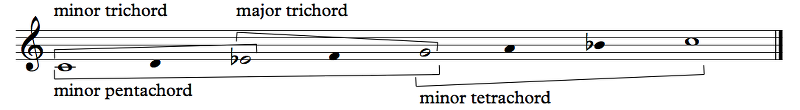Example 7.23
Play this in the Offtonic Scale Keyboard to get used to the sound. I think this is one of the prettiest modes. It's also symmetric: the pattern of Whole and Half steps is WHWWWHW, so if you play exactly the same intervals going down instead of up you get the same scale. Dorian is a common variant of minor in folk music. The characteristic tones are clearly the 6, which is raised in dorian and therefore is what makes it special, and the b3, to emphasize that it's minor. I'd say the b7 is also a crucial one, because if you have 6 and 7, that's not dorian (not that there's anything wrong with that, of course). You need 6 and b7 to make dorian.
English folk music is especially likely to use the dorian scale. I've quoted from Percy Grainger's Lincolnshire Posy, but there are plenty of other sources of English folk songs where you can find music in minor, and that music is almost always going to actually be in dorian rather than the classical minor. Still, I like Lincolnshire Posy. Here's Lost Lady Found:

Example 7.24
I like this tune. Ralph Vaughan Williams actually uses it in his English Folk Song Suite (check at 5:07, though the melody there is actually a variation of the above tune), which is full of other English folk tunes in dorian. By the way, Example 7.24 is in D dorian, and note the key signature: D minor. This is just like the lydian and mixolydian cases; sticking to major and minor for key signatures makes it much more readable.
While there's a lot of English folk music in dorian, it's actually not a very popular mode in popular music. I think it's because the dorian sound is very particular, and popular music is often based on a scale that doesn't even have a 6th degree (which we'll discuss soon). When it does show up in popular music, it's... still English folk, like in Simon and Garfunkel's version of Scarborough Fair.

Example 7.25
There is literally only one 6 in this piece, the C# in measure 3. How is this dorian? Looks like it's just the one accidental.
Ah, it's in the accompaniment. It's in the guitars, the bells, everything. In the other verses, Simon and Garfunkel intersperse Scarborough Fair with another song, Simon's Canticle, and that melody is in an improvised dorian as well.
Dorian also shows up in Moroccan music, in the nubah system. Nubat are... not really modes in the sense that we think of them, but they're essentially entire concerts, using a variety of prescribed rhythmic and melodic modes depending on the particular nubah. In particular nubah Raml al-Maya uses the dorian scale. In the Moroccan Jewish tradition, the piyut (liturgical poem) Y'did Nefesh is sung as part of this nubah:
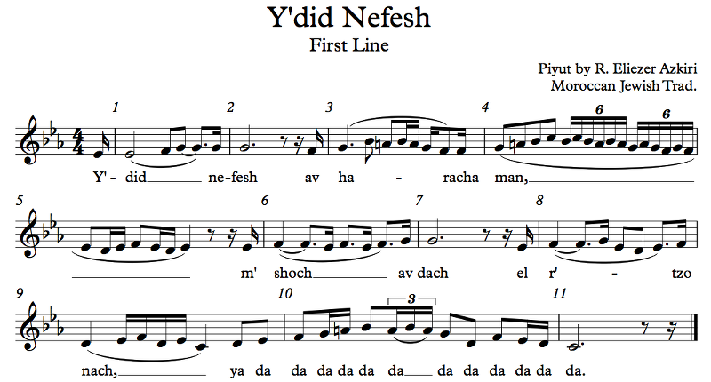Example 7.26
In the recording you can hear the guitar doing some more dorian stuff between the verses. This is, of course, not the most traditional of renditions of this melody, but I like it. With these old melodies, what we usually find is that everyone has a different way of performing it. I transcribed how I like the melody to go, but Shlomo Bar and Rakefet Amsalem don't do it that way, and that's OK! They also take liberties with the time, add embellishments to the notes, etc. This kind of thing is common in many musics of the world. Western art music has a tradition of sticking to the notes, but it's actually not even a very old tradition. Even in Bach's time, sooists would add improvisatory flourishes. In the 19th century, Chopin's piano works were certainly not meant to be played in strict tempo either. Ornamentation is taken to extremes at American sports games when some pop singer butchers the National Anthem, but as musicians, it's in our nature to put our souls into the music, and this is the only way we can without destroying the underlying song. A musician who can't embellish (when appropriate) isn't making music.
Dude. That's way out of line.
No, I'm serious. I'm hoping that this book will teach you enough about music that you'll be able to feel that ornamentation yourself, because you do have to feel it. It can't be mechanical. Ornamentation is a little act of composition, even if it's just messing with the tempo or adding grace notes or exaggerating dynamics, and I know we haven't talked much about it, but composition is an inherently creative act. You can't just theorize your way to composing great music. You have to actually create.
Anyway, I think that's a good taste of dorian for now. I encourage you to explore this mode, since it's one of the most beautiful ones. Let's go to the next one:
Aeolian
The aeolian scale is actually just the natural minor scale:

Example 7.27
So why are we talking about it? We skipped ionian because it was just the major scale, so haven't we already talked about minor?
We're talking about it because it's natural minor, and we talked about... regular minor. The minor scale has variable 6th and 7th degrees. Actually, it's mostly just the variable 7th degree; the 6th is only raised when it's a passing tone. On the other hand, the aeolian scale embraces that b7. Normally the characteristic tones would be the ones that make up the tritone in the scale, the 2 and b6, but since we're not really comparing the scale to phrygian or dorian but to minor, the tones that make aeolian what it is are the b3 and b7, and I guess also the b6. As such, the aeolian scale is used all over in popular music. It gets a little confusing, though, because the aeolian scale lacks a leading tone and therefore has no V chord, but pop music in minor uses the V chord anyway even while the melody stays in aeolian. Is this minor or aeolian? Meh. It's not that useful a distinction. What is important is that aeolian music uses the subtonic, the b7, to resolve up to the tonic, while music in traditional minor uses the leading tone, the 7. That b7 is likely to be harmonized with bVII or v, while the 7 in minor is usually harmonized with V or viio. We're going to talk about how these harmonies work in a later chapter. For now, let's look at some examples!
This is Erev Shel Shoshanim, an Israeli popular song from the 1950's. You can hear my old a cappella group, Techiya (including myself on tenor), sing my own arrangement, or you can listen to a boring traditional version by Hadudaim. But first, try to sing the transcription below:
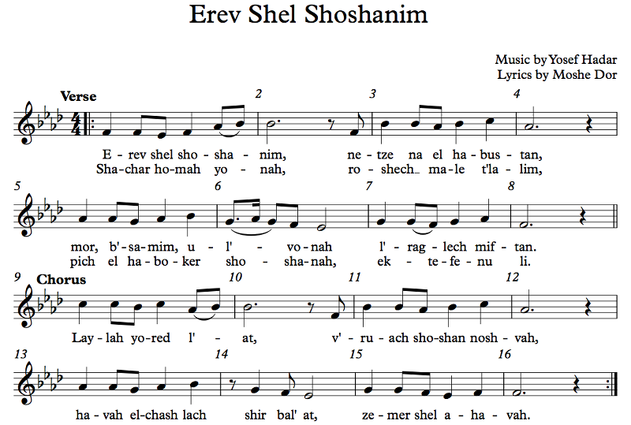Example 7.28
The melody is quite simple. There's a simple rhythm, 1 2 and 3 4 1, which repeats every two bars, basically, and the pitch level of each motif goes down a bit. The verse and chorus are actually very similar; the only real difference is the first measure of each (measures 1 and 9). The verse starts low but resolves up at the fourth, while the chorus begins at the fifth and resolves down to the fourth. There are a couple of other differences I made, like the rhythms at measures 6 and 14 and the contour at measures 7 and 15, but those aren't really essential to the melody. I personally find 15 more final than 7, which is why I prefer it for the chorus.
I didn't write them here, but if you listen to either recording (and I may be biased but I like my arrangement better) you can hear the chords. The chords using the aeolian note, the b7, feel a little... exotic, don't they? That's the aeolian mode for you.
How is the aeolian note the b7, exactly?
Eh. So, the lydian note is the #4. The mixolydian note is the b7. The dorian note is the 6. The phrygian note is the b2. The locrian note is the b5. What's happening is that we're specifically talking about the note that makes that mode stand out from major or minor. Lydian is major, but with a #4. Phrygian is minor, but with a b2. So aeolian is minor, but with a b7 instead of the variable 7th degree. You don't have to agree with me. This isn't exactly standard terminology. But that's how I think of it.
So the mixolydian note is the same as the aeolian note?
Yeah? So? Mixolydian is major with a b7. Aeolian is minor with a b7. I think that's fine.
Hm. I suppose.
By the way, it may be useful to have a quick sync-up about singing. You should be trying to sing each of these examples, with or without the help of a keyboard of some sort, before listening to the recordings. If you're having trouble doing that, the ideal thing to do is to write numbers on top of the notes to represent their scale degrees, and if you're still having trouble you plunk out the note on the keyboard and sing it (even if it's in a different octave). If you aren't doing that, you'll probably just get more and more confused as the book goes on. So do that, I guess.
Another example, Michael Jackson's Smooth Criminal (the actual music starts at about 1:06):
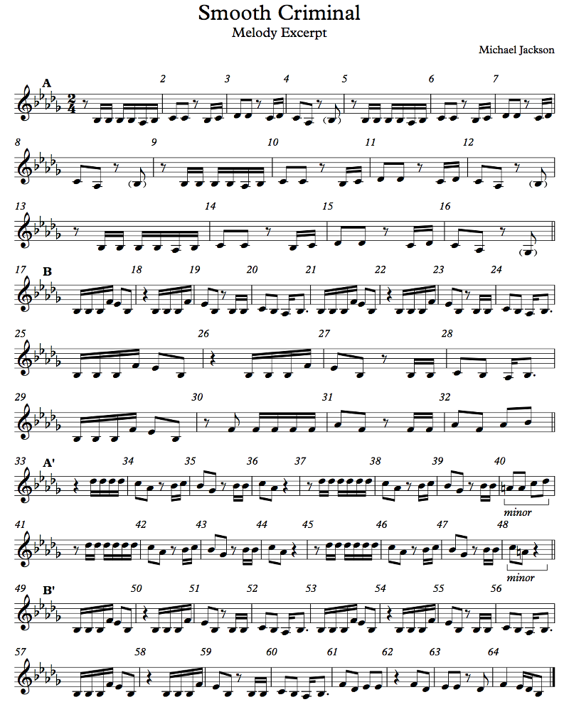Example 7.29
I didn't realize it until I was making the transcription, but there are actually a couple of V chords, with the raised 7th, in the A' section. I marked those. I guess they serve as a good reminder that aeolian and minor aren't really distinguishable. Aeolian is minor. It's just that minor uses the V and its raised 7th, while aeolian uses bVII's and v's as dominants instead. Smooth Criminal usually sticks to the bVII's and v's, but there are those two chords in one section where it's a V. You can't see it in the transcription, but measure 32 also has a V chord, which in the key of Bb minor would be F major. The F major chord contains an A natural, but measure 32 has an A flat! If you remember from the previous chapter, that would make this chord an F7#9 (the Ab is actually a b10, not a #9, but we call the chord #9 anyway). But here's the weird bit. Usually, in V7#9 chords, the 3 of the chord resolves up while the #9 (actually the b10) resolves down. But here, they both resolve up to the tonic. Common Practice minor always has the 7 as a leading tone, never the b7, but here the b7 (the Ab) is resolving up to 1 as well, giving the song its aeolian character. Still, classical music types would never tolerate that kind of "bad" voice leading, but Michael Jackson knows better. The Ab in the melody against the A in the harmony create a tension that the MJ simply doesn't want to resolve. Instead, he wants to ratchet it up for the A' section.
Why did you call them A' and B' instead of, like, C and D? I think I can see why you used B' since it's very similar to B, but A' is pretty different from A, isn't it?
Let's do some analysis, which will hopefully answer your question. I think the most interesting things about Smooth Criminal are the form and the rhythm, so let's talk about how this song evolves. By the way, in Michael Jackson's original, there's actually another A section between A' and B', except it's instrumental only — it's Michael Jackson, so there's got to be a dance break. You know how he goes. Anyway, the song is characterized as a whole, most of all, by frantic worry about whether Annie is OK. (Spoiler alert: She ain't OK. Annie dead.) Jackson conveys this with staccato fast notes in the distorted guitar and syncopation in the A section. It's a very nervous beat. You can feel every eighth note (which we call subdividing); there's nothing laid back about it and it's aggressive, with the nervous beat also resembling the firing of a machine gun. The notes in parentheses are important rhythmically but aren't sung by Michael; they add to the unsettled feel. Then we get to the B section, and the guitar is no longer doing the staccato 16ths, but the melody still has that rhythmic motif. The guitar, however, is playing the chords half a beat early; the parentheses Gb in measure 16 is actually the chord for measure 17. The B section does something really interesting. At measure 25, we have the melodic snippet that corresponds to "Annie are you OK". That happens on beat 1 of measure 25, but when it repeats the next bar, it's on beat 2! This is known as rhythmic displacement, and it's confusing! What beat are we on? That confusion is part of the frenzy as we start seriously worrying that Annie is dead. The last four bars of the B section take this motif up a fifth from authentic to plagal (at bar 30) as we completely freak out about Annie's lack of OK-ness. The chord with the A and Ab at 32 drives that freaking out home, and that's why Michael Jackson can't resolve it classically — that tension gets more intense, not less.
Then we get to the C section. I mean, A' section. I actually called it C originally, but I changed it to A'. Why? This section has the same rhythm, almost, as section A. It's just inverted! While every four bars in A goes up then down, in A' the melodic contour goes down then up, but it's basically the same rhythm. A' is just an inverted an higher version of A. At this point, we're processing what just happened and crying over our loss of our dear murdered Annie. Michael Jackson is singing way up high because that's what he does, and the repetition of the structure of the A section unifies the song itself by establishing this section as a variation of A instead of completely new material. After the A' section, there's the dance break, and by then we're just listening to a song; we're not so nervous anymore, and we can enjoy the musical elements. Besides, who was Annie to us, anyway? She's a fictional character. Meh.
Interesting note about this: Annie is actually the name of the mannequin used in CPR classes, and you're taught to ask, "Annie, are you OK?" to make sure the patient is responsive.
After the dance break, the frenzied "Annie are you OK" of the B section comes back, but by this point it's just fun music. The difference is that the last four bars serve as the conclusion of the melody, with the title drop at 64 ("You've been hit by, you've been hit by a smooth criminal.") The same rhythmic displacement is happening here at 61 and 62. There's an added element of displacement as well, the shots/drum hits. In the motif at 61, both eighth notes of the quarter rest at 62 get a shot, but in the repetition, there's only one shot in the eighth rest, making the displaced version shorter by half a beat. At 64 we get the title drop, but the music picks right back up afterwards. Why? Because 64 ends on a metrically weak beat, on a non-syncopated and of 2. This is a great example of why popular music sometimes fades out instead of actually having a conclusion; Smooth Criminal does end at some point, but it's actually at the end of another A' section much later, though the and of 2 at 32 is accented. The ending is kind of abrupt but it feels good. A lot of popular music, though, prefers not to have an ending at all. Part of it is that the music never has to end in your head. You can keep singing it forever. It's a recipe for an earworm. The other part is that the song doesn't have to lose momentum. Fading out can be rationalized as what needs to happen in order to get to the next song; you stop listening, but the song itself goes on and on.
Just one more thing I want to say about Smooth Criminal: apparently, as per the Wikipedia page, the song is in Am, not Bbm; it's just played very sharp. Uh, OK. I think it's closer to Bbm, which is why I transcribed it in that key, but it really is somewhere in between. Sometimes musicians do that to make the music pop a bit, since people have pitch memory of A440. This leads to tuning wars, and people tune higher and higher and we all suffer. I have no idea why Michael Jackson tuned Smooth Criminal higher than A440, and it's too late to ask since he's sadly joined Annie in the world of the not OK.
There's a lot more music that uses the aeolian mode, but it's so similar to minor that we really don't need more examples, I hope, so let's move on to one of my favorite modes:
Phrygian

Example 7.30
Phrygian is minor with a b2. We usually think of mixolydian as a kind of major and dorian as a kind of minor, and many people think of phrygian as a kind of minor as well, but it turns out that the b2 actually makes a huge difference. Phrygian is different. You should play around with it in the Offtonic Scale Keyboard to get the feel.
It's quite... dark.
It is. It's a combination of the b3 and the b2. The b2 is unequivocally the "phrygian note", and because it's so low, it puts the minor feel into overdrive. The notes that form the tritone in phrygian are the b2 and the 5, but since we can generally assume the 5 because almost every useful scale has it, the characteristic tones of phrygian are the b2 and b3. This is important, as we'll see later on in this chapter, when we run into a variation of phrygian that has a 3 instead of a b3, phrygian dominant. Phrygian dominant is much more widely used than plain phrygian. In fact, I couldn't name any songs off the top of my head that use phrygian, so I looked it up, and... there's still almost nothing. I can think of many phrygian moments in Jewish songs in minor, though. Here's an example, which you'll have to sing or play on your own because I don't want to find a recording. This is a melody for B'chol Dor Vador, part of the Pesach haggadah:
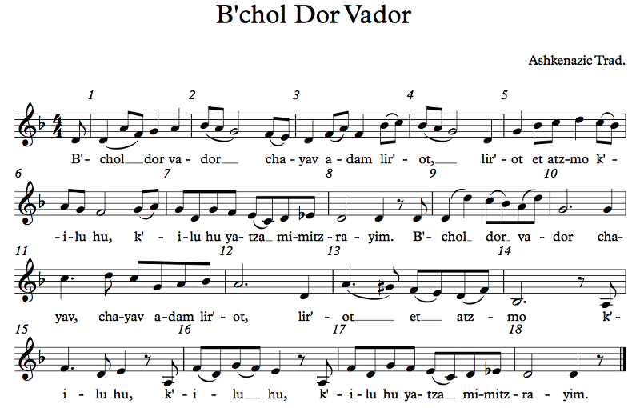Example 7.31
What does it mean?
Towards the end of the narration part of the haggadah, before all the blessings for the meal start, the text contains what I consider to be the central message of the holiday: "In every generation every person must see himself as if he had gone out from Egypt." In other words, the Exodus isn't just something that happened to other people. Hell, it doesn't need to have happened at all, as historians now believe. What's important is that the people celebrating Pesach put themselves into the narrative. You can, of course draw whatever conclusion you want from this, but I think that one of the more universalizable lessons to draw from this line is that we must, imperatively, put ourselves into the position of others in order to understand them and understand the world. We must try to imagine how they feel, as realistically as possible. I personally think that knowing their music is a big step in that direction.
Speaking of music... Right. So. This lovely song. It uses a fairly common device in Ashkenazic music, and you can see it at bars 7 and 17: ending a minor melody in phrygian. Beat 3 of those measures has an E naural, while beat 4 has an Eb. I think that just makes it incredibly pretty. This song — actually, maybe it's just how I sing it and other people don't do it this way — also has another little change of mode (when the mode changes but it stays on the same tonic, like from C major to C minor, it's called a modal interchange), this one at measure 13 with that G#. We'll talk about that mode a bit later; it's dorian #4 (1 2 b3 #4 5 6 b7).
Why is this song so lovely? You can come to your own conclusions, but to me, it's because of the somewhat large leaps to chord tones, as well as the contour. There's a kind of softness to the melody, I think. There's also a soothing repetition of rhythmic motifs; measures 1 and 2, 3 and 4, and 5 and 6 all share a two-bar rhythm, and in the B section (starting at measure 9), 9 and 10, 11 and 12, and 13 and 14 all have the same two-bar rhythm (though it's different from the one in the A section). Then there's a kind of extended ending. The B section goes on for 10 bars instead of the 8 of the A section. This is necessary because of the harmony; at 14, we end on a b6, which indicates a iv chord. This chord is a pre-dominant in a strong rhythmic position, so it needs a bit of time to get to a final tonic, and repeating the ending words are a good way to spend that time. In many versions of the song, actually, measures 15 to 18 are repeated, making the ending even more extended.
You mentioned an A section and a B section, but you didn't label them. How do I know where that happens?
As is usually the answer: use your ears! Measures 7 and 8 clearly conclude a section of the piece, right? Measure 9 clearly starts a new section. So the first section is section A and the second, which is different from the first, is section B. You'll often hear musicians refer to the A section or the B section of some tune, and it won't be marked in the sheet music; in fact, there may not be any sheet music at all and people might be talking about a tune they heard. This will be the case for any tune that comes in two parts. Sometimes there'll be a third contrasting section that shows up after a few repetitions of the A and B sections, and that's obviously a C section, also called a bridge. You won't generally hear people talk about a D section; by that point, it's not obvious what you mean. Sometimes, the B section is clearly much more intense than the A section, and then you might say that the A section is the verse and the B section is the chorus, especially when there are lyrics and the lyrics of the chorus are similar every time but the lyrics of the verse are very different. The verses don't even have to have the same structure every time, either, but generally the recognizable part of the song is the chorus. In addition to these sections, there may be intros, codas, etc., and you should similarly be able to tell where those are.
So, that was a song with literally one note in phrygian. Let's listen to something that uses phrygian for a more substantial amount of time, shall we? This is from Joaquin Rodrigo's Concierto de Aranjuez for guitar and orchestra, movement II, which I mentioned back in Chapter 3. This particular excerpt begins at 6:33 and it's the beginning of one of the most awesome cadenzas ever written. You absolutely need to listen to the end of the song, and you should ideally listen from the beginning too. I actually copied the excerpt from the sheet music, except that I left out all the fingering and string information. The sheet music is full of p's, i's, m's, and a's, indicating right hand fingering (p is thumb, i is index, m is middle, a is ring, and c is pinky but that's not generally used in classical guitar), 1's, 2's, 3's, and 4's, indicating left hand fingering (1 is index, 2 is middle, 3 is ring, 4 is pinky, which is not how piano fingering works), numbers in circles indicating the string (1 is the highest, 6 is the lowest), and Roman numerals indicating which fret your index finger should be at, but I didn't copy any of those.

Example 7.32
Wow. So wait. What key are we in? It sounds like G# minor, but the key signature says E major or C# minor. Which is it?
THE KEY SIGNATURE LIES! IT LIES! It's G# phrygian. See the A naturals? Rodrigo (or his editor, since Rodrigo was actually blind) decided to write the key signature for G# phrygian instead of what I'd do, which is to write the key signature for G# minor and use accidentals for the phrygian note and any other altered tones. Lest you think that the key signature is a holdover from a previous section in E or C#, it isn't; before the first measure of this excerpt, the key signature was actually B minor.
It looks so fast! What's up with all the 32nd notes? And 64th notes too at 8 and 9!
This excerpt is from an extended cadenza. A cadenza, not to be confused with a cadence, is an unaccompanied solo in a piece for a larger ensemble, where the timing is up to the performer. In this case, the Concierto de Aranjuez is a concerto for guitar and orchestra. This means that the guitar is the featured solo instrument, and the orchestra plays the accompaniment. Well, for the duration of the cadenza, except actually a bit at the very end (past this excerpt), the guitar is playing alone, without the orchestra, and the tempo and the timing are completely up to the guitarist. In this case, the tempo is adagio, which is slow enough that the 32nd notes aren't actually too fast. But if you listen to Narciso Yepes, he doesn't play them straight. He plays parts of it slower and parts faster, going with how he feels the music ought to be shaped. He gets faster as the music gets higher and more frantic. So the fact that 32nd notes are written is just not a big deal; the soloist can basically do whatever he or she feels like.
At the end of measure 2 there's a crescendo to forte, but there's no dynamic earlier, so where is the crescendo from?
Obviously there was a dynamic before the cadenza starts. Let's check what it is... oh. It's ff. Well then. Yeah, it's just not there. But it's a cadenza, so who cares, really? The soloist can do whatever he or she wants in terms of the dynamics. Actually, you can't see it here, but in other parts of the piece, Yepes even changes the notes a little bit! There's a repetition he does one more time than is written later in the cadenza, and in part of the melody before the cadenza he also does some elaboration. And guess what? He's the soloist. The conductor may think he's the shit, but the soloist is the real boss in a concerto.
Let's talk about the music itself. This excerpt is really in phrygian, and actually the rest of the cadenza is also completely in G# phrygian with not a single note outside the scale. Phrygian modes are fairly common in Spanish music, but they generally use a modified phrygian mode that we'll talk about in a bit with other Spanish examples. This one is just straight-up phrygian. The more interesting feature of the cadenza as a whole, though, is how much it emphasizes the G# tonic. When a note is held while other stuff happens, that's called a pedal point, and while that's not quite what's happening here since the G# isn't technically held the entire time, the effect is similar. You still feel that low G# constantly. That's useful in phrygian, because while the b2 usually leads very strongly to the 1, it's easy to mistake that for a b6 leading to 5 in minor, so emphasizing the tonic keeps the tonic strong.
This excerpt also features an interesting melodic pattern. At 1, we have this melody beginning D# C# D#. It proceeds for a measure, and then we get roughly the same melody at 2 but beginning G# F# G#, a fourth higher. It's not always a perfect fourth because we're always staying within G# phrygian; we call this a diatonic fourth. Then some other stuff happens, but at 6, the noodling takes us to that same melody, this time on C# B C#, yet another fourth higher, and this time with chords. Next measure, measure 7, it happens yet again on F# E F#, yet another fourth higher! This whole time we have the G# pedal, so there's an interesting effect as the same melody gets recontextualized in a different way every time it repeats, since it has a different relationship to the pedal. It doesn't go higher, probably because you'd need the hands of Stretch Armstrong to keep playing the low G# on the fourth fret in the 6th string and the high G# on the 9th fret in the 2nd string. My joints hurt just thinking about it. Instead, we get this neat triplet figure, essentially a scale by thirds (the simplest example of a scale by thirds would be something like C E D F E G F A, etc.), leading up to a very high G#, which goes down by octaves all the way to the low G# that was our pedal through measure 7. The second half of measure 9 is actually part of the next section of the cadenza, but I didn't want to cut the measure in the middle so there it is.
This cadenza is always very exciting to me because one of my all-time favorite moments in music is what happens after the cadenza. This is why you have to listen to the end of the movement. In the video, it happens at 8:40, but the setup starts at least at 8:23 (well, the entire cadenza is the setup). What happens is that the music gets more and more intense, and at the end of the cadenza, the guitar soloist is shredding some dissonant but concluding chords while the strings in the orchestra punctuate the rests with pizzicato hits: danananananananananananananana, bum, danananananananananananananana, bum, danananananananananananananana—
—but not that rest. And you really miss that pizzicato hit. It's what a conductor I had once called a "loud silence". It's an extremely pregnant pause, at least if it was set up well enough. You can hold it a little bit longer to make the listener wait for the payoff, which happens on the next beat. It has to happen on the next beat or you'll leave your listener frustrated. I mean, maybe you want to do that. I have no comment. But in this piece, the payoff is the repetition of the melody, loudly and by the full orchestra. If your audience is not well-behaved, this is when they spontaneously stand up and cheer. They need to bring that kind of thing back to classical concerts, honestly. Just because it's music by old dead people doesn't mean it can't be exciting!
On the other hand, by then we're not in phrygian anymore. Eh.
I have one more example on music in phrygian, but I won't give you a transcription this time, just the recording. This is Tower, my (only) award-winning composition for brass sextet, specifcally the first movement. It's not in phrygian consistently, but almost all of it stays in. There are a few v chords, containing natural 2's, and that's I think a good example of how your music in a mode doesn't need to slavishly stick to that mode. This piece is also, deliberately, in sonata form.
So it's a sonata? What's a sonata?
I actually still don't know. It's usually a chamber piece for solo and accompaniment, I think, so like a concerto but for a small ensemble rather than an orchestra. Or just a solo instrument like Beethoven's piano sonatas. But whatever; the first movement of Tower is not a sonata. Rather, sonata form is a very common way of organizing music, specifically the first movement of multi-movements works like symphonies. The way it works, there's a theme or two, which shows up near the beginning in the Exposition. After these themes have been... exposed, I guess, they start getting transformed, going into other keys, getting broken down and made shorter, etc., and this is the Development. Eventually, the themes return, possibly in a somewhat changed form, in the Recapitulation. Of course there's other stuff going on around that, like an introduction, a coda, etc.; this is just a general form. This has nothing to do with the phrygian scale, but it's going to tell you the basics of sonata form and it's absolutely hilarious: Pete Schickele announcing the first movement of Beethoven's 5th symphony, ESPN-style. You need to listen to this. Just saying. Anyway, see if you can identify the Exposition, Development, and Recapitulation in the first movement of Tower. You can obviously listen to the other movements too; I don't mind! They're not in phrygian, though.
Before we move on to our final diatonic mode, there's something important about the phrygian mode that we have to discuss: the b2 is a leading tone. The 2 is not. The b7 didn't use to be one, but it's often used that way today. The b2 is as strong as the 7, but it works in different ways. This means that music in phrygian (or other modes with the b2 that we'll talk about) has a whole new way of resolving compared to major and minor, but it's different because of the intervals that the b2 makes with other unstable notes. The 7 likes to be paired with the 4, making an unstable tritone that resolves to 1 and 3 or to 1 and b3 in minor. The b2 and 4 make a major third. It's not unstable. That doesn't mean it can't be used, and in phrygian dominant (which has a 3 rather than a b3) it resolves to 1 and 3, but the resolution in normal phrygian to 1 and b3 is a bit unsatisfying. The b6 is also unstable, but b2 and b6 resolving to 1 and 5 is a case of parallel fifths (we'll get to those soon, in a later chapter) and therefore also unsatisfying. Harmony in phrygian is simply a bit tricky. One of the better solutions is to pair the b2 with 5, creating a tritone that resolves to 1 and 5. I showed you this back in Chapter 5. We also see b2 and b7, resolving to 1 and 1. That's actually all of the notes in the phrygian scale that the b2 can be paired with other than the 1 and the b3, so we can see that the possibilities are different but somewhat limited. Phrygian harmony as a result can sometimes be a bit static, and there's nothing wrong with that. It's worth it for that delicious delicious dark feel.
Locrian
The final diatonic mode is locrian, and it's very little used. You'll see why:
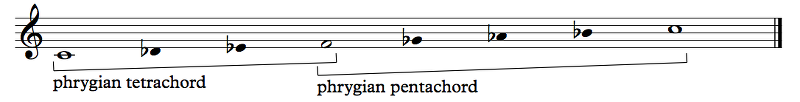Example 7.33
Try it in the Offtonic Scale Keyboard and see if you can get the tonic to feel like a tonic. THe locrian scale goes 1 b2 b3 4 b5 b6 b7, and that means that it has no 5. No dominant. The 5 establishes the tonic, so without it, the tonic has a hard time getting established. The tonic triad is diminished, which doesn't feel resolved. The characteristic tones are the b5 and b3, meaning that deemphasizing that diminished tonic triad is not easy. The locrian scale is simply not usable.
So I can't use it?
Oh, no no no, some brave souls have composed music in locrian! I'll show you some in a minute. First, though, I want to call attention to how I broke up the scale fragments. In all of the other diatonic modes, we have the root, third, and fifth as stable tones, but here, the fifth is not stable; in fact, it strongly leans to the fourth. So while phrygian consists of a phrygian pentachord with a phrygian tetrachord above it, locrian has a phrygian tetrachord with a phrygian pentachord above it. However, the locrian feel comes from actually having that 1 established as the 1, and that's kind of a challenge.
The way I broke up locrian into scale fragments is not the only way to do it. You can still have the 1 b2 b3 phrygian trichord and the b3 4 b5 minor trichord, and what this does is that it establishes the 1 as the root of the first trichord and the b3 as the root of the second, and the b3 reinforces the 1. There are very few pieces of music in locrian because of how unusable it is, but John Kirkpatrick managed to write one that uses the trichords this way, Dust to Dust:
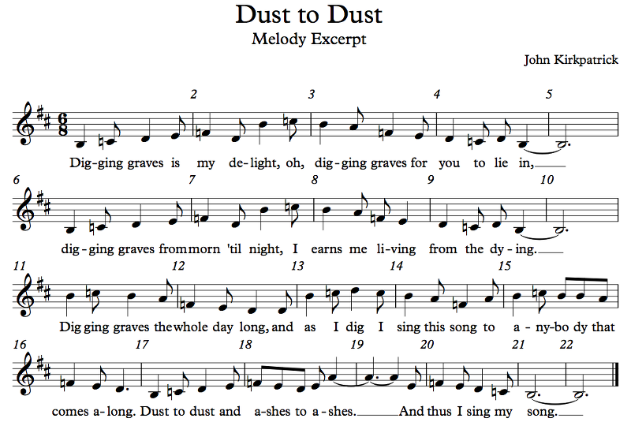Example 7.34
This piece is an English folk revival song, not an authentic folk song but a modern song written in the style of older folk songs. Of course, the older English folk songs were certainly not in locrian. I guess the dark nature of the scale inspired Kirkpatrick to use it for the song of a gravedigger. It's a perfectly pleasant tune, but if you listen to the recording, there are no chords. Because locrian really doesn't play well with those. Again, you can try. Go ahead! Let me know what you make!
Dust to Dust begins with a run up the scale, 1 b2 b3 4 b5, to tell us that, yep, this song is in locrian. But the F doesn't really have a strong relationship with the B, so the D is used as an intermediate note. B to D is a minor third, a relatively strong interval, and D to F is another minor third. The F anchors the D and the D anchors the B. The song continues to rely on this relationship throughout. We get a bit of a creepy feel from the A going to the F, making a major third, a bright interval when all of the other intervals are darker. Major thirds in otherwise dark pieces generally sound more creepy than anything else. We get a different relationship that stands out in measure 18, where we have a perfect fourth. I think it's the only one that's emphasized in the piece, and it's the only instance of tonicizing something other than the B or the D. It doesn't last very long, of course!
Two more things I find interesting about this song. First, the phrase lengths. The first two phrases are 5 bars long. Kind of unusual, right? A little bit? Those phrases are somewhat symmetrical, but the last note would just be too short if it weren't held over for another measure. It's a little tricky to figure out where the phrase boundaries are in the second half. We get a little motif at 11-12, which gets repeated but higher at 13-14, then repeated at the same level at 15-16, but then we return to the opening motif at 17 for the ending, featuring that E - A fourth that establishes that we're at the end of the verse. The second thing I find interesting is that this song doesn't have a G anywhere. Did you notice that? B C D E F A, but no G. I don't have any useful insight about this. I just thought it was interesitng.
Another piece in locrian is the second movement of Vaclav Nelhybel's Trittico, which covers a wide range of what the locrian mode has to offer, as well as featuring a bari sax solo (starting at 4:07)! How cool is that? Trittico does have some chords, but not very many. "Trittico" just means triptych, which, in art, is a painting with three panels, usually foldable, but it can just be any piece of art divided into three displayed side by side. This work consists of three movements, so I guess Nelhybel thought he'd call it a triptych. Another example of a triptych is William Schuman's New England Triptych, based on hymns by Massachusetts composer William Billings. This has nothing to do with the locrian scale, but it's worth a listen. I've played the band version of the third movement, Chester, a whole bunch of times. It really grows on you.
My final example is much more pretty than dark. It's the Moroccan melody for chanting the Song of Songs (starts at 1:00), which is traditionally done on Friday afternoons before Shabbat. You actually saw a different form of this in Example 2.15. I recommend that you listen for a bit, but it gets repetitive so probably not the whole thing. Just a minute or so is enough to get the feel. But try to sing the following first:

Example 7.35
If you're not familiar with the Bible, Song of Songs (also called Song of Solomon in some Christian traditions) is a long poem attributed to Solomon describing... love stuff. I quoted the first real verse (verse 1 is the title); the nJPS translates it as: "Let him give me the kisses of his mouth! For your love is more delightful than wine." There's lots of sexy garden imagery, sexy smells of spices and flowers, extended descriptions of sexy body parts, and so on. You may ask, how did this obviously erotic poetry end up in the Bible? I'll tell you. I don't know. But it's traditionally understood as a metaphor where God is the male king and Israel is the woman, because why else would this obviously erotic poetry have ended up in the Bible? Or something like that. As for why it's read on Friday afternoons, I'm sure there's a real answer other than because fucking on Shabbat counts as a double mitzvah and it gets the guys started, but I can't be bothered to look it up.
Anyway, I find the Moroccan chant for this book very appropriately sexy, and it's in locrian, which might come as a surprise since locrian is supposed to be dark and dissonant, right? Well, if you look carefully, it's using the division into fragments that I laid out above, where the lower fragment is a tetrachord ending on the 4. The b5 serves to decorate the 4, which is another center of stability. Since this song doesn't do a lot of leaping around, the 4 doesn't compete with the 1.
What's the time signature?
Oh, yeah. Hm. I removed them. The first measure is 3 beats long, the second 4 beats, the third 5 beats, and the fourth 2 beats. You don't actually need to know that; you just need to sing the notes.
Why does it keep changing?
We mentioned this briefly in Chapter 2. If you look at Example 2.15, you'll see that the chant there is actually pretty different from this one, for the same line! There's a lot of variation. The fact is that the poetry of Song of Songs is not metrical poetry, with a regular number of syllables in each line or whatever. That's not how Biblical poetry works. This chanting is logogenic, meaning that the melody fits the words rather than the words fitting the melody, which would be called melogenic.
Now, you may argue that this chant is in a different mode from the other two examples we heard, Dust to Dust and the second movement of Trittico. The other two relied on the 1 b2 b3 and b3 4 b5 trichords, while this one relies on the 1 b2 b3 4 tetrachord with the b5 as a neighbor above and the b7 as a neighbor below. What it shows, however, is that there are multiple ways to use the locrian scale, and they aren't all dark and ugly. They can be dark and sultry as well.
Writing in the Diatonic Modes
There's a kind of misconception that if you're writing in one of these modes, you can't use any notes outside of the mode. That's obviously bullshit, but there's an undigested grain of truth inside it like a kernel of corn: if you don't emphasize the characteristic tones of the scale or you use notes from outside the scale, you weaken the feel of the scale. And guess what? That's OK! The problem is that it's harder to establish these scales as the "home" scale of a piece than for major or minor due to the lack of a dominant V7 chord, which has a strong pull to the tonic a fourth above. For example, if you play an F7, you're probably going to want to resolve to Bb, but that chord is actually diatonic to C dorian, which is not Bb. Just hearing the notes of the F7 chord will strengthen Bb as the tonic, which it isn't. If you don't carefully avoid such things, you'll have an easier time keeping your mode and your tonic. But you totally don't have to. When I write pieces in these scales, I certainly don't! I wrote Beren and Lúthien in D dorian, at least in the first verse, but there's a big ol' Bb and G# in there as part of an augmented 6th chord (Bb D F G#) in the second half of the first verse. So? I write what I want, dammit!
But if you do want the feel of the mode to come out, do make sure to use the charaacteristic tones and preserve the tonic. You can switch modes for a measure here and there, though. Never forget that this is a possibility.
Now, let's move on to a completely different set of modes, shall we?
The Pentatonic Scale
We call it "the" pentatonic scale, but it's actually only "a" pentatonic scale. Pentatonic just means that it has 5 notes, and there are quite a few collections of pitch classes with that description. But when we talk about "the" pentatonic scale, we mean this one:
Example 7.36
Generally, we're actually talking only about the first one here, the major pentatonic. This scale is somehow quite fundamental; we see it pop up in a variety of cultures across the globe, from Native American to European to African to East Asian, and probably even into Oceania as well. Everyone does pentatonic in some way! There's even a cool video by Bobby McFerrin, who's an amazing genius at everything (seriously), demonstrating this phenomenon. The audience gets the 3 without being told, but they do get told the 6, and while they get the 5 without being told, he's been singing the 5 for a while by then. It's not magic. But it's still really cool.
Why only 5 notes? Is that enough?
Yeah, actually. Not for chords, sure, but for melodies it's fine, and a lot of music uses the pentatonic scale. I mentioned when I was talking about the aeolian mode that a lot of pop music doesn't use the 6th degree at all. That's because they're mostly using the minor pentatonic, not actual aeolian! It's hard to avoid the 2, which the minor pentatonic lacks, but it's quite easy to never see a b6. The best way, though is to try it yourself. Go to the Offtonic Scale Keyboard and play through some of the pentatonic scales, and see if you can compose little melodies as you noodle around.
There are some very important features of the pentatonic scale that you ought to be well aware of. First, it has no semitones. It has whole steps and minor thirds. It has no major sevenths, obviously, and it has, very importantly, no tritones. So everything sounds good (well...) in the pentatonic scale; you won't come across any strongly dissonant intervals. In the major scale, the tritone is between the 4 and the 7, and the half steps are between the 3 and 4 and the 7 and 1. Well, the major pentatonic is the major scale with the 4 and 7 removed. No tritone, no dissonance, and... no tension. Don't worry, be happy! (OK, Bobby McFerrin does have some notes outside of the scale in the harmonies, but not the melody, and that's what counts, right?)
Man, this guy.
I know, right? The other important thing: the modes are... not really usable. See, the major pentatonic is missing arguably its least important notes. Western music will loudly disagree, saying that the 4 and 7 are the most important notes ever and any scale without them can't progress. It's right, but eh. If you don't want functional harmony, you don't need them. Kick 'em to the curb! But, see, the major pentatonic has the 1, the 3, and the 5, the tonic triad, and the minor pentatonic has the 1, the b3, and the 5, the tonic triad for that scale. The other three modes do not. That makes them unstable and not really very usable. You can play around with them and see if you can figure anything interesting out. I think that the second mode, the "dorian" pentatonic, is actually quite full of possibilities, and I've even heard music in it. The other two, though, I really don't think so.
Why the scare quotes?
These modes are named to be consistent with the modes of the diatonic scale, but there's a little problem: the fucking characteristic note is missing. Dorian is dorian because of the 6; where's the 6 here? Phrygian is phrygian because of the b2; where's that? Mixolydian is what it is because of the b7; that's gone too! The pentatonic scale is the diatonic scale minus the interesting notes! So the name for the third mode may be "phrygian", but fuck it, I ain't callin' it that without a b2. Still, I don't have any better ideas, so there it is.
Another thing that must absolutely be known, in case it wasn't clear is that the black keys on the piano are a pentatonic scale, in particular, the F# major pentatonic (F# G# A# C# D#) or the Eb minor pentatonic (Eb Gb Ab Bb Db). White keys are the diatonic scale; black keys are the pentatonic scale. That's not really on purpose; that's just how it ended up. Also, the pentatonic scale is actually a stack of fifths. Start on, say, C and go around the circle of fifths: C, G, D, A, E. That's the pentatonic scale!
Here's a nifty little feature: just like the diatonic scale, if you play the pentatonic scale upside down, you get another pentatonic scale back. In particular, the "dorian" pentatonic in the mirror is the same "dorian" pentatonic, just like the full dorian scale. Otherwise, we have major inverted into "phrygian", and minor inverted into "mixolydian". I'm not sure this is horribly important, but I think it's worth a mention, especially when we see some scales later on that don't invert into a mode of themselves.
Finally, I'm not going to bother with tetrachords and whatnot here, because the scale regions don't really make sense in a pentatonic context. So, let's see some examples!
Major Pentatonic
This scale is, as I mentioned, extremely popular, so it's hard to pick a few representative tunes. But I'll do it anyway. Let's start with an English tune most of us probably know, Amazing Grace:
Example 7.37
What in the fuck.
Ah, yeah. So, Amazing Grace was a hymn written by an English clergyman named John Newton, but it wasn't actually set to the melody we know until later. That beautiful pentatonic melody was an existing traditional English melody called New Britain. You can read about the song on Wikipedia. It's very heavily associated with the US and with African-American freedom in particular (some even think of it as an African-American spiritual because it's so pretty), but everything about this hymn is actually English. Funny how all of our patriotism is actually repurposed English melodies, huh? Our national anthem is an English drinking song (To Anacreon In Heaven, the drinking song of the Anacreonic Society); our song about letting freedom ring is actually the British National Anthem, etc. Thank God for William Billings. Anyway.
This tune is well-known, so when I lead my seders on Pesach, especially if we have non-Jewish guests, I like to start the seder with this melody as a way to let them know that our guests are welcome. Kadesh Urchatz is just a list of the steps of the seder, a useful mnemonic for keeping track of where we are and what's left to do, and it happens to fit pretty well to the tune, so hey, why not?
And the third line?
Heh, I can't remember who came up with this. In HRSFA (Harvard-Radcliffe Science Fiction Association) we liked to make mashups like this one. The words are from The Ballad of Sweeney Todd, from Sondheim's musical Sweeney Todd. It's a shame they removed the Ballad from the movie. They kept it in the orchestral score, but it's just not the same.
Let's look at the actual notes a bit, though. Remember those? They stay very locked inside the Eb major pentatonic. If you look at the white notes, by which I mean the half notes and dotted half notes, all of them are actually the notes of the Eb major triad. You could consider this harmony as being completely static.
But?
As is common with pentatonic music, if you harmonize it with notes outside the pentatonic, you can get a whole lot of mileage. Here's Frank Ticheli's rendition of Amazing Grace for wind ensemble, which I think I played freshman year of high school. Listen for the countermelodies, the little fugue section, and the interesting harmonies, as well as Ticheli's signature way of writing music (it's extremely similar to An American Elegy, a piece written to commemmorate the victims of the Columbine shooting). Ticheli's Amazing Grace is clearly in major, plain old major, even though this core melody is pentatonic.
This whole tune is actually quite repetitive (which is usually desirable). We have our first phrase up to measure 4, and then the first two bars of it repeat, but the end at bars 7 and 8 is up instead of down. Then we stay up at 9, but we go back to the rest of the first phrase at measure 10, and the last four bars are, again, the first phrase but it stops after three bars. It's the same four bars each time, with some variation! This kind of simplicity lends itself very well to communal singing, and it's quite probably why this hymn is so popular.
Moving on to another corner of the world, we have the unofficial Korean anthem, Arirang:
Example 7.38
Sorry about the lack of words; I don't know Korean! I actually knew this from a Wee Sing Around The World tape I had as a kid. It's one of those songs that apparently everyone knows in Korea, both North and South. It was even an anthem against Japanese occupation. You can learn much more about it on its Wikipedia page. Actually, it transcribes the song in 9/8 instead of 3/4. Eh. It's a folk song; it could really go either way. The fact that it's in the same key as Amazing Grace is a complete coincidence; I clicked on the first promising video I found for each and they both happened to be in Eb. There's nothing special about that key!
Another thing that strikes me, though, is how damn similar Arirang is to New Britain, the air to Amazing Grace.
Air?
It's just another word for melody. But look at the contour. Even the phrase structure is incredibly similar. One's English and the other is Korean, so I don't think there'd be any connection, but that's kind of uncanny, isn't it? Both tunes in plagal major pentatonic, 16 bars of 3/4 (though Amazing Grace uses a pickup and Arirang doesn't, but big deal), very similar phrase structure, etc. The two tunes are from completely different parts of the world and used for different purposes, and yet they're extremely similar. I think that's really cool. And every strong beat is in the tonic triad, too!
That last bit actually makes kind of a big difference, because Amazing Grace I think has more harmonic possibility than Arirang. Arirang was certainly not written with harmony in mind, but you can add some nice harmony if you don't stay in the scale. Unfortunately, Frank Ticheli didn't write a wind ensemble version of Arirang. Fortunately, John Barnes Chance did. Variations on a Korean Folk Song is one of the standards of the band repertoire that anyone associated with wind ensembles ought to have played or at least heard performed. Its structure is as a theme and variations (I know this sounds like a bad idea, but trust me, if you check the comments on the video there's a link to where each variation begins). What this means is that first there's a relatively simple version of the theme, and following that there are several more complicated and interesting versions of the same theme, maybe reharmonized, given a different style, broken down and developed, etc. These are fun to write because you get to come up with creative ways to handle a single tune. If you listen to all of the variations here, you can get a sense for different ways in which you can recontextualize a simple pentatonic tune.
Of course, it's not just folk songs that use major pentatonic. Here's Pee Wee King's Tennessee Waltz:
Example 7.39
There are many recordings, and a lot of them actually break out of major pentatonic at measures 14 and 30 for one note. I looked around until I found this one. I actually know this tune from a CD of dance medleys my mom had (probably still has, I don't know) featuring a bunch of Jewish and world music in dance formats like foxtrot, mambo, etc. There were, like, 50 tracks on there, so I ended up learning a lot of very classic music, and the Tennessee Waltz was on there, if I recall correctly. I even wrote an arrangement for clarinet quartet at one point since I think this song goes pretty great for that ensemble. I make no claims to the greatness of the arrangement; it was a long time ago! But it's there. I did that as a kind of theme and variations, including even one variation in 4/4! I realize now that all three examples I gave in this section are in 3/4. How many fucks do I give? 3/4 of a fuck, tops. It's more than 0.
Now, the major pentatonic is interesting because it's very close to a part of the overtone scale.
You've mentioned this before, several chapters back. Is this a mode?
No. It's... Gah. Physics. I don't really want to get into it, but basically, if we start at some frequency, say, 55 Hz (which is an A1), the multiples of that frequency form the overtone series: 55 Hz, 110 Hz, 165 Hz, 220 Hz, 275 Hz, 330 Hz, 385 Hz, 440 Hz, 495 Hz, and so on. These are called overtones or harmonics. The reason we care about these frequencies has to do with the math and physics of sound — both the math and the physics, separately — but never mind that. Here's what the first few notes of the overtone series look like (starting from C2):
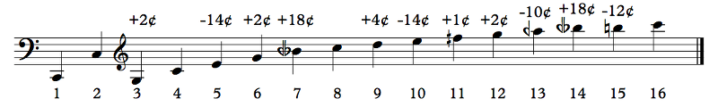Example 7.40
What's going on with these weird symbols?
That's a 3/2 flat on the B and a 1/2-sharp on the F. Bdb is the note halfway between A and Bb, and Ft is the note halfway between F and F#. In the text I'm using a d for the half-flat symbol and a t for the half-sharp symbol.
Why Bdb instead of At, then?
Because we tend to think of that note as a low Bb, not a sharp A.
In any case, if we look at the harmonics labeled 6, 7, 8, 9, 10, and 12, we have basically the major pentatonic (in plagal position, which is perfect for Amazing Grace and Arirang), except that the 7th harmonic is too high. But it's still pretty close! You can play with the overtone scale on the Offtonic Scale Keyboard. Try to play some of the examples using those harmonics. What I notice right away is how low the third is, the 10th harmonic. The 7th is very off but we already knew that. If you remember back in Chapter 5 when we were looking at intervals, the 10th harmonic makes a 5/4 pure interval with the 8th (because 10/8 = 5/4), which is 14 cents or so lower than a major third, and the difference is quite noticeable. The 7th harmonic makes a 7/4 pure interval with the 4th (again, because it's 7/4), which was also one of the pure intervals we looked at, narrower than the minor seventh. Using these pure intervals, you can make something pretty similar to the major pentatonic! In fact, other than the not-so-used 7th harmonic, the cultures that independently created the pentatonic scale did not do so with equal-tempered notes but used pure intervals of some sort, or at least very impure, estimated intervals. On the opposite extreme, we have the 5-tone equal tempered scale. This scale doesn't even need to be written down, so I won't write it down. Instead, check out 5-TET in the Offtonic Scale Keyboard and try to play the same songs. It's the octave divided into 5 equal intervals instead of the 12 of the chromatic scale.
WOW that is weird. It actually sounds like the "dorian" pentatonic rather than the major pentatonic, though.
Oh, you must be playing the wrong mode, then. Try using a different note as your tonic.
...Ha ha ha ha. Very funny. It's exactly the same.
Yep. Exactly the same. Your ears play tricks on you when it comes to the 5-TET scale. Actually, the 5-TET scale demonstrates an interesting principle: the pentatonic scale is actually a pretty damn even division of the octave into 5. It's not exact, obviously, since there are 12 notes in the 12-TET chromatic scale we all know and possibly love and you can't evenly divide 12 by 5, but the resulting division is actually pretty good. Try this. In the Offtonic Scale Keyboard, select 5-TET, and then select some of the pentatonic modes to see how the circles shift. Those circles are placed along the line in proportion to the intervals, so you can see that all six of the circles are exactly evenly spaced in 5-TET. In each of the pentatonic modes, though, you can see the circles shift a bit.
Why did you label the 5-TET notes C D E G A?
That question will have to wait until a later chapter for an answer. It's actually very interesting, so hold on tight.
Meanwhile, let's take a look at the next important pentatonic:
Minor Pentatonic
The minor pentatonic is just the (natural) minor scale without the 2 and b6. When we talked about the aeolian mode, we mentioned how a lot of music skips over the b6 anyway, making it a step closer to minor pentatonic. While you could think of the b6 as the characteristic tone of aeolian, the fact is that it's not an important note, unlike the b3, which makes the scale minor, and the b7, which gives it the feel that makes it different from Common Practice minor. The minor pentatonic scale has both notes, so it has pretty much everything. Again, though, having only 5 notes makes it limited, so harmonies generally use plenty of notes outside the scale.
First example: it's not Japanese, but... it pretends to be? I don't know. It's Swedish group's SMiLE.dk's hit that was featured in the original Dance Dance Revolution, Butterfly. The intro and verses use the 2 and b6 so they're not pentatonic, but the chorus totally is:
Example 7.41
I know this song! I thought it was Japanese. All this butterfly stuff, going across Japan to find a samurai... You're telling me it's Swedish?
Oh, it's not me telling you. It's Wikipedia.
Cultural appropriation much?
It was a huge hit in Japan, so... I dunno?
Anyway, I'm pretty sure they went with the pentatonic sound specifically to evoke what the world imagines Japanese music to sound like (and to be fair, they do use pentatonic scales quite a bit). We can also see, in these four measures (they do repeat), some very obvious parallelism: the first two bars have the exact same rhythm as the second two. Even the contour is basically the same, except that the last two notes of 1 go up and the last two notes of 3 go down; starting on that last note, measures 2 and 4 are identical. In fact, let's look at the first three beats of 1 and 3. In 1, we have G# B C#, and in the second, we have F# G# B. In both cases, we're just going up the C# minor pentatonic scale. The intervals aren't the same; G# to B is an m3 while F# to G# is an M2. But in terms of scale distance, they're both one scale step. I'm not sure calling it diatonic transposition makes a lot of sense for a non-diatonic scale, but that's essentially what it is.
You can also hear an interesting feature, which is that the m3 gaps are treated essentially as scale steps. In measure 2, for example, we have C# E C# B G#. Jumping up to that E is a bit awkward; jumping up to a D# would not have been, since it's a neighbor tone of the C#. The E, an m3 away, is treated here as a neighbor tone. When the same figure happens at measure 4, the G# is a legit neighbor tone of the F# and it doesn't have that same feel, but usually we resolve to the tonic by step when everything around us is a scale, and here we get there by leap, E down to C#. So that feels different too. In major pentatonic, we do have a 2, so things sound quite different. But in minor pentatonic, we have a 4, which allows measure 3 to clearly have a different harmonic root from the previous two bars. Major pentatonic is more harmonically static.
Minor pentatonic also shows up a lot in pop music. Here's the first verse and chorus from Jamiroquai's Virtual Insanity. You may want to not pay attention to the lyrics.
Example 7.42
That's hard to read! The rhythms and the key... WHY?
The key is hopefully not too bad. I mean, if you get used to playing in D# minor, it's fine. Why did Jamiroquai pick this key? No idea. Maybe it fit the singer's voice better than others. As for the rhythms, yeah, it is hard to read, and that's because this is jazzy music. It's all syncopated, and it's not actually hard to sing, just to notate. The basic concept of this style of syncopation is that everything happens a little bit before the beat. Sometimes the note on beat 1 is a bit longer for emphasis, which makes the note on beat 2 later, and the note on beat 3 has to be earlier to prevent the rhythm from getting too square. If you look carefully at this rhythm, you'll hopefully learn how this genre of jazzy popular music does things. The rhythm does straighten around bar 27, probably to ratchet up the tension a bit before the chorus.
Speaking of which, the chorus is not in minor pentatonic. I hope that's obvious. It's just in regular minor, hence the Cx's and the E#'s. But the verse is, almost entirely; there are some points where the singer goes a little bit off-pitch as a stylistic embellishment, like at 23: he bends that note up a little bit at the start of the note. Other than that, the melody is strictly pentatonic, and the harmony is completely... not. This is one of the big features of the pentatonic scale. Because none of its notes really clashes with the others, it's easy for a pentatonic scale to sound good when played over a large range of chords. In this case, the chords in the verse are D#m7 - G#7 - C#9 - F#M7 - B#ø7 - BM7 - A#+ - D#m7 (you can look up the chords on a variety of websites), the whole thing repeated a few times with some variations. But you can see that there are 7 different chords here (8 chords, but D#m7 is on both ends), and the D# minor pentatonic sounds fine over all of these.
Let's look at the structure of the verse. We can split it up into mostly four-bar sections, with one being six bars. There are seven sections total. We see that the structure in the verse isn't completely symmetrical, while the chorus has four obvious phrases of four bars each. I'm going to be including pickups in the measure that follows them. So, we have the first phrase, starting on 1-4 and ending on 5-8. Then we have a second phrase, starting on 9-12 and ending on 13-16. It has the same chords as the first phrase and is very similar, structurally. If we disregard the specific melody in the first section of each of these two phrases, we can see that the contours are somewhat similar but only loosely, starting high on the A# and going down; what really identifies them together is the chord structure. This loose similarity is a big clue that the song may have been composed in a kind of improvisatory fashion (especially since the lyrics are just a naturist rant, but anyway). On the other hand, the second section of each of these phrases has the same first two bars: C# D# F#. There's a little preview of that in measures 11-12, interestingly enough. But then we get a different thing, a little bridge section, going on at 17. Three two-bar groupings, 17-18, 19-20, and 20-21, all have the same pattern but a different ending. The first one ends very low but on a rhythmically weak position, so it needs a response. The second is that response, but its ending isn't definitive enough, ending on the dominant. The third one ends it more definitively, but, again, on a weak beat. After this we get another phrase similar to the first two; 23-26 is very similar to 9-12. But 27-30 is the lead-in to the chorus, with repeated straight quarter notes turning up the tension. If I were to label these four phrases of the verse, I'd label them as follows: Verse A - Verse B - Verse A - Verse B - Bridge - Verse A - Ending.
So why do I need to know this?
If you're writing songs, you may be able to do this kind of thing instinctively. I'm sure that most great songwriters have a sense for this without it having to be taught. But what if you're maybe not the greatest songwriter in the world yet, and you're wondering why your songs always sound so boring and so similar? You have to analyze. You have to look at other music, ideally a wide variety of it, and figure out what they're doing that you could be doing. Even if you decide that it's a stupid idea, you should at least understand what you're rejecting. Study the form of these songs enough, and you'll be able to better critique your own writing.
There's another interesting thing about this structure: the second verse has a similar though not identical melody, but it does have exactly the same structure. And the topic of the lyrics in the structure is also similar! All of the Verse sections — Verse A and Verse B — are complaints about modern man's abuse of technology or something (I know, I know). The Bridge sections are complaints about how there's nothing that can be done about it. The Ending sections are warnings. The content also fits the mood of the sections. This tight integration of words and music is extremely effective, though I'm not sure if the audience was really receptive to Jamiroquai's... "message", if we want to be charitable. It's an unfocused rant with nothing concrete or factual. But at least it's nicely broken down and fitted to the music, so that's something?
Moving on, the minor pentatonic scale also has one very special alteration that gives it extremely wide use in modern pop music:
The Blues Scale
The blues scale is just the minor pentatonic scale with a passing tone added between the 4 and the 5. Looks like this:
Example 7.43
That passing tone could be a #4 or a b5 depending on function, but it can also be used in other ways. In blues, and jazz and rock and everything that inherits from blues, which includes most modern popular music, the notes on this scale aren't right. But they are. See, they clash with the chords, and that's OK. I'm going to tell you to listen to basically any blues tune, but you can start with this one I wrote that I'll copy from the previous chapter, Example 6.37 (but sing the melody before listening):

Example 6.37 (again)
The b5 is the Ab. In measure 11, we have a G# leading up to the A, then the Ab as a passing tone between the A and the G. But that's not what it's doing at measures 4 and 8, right? What it's doing at 4 and 8 is clashing with the A in the piano! Same with the F right at the start, clashing with the F# in the piano, and same with the C at 9, clasing with the C# in the piano. These notes are essentially bent down from where they "ought" to be.
Wii U Wii U Wii U! Rule Zero police!
Chill; it was in quotes. I don't mean that it actually ought to be that way. But this bending down is what makes these notes what they are: blue notes. They're often explained away as being Westernizations of the 7th harmonic in different situations, as we saw in the funked-up major pentatonic a couple sections ago. I don't know if that's actually where they come from. What I know is that they're essential to the sound of the blues. The b3 and b7 can be bent down; the b5 doesn't really need to be bent anywhere because it's still going to clash.
The best thing I can do for you is to tell you to improvise on this scale, on the Offtonic Scale Keyboard or any other instrument you have on hand. Hell, even just playing the scale is something. I'm going to try to describe this to you, but what I want you to do is to play the scale up and down in swung eighth notes, so doo, da doo, da doo, da doo, etc. Now, just keep playing around on it. It all sounds great, even unaccompanied!
You can of course play it over minor chords too, not just the dominant 7th chords of the traditional blues. After all, the blues scale is just a minor pentatonic with an extra note. You can use that to sound a bit mournful, for example, if that's the feel you're going for with your jazz or blues. Here's a great example, B. B. King's The Thrill Has Gone. He still bends his notes on the guitar.
Actually, you can really listen to almost anything by B. B. King and it will probably contain a great example of the blues scale in its natural habitat. I'll let you do that. You can also listen to Horace Silver's African Queen and Cape Verdean Blues, both of which mix the blues scale with other material.
By the way, there's also something called a major blues scale, which is Mode II of the regular (minor) blues. It's just a major pentatonic with an extra note between the 2 and 3, so it's 1 2 #2/b3 3 5 6. It's not really worth talking about.
Other Pentatonic Modes
You can play with the remaining modes of the pentatonic scale on the Offtonic Scale Keyboard. I find that the "phrygian" and "mixolydian" pentatonic scales are pretty useless. The "phrygian" one goes 1 b3 4 b6 b7, and it's missing a 5. That means that you can't really establish the tonic very well, like with the locrian scale, and I simply don't know of any music that uses it. The b6 is an unstable tone that tends down to the 5, but there's no 5 in the scale. It's just weird.
The "mixolydian" pentatonic goes 1 2 4 5 6, and it has a different stability problem. I don't think you need the third, but it helps, so what ends up happening immediately here is that the 4 becomes the tonic. The 6 strengthens the 4, and the 1 strengthens the 4 too. I also don't know of any music that uses this scale, and I don't have a clue why anyone would, but hey, maybe it's out there somewhere.
The "dorian" pentatonic, on the other hand, is pretty great. It goes 1 2 4 5 b7, and while it doesn't have a third, I think that's OK. I don't know of any music that uses it either, but I love playing with it. See, the third is important for functional harmony, but if you don't use functional harmony, you totally don't need it. You can make great melodies with this scale. I'm going to make one right now, and you can play it in the Offtonic Scale Keyboard or sing it because I'm not giving you a recording. Ready?
Example 7.44
I'm not going to claim that this is the best melody ever written in this mode, but it's the only one I know so yeah. I guess it sounds like minor pentatonic, but with a 2 instead of a b3. Maybe I should have used the minor key signature. What I do think is that this scale is greatly weakened by harmony, and if you want to use it you may want to consider not having any chords at all. But at least the scale itself is stable enough.
That's enough for the pentatonic scale. We'll see other pentatonic scales — that is, other scales with five tones — in a bit, but the pentatonic scale is this one. Next, let's go to one family of scales that I really like for reasons that should become obvious:
The Harmonic Minor Modes
By now you should be familiar with the harmonic minor aspect of the minor mode: to accomodate the major V chord in minor, we say that the principal harmonies of minor come from the "harmonic minor scale", but it's not really a scale; it's just a name for using the V chord (and associated chords like the viio) in minor. Well, what if we do think of it as a scale? Common Practice music does not do this, but plenty of people do. The "problem" is that there's that awkward augmented second between the b6 and the 7, but I put "problem" in quotes because this is not a problem at all in a melody. It's bad for smooth voice leading, but melodies don't need smooth voice leading. The modes of the harmonic minor scale, then, feature this augmented second. Sometimes the interval can be used to great effect, but sometimes it makes the scale kind of unusable. So here are the modes:

Example 7.45
Why do only some of them have names?
Because I don't know of any names people have bothered giving these scales. Just because you can string 7 notes together on paper doesn't mean that they're worth playing (at least in the Western system of extended tonality), and in this case, only some of the named ones are worth playing. Maybe also Lydian #2. You could disagree with me and write something great in one of the other modes. Go ahead. Seriously, go ahead; you'll actually be advancing music in general.
The reasons why many of these modes are not worth playing are fairly obvious; hear for yourself in the Offtonic Scale Keyboard. If we look at harmonic minor, the augmented second doesn't actually break anything, and in fact, the b6 is useful in the iv chord and the 7 is useful in the V chord. Mode II is locrian anyway, so it doesn't have a 5; we've already talked about the difficulties of locrian. Actually, Dust to Dust (Example 7.34) doesn't use the 6th degree at all, so you could even say that it's in locrian #6, because it's not not in locrian #6, right? Interestingly enough, this mode is used in Arabic music, where it's called maqam Tarz Nawin, but we'll talk about Arabic music later on. Mode III, Ionian Augmented ("augmented" generally just means #5) doesn't have a 5 either, and it needs one. Mode VI is actually usable, but you're going to end up really wanting that 2 in chords (unless you take an atonal approach; nothing wrong with that), so you won't get a particularly special sound out of the 1 - #2 augmented second. Mode VII is built off of the altered tone; if you followed the pattern, it would be mixolydian #1, but that obviously doesn't make sense, so instead we have ultralocrian, or superlocrian b7. We haven't run into superlocrian with that name yet; it's just locrian b4, also known as the altered scale that we saw in the jazz section of the previous chapter. Well, here it gets a completely pointless alteration, a lowered 7th degree. Superlocrian already has a b7, so this scale has a bb7. I think it actually has possibilities if you don't try to force harmonies on it, but the augmented second between the bb7 and the 1 is pretty much not going to be very nice.
So that leaves harmonic minor, Ukranian dorian, and phrygian dominant. And it turns out all three are used in Jewish music, some more than others. And they're lots of fun! So let's hear examples.
Harmonic Minor
You wouldn't generally make a distinction between minor and harmonic minor, except that the upper tetrachord has a different behavior in each kind of minor (minor, aeolian, harmonic). In regular minor, the 7th scale degree is variable and the 6th is altered to prevent an augmented second; in aeolian, the 7th degree is left as a b7 and there's no leading tone; in harmonic minor, the 7th is raised and the augmented second is not avoided. It's actually pretty rare for Western pop music to be in harmonic minor, which relates to a common misconception. Harmonic minor is generally considered an aspect of minor, not an independent scale on its own. Music in minor can be said to be using this aspect when there are V and viio chords, but that's a bit silly since there could also be bIII and bVII chords. We say that the harmony in minor comes from harmonic minor, but that's not really true, right? On the other hand, melodies come from melodic minor (again, not really true), another aspect of the minor mode.
But here we're talking about harmonic minor as an actual independent entity, and while it's largely interchangeable with the other minor modes, using it on its own means you do get that augmented second between the b6 and 7. It's a sound that Common Practice composers did not like, and popular musicians usually avoid it too. Jazz musicians stay far the hell away from it. The reason? It sounds very "ethnic", whatever that means. It sounds vaguely Middle Eastern or Eastern European or Romani or something like that.
We've already seen the first example in Chapter 4 (the markings are from the melodic analysis, which you can read about back in Chapter 4):

Example 4.21 (again)
The thing to pay attention to this time is the augmented second, which shows up in measures 2, 6, and 9. That's only three of them in this entire 12-measure tune, so you can see that it's just necessarily a huge deal. Generally, the upper tetrachord gets less action than the lower pentachord, so there's nothing too weird about that. Note that measures 4, 8, and 12 also have a C#, but it's not making an augmented second with a Bb, so it's just using the usual features of minor. Measure 10 has both a C# and a Bb in close proximity, but there isn't a scalar line connecting them, so you hear C# - A, a major third, and Bb - A, a minor second, but not C# - Bb, an augmented second.
Why isn't that augmented second used more often if it's so important to the characteristic sound?
Because it doesn't have to be. For newer composers, modes can be novelties; they might feel a sort of pressure, musically, to hammer the mode as much as they can. But if you view the mode as... just normal, then you can relax and write music that doesn't try too hard. Subtlety can be good!
For our next example, we have a very popular guitar piece of unknown and apparently disputed authorship, Romance (here's the complete sheet music). The melody is in the high notes; sing that and listen for the augmented second:

Example 7.46
Holy shit! That video! Is that the composer of Star Wars?
No.
As you can hopefully see, this song has an A section and a B section. The A section is in E minor, and then the B section is in E major. Each one is repeated, and then the A section plays again. This is a very common type of binary form called rounded binary, which is basically this, AABBA. The B section is usually in a closely related key to the A section. In classical music, the B section tends to be in the dominant for pieces in major and in the relative major for pieces in minor. In more modern short forms like marches and whatnot, we often see the B section in the subdominant for pieces in major and the parallel minor for pieces in minor, and that's what we have here. Of course, you're welcome to do whatever you want; I once wrote a march where the A section was in Bb and the B section in Gb, an m6 away!
The harmonic minor aspect here is only on display in one measure, measure 10. I'd say that Spanish music shares the "ethnic" roots of the people we were talking about earlier, and we'll see some examples of that; however, I don't really hear the "ethnic"-ness of this particular augmented second. Again, the effect is kept fairly subtle. While you might think of the augmented second as the characteristic interval of harmonic minor, the fact is that harmonic minor is just regular minor where this interval is still there. I'm sure Anonymous didn't set out to write his/her/its/their Romance in harmonic minor; he/she/it/they probably just wrote it in minor and kept the augmented second in because it sounded better than the alternatives.
Let's go to something far less subtle:
Phrygian Dominant
This is an eminently great scale. It's called "phrygian dominant" because it's phrygian but where the tonic seventh chord is a dominant 7th, meaning that the scale contains 1 3 5 b7. There's also lydian dominant, which is lydian b7; we'll see that one shortly. This scale is interesting in part because it sounds very different from major and minor and yet is perfectly stable and usable, with its own harmonic rules. I actually think of it as more fundamental, in a sense, than phrygian; phrygian to me is phrygian dominant b3. There's not a lot of music written in phrygian, but there is a lot of music in phrygian dominant. It also has the name freygish in Yiddish, which just means "phrygian", and in Hebrew it's called Ahavah Rabbah, the first two words of a blessing on Saturday Morning that traditionally is chanted in... not quite this scale, actually. There's a bit of an interesting thing going on; the prayer mode called Ahavah Rabbah uses the Ahavah Rabbah scale, but it also uses some stuff outside it. It's a bit confusing. It's even more confusing because lots of people these days don't actually chant the Ahavah Rabbah blessing in this scale and sing some melodies in minor instead. So let's see if I can find a better use!
The following is Rabbi Shlomo Carlebach's melody for the traditional poem Adir Hu. Try to sing it before listening to the video, but then do listen to the video, especially the beginning before the melody comes in!
Example 7.47
That's... different.
Sure is! This is the sound of phrygian dominant. Why this mode specifically? Well, it turns out that, like major and minor, it's a very stable mode, more so than phrygian itself. Major works by resolving two leading tones, 7 to 1 and 4 to 3; minor tries to copy this by raising the 7th, but 4 - b3 is less satisfying than 4 - 3. Phrygian has another leading tone, b2 that resolves to 1, but it also lacks the 4 - 3. Phrygian dominant, on the other hand, has both the 4 - 3 and b2 - 1, and as a result, cadences in this mode are quite satisfying. We'll talk about these later, but a cadence with these two leading tones resolving is called a phrygian cadence, after the original medieval use of the phrygian mode. In Common Practice music, which uses only major and minor, this cadence is actually a phrygian half-cadence, going from iv6 to V. Again, we'll see this in later chapters. In phrygian dominant, though, we can use bII - I or bvii - I or even vø7 - I. We'll talk about harmony in phrygian dominant in later chapters as well.
What's up with the chanting at the beginning?
That's all improvised! I think. Carlebach is no longer with us (zichrono livrachah -- may his memory be a blessing, also abbreviated z"l) so we can't ask, but improvised melodies like that are a genre in Jewish music. The actual melody is the one I excerpted; the improvised chanting at the beginning and the end of the recording is just because Carlebach wanted something else to fill out the recording. When people sing this melody, and they do, they don't sing that bit.
So why did you ask me to pay attention to it?
I think it gives a good picture of the feel of the mode, especially the harmonic patterns often used. It's much less formal than a lot of cantors use for regular prayers during regular services, but it kind of gives a similar feel, especially when he goes low to the b7 before resolving back on the 1.
There are a couple of things I want to point out about this tune and this mode. First, note the key signature. What key are we in? Five flats is either Db major or Bb minor, and while the answer doesn't show up until a few bars in, we can see that right from the first note we have something not in the key signature! The complete scale is found between measures 3 and 4, going down: Bb Cb D Eb F Gb Ab. You know Bb is the tonic because the main notes here are D and F, but with the Gb emphasizing the F, the D doesn't feel like it can be the tonic, and yet the F going to Eb then D into measure 2 feels like a kind of melodic resolution to the D. This might be D minor, except that the Gb kind of throws that off. When we resolve to Bb at measure 4, that feels quite safely like home. (Or we could have listened to the improvisation earlier that made the tonic quite clear!)
Phrygian dominant has a major tonic triad. Shouldn't we think of the key as Bb major, then, instead of minor?
We could. I personally think minor fits the mode better, but the truth is that phrygian dominant is neither major nor minor (unlike, say, dorian, which is clearly minor, and mixolydian, which is clearly major). Similar to phrygian dominant is mixolydian b6, which goes 1 2 3 4 5 b6 b7, and I'd say that is a major-type scale, but phrygian dominant, 1 b2 3 4 5 b6 b7, is not. You can disagree with me on this. I think the 1 2 3 trichord is characteristic of major and the 5 b6 b7 1 tetrachord is characteristic of minor, and the lower one is what defines the scale; in phrygian dominant, the 1 b2 3 trichord isn't characteristic of either, so the upper tetrachord wins. Mixolydian b6 has the 1 2 3 trichord and therefore it's major. Again, that's just how I feel about these scales. If you have a better way of thinking about it, then you should use it!
In the recording, Carlebach sings something like "adir huwuwu" in measure 1. What's up with that? Also, you have "karov" and "El" where he says "karoyv" and "kel". Why?
Notice how in measure 1, there are two F's slurred, not tied, together? Melisma is when one syllable, like "hu" here, is sung for more than one note. In Chasidic music, melismatic syllables are often sung with added consonants, so you'll hear "huwuwu" for "hu", or "hiyiyi" for "hi" (that's "hi" pronounced like the English "he", not the English "hi"). Carlebach borrowed this convention from Chasidic music despite not being a Chasid himself. Orthodox Jewish music these days is actually strongly influenced by Chasidim, so it fits the theme. As for "karoyv", well, you see, different people pronounce Hebrew sounds differently. One of the more traditional ways of pronouncing the "o" vowel in Ashkenazic (Eastern European) Judaism is "oy" instead of just "o". I learned modern Hebrew in school, so I say "karov", but various commmunities of Ashkenazim will say "karoyv". I prefer to transliterate the words as I say them, not as Carlebach says them. With "kel", the situation is a bit different. Orthodox Jews don't pronounce certain names of God outside of actual prayer, one of which is "El"; they'll say "kel" instead. The theology is way beyond our scope, so never mind exactly why. I don't hold to that myself. You can pronounce it however you want.
I'm kind of talking a lot about Judaism here, but it's because I think it's important to see how music is shaped by cultural forces. Every culture has its own ways of approaching music. If you're a singer in a classical choir, for example, you'll almost certainly be called upon to sing a Mass in Latin at some point (I've sung a few, including one by Mozart and one by Byrd), or maybe some Italian opera, and part of the time is going to have to be spent on just the words themselves, how to pronounce them, how to properly emphasize them within the piece, stuff like that. Understanding the cultural conventions behind why those words are arranged the way they are gives you a fuller picture.
To that effect, I should point out what Carlebach is doing here, because it's very different from our next example. Carlebach's schtick is to take just one or two lines from something and make a simple melody out of them. It's easy to sing along to them, because if you participate in Judaism enough, the lines are already familiar to you, and the melody just repeats. The text of Adir Hu actually contains an acrostic of the entire alef-bet: Adir hu, bachur hu, gadol hu, dagul hu, hadur hu, vatik hu, etc. The traditional melody for Adir Hu, an old German melody probably about a thousand years old, has room for all of these, so you can properly sing the poem. So you might sing this: "Adir hu, adir hu, yivneh veito...", then "Bachur hu, gadol hu, dagul hu, hadur hu, yivneh veito...", and so on. You can't really do that with Carlebach's tune. To sing Carlebach's tune, you don't need to know a lot, just the three lines of the song. You don't need to carry a prayerbook around, especially if you grew up singing this song since you already know the chorus but probably don't remember the entire acrostic.
In contrast, let's look at an actual Chasidic tune. This is the Chabad melody for Azamer Bishvachin (performed here by Nitsan-Khen Razel), a 20-verse piyut (poem) in Aramaic full of obscure Kabbalistic references that's sung on Friday nights in some communities, presumably while waiting for the food to get cold because that's what's going to happen.
Example 7.48
While Carlebach liked to spend a long time singing just two lines, sometimes you need to spend a short time singing twenty, and that's this song. I honestly don't know how Razel remembered all the words, to be honest. There's a big projector screen behind him with the words; I'm assuming there was another one in front of him too, because there are a lot of them!
Putting aside all those words, this melody does a few very interesting things. First, if you listen to the video, you'll notice that he doesn't do exactly what I wrote. He takes breaks, does the ending more slowly, stuff like that. That's because this is an existing melody used by Chabad chasidim the world over (and they are the world over), and Razel was just putting his own spin on it.
Take a look at measures 4 and 8. We're in E phrygian dominant (which you should be able to tell by listening; never mind the lying key signature), but here's a C#. Chromaticism? Actually... yeah, kinda, but what this is really doing is tonicizing the D, the b7. This was a common device in traditional prayer chants in this mode, often at the beginning of a section, and if you look at the recitatives of famous cantors, you can see it in use. Nowadays it's quite rare (I looked and couldn't find an example), but it shows up in this melody! The b7 below the tonic is often a resting point for the melody before moving on to the tonic, and in some descriptions of the Ahavah Rabbah mode, the scale isn't just phrygian dominant but also extends down and up, like this:

Example 7.49
This scale doesn't repeat at the octave! But the fact is that this scale is kind of a general suggestion and a description of what cantors (used to) actually do. It was (and still is) common to add embellishments to recitatives and chants in the Ahavah Rabbah mode that were not part of the phrygian dominant scale, and some of those embellishments made it into this description that's somewhat common in literature but not so much in real life.
Back to Azamer Bishvachin, this tune does another very unusual thing, in measures 9, 11, 13, and 15. It goes to the b3! THe b3 is not in the scale, but here it's used and even emphasized, with the 2 — also not in the scale — as a helper tone. Even the harmony is a bit confusing there. That's why I like this example. It's not typical; it shows some of what you can do by relaxing the constraints of the scale. As I mentioned in the previous paragraph, it's common to add embellishments to phrygian dominant that aren't in the scale — most commonly, a short modulation to the 4, either minor, major, or Ukranian dorian (which we'll talk about shortly) — but modulating like this to the b3 is not usually done. How does this happen? The answer lies in the ending of the previous phrase, measures 4 and 8. These tonicize the b7, and the most natural thing in the world is to go up a fourth to a new key, so... that's what the melody does! From the b7, it goes up to the b3, even though the P4 above the b7 isn't actually in the scale. The video's description says that this melody is by a Rabbi Hillel of Paritch. I've never heard of him, so I have no idea what he was thinking here. Maybe he just wanted to do something a bit exciting. I think it worked.
Sometimes, the mode is not clear. A major mode and its relative minor often have this kind of relationship, where it's not entirely clear if the music is in one mode or the other. This is actually very common in pop music with vi - IV - I - V chord loops, also known as i - bVI - bIII - bVII. Which is it? In the case of phrygian dominant, the mode can be confused with its relative minor as well, a fourth up. You should try singing or playing this one (there are plenty of videos on YouTube as well), A La Una Yo Naci:
Example 7.50
We actually saw the second four bars of this, as a piano arrangement, back in Example 6.25.
So we did, but the key signature is different and it's the same notes. Why?
Because it's actually not clear what the key is. Play the first four bars: we're obviously in F minor. Now play the second four bars: we're obviously in C phrygian dominant. This key confusion is actually somewhat common in Jewish and Andalusian music. Israel Goldfarb's Shalom Aleichem does this (the opening is weird; the tune starts at about 0:45), as does the very famous traditional song Havah Nagilah (this one's also weird and the Hebrew is bad, but that's YouTube for you). Actually, speaking of Spain, Spanish music often uses a variant of phrygian dominant:
The Spanish Scale
Phrygian dominant is the fifth mode of the harmonic minor scale. Well, the Spanish scale is the fifth mode of the melodic minor scale... in a sense. In another sense, it's actually phrygian dominant. Let's take a look (you can also play this scale in the Offtonic Scale Keyboard):
Example 7.51
The Spanish scale has a variant third degree (and sometimes second, but mostly just third). Melodic minor has a different form depending on whether you're ascending or descending, though by now you hopefully realize that it's not quite so simple. The "default" minor has b6 and b7, but we raise those notes to 6 and 7 in the ascending version; we have 5 6 7 1 going up and 1 b7 b6 5 going down. Similarly, the Spanish scale goes 1 2 3 4 going up and 4 b3 b2 1 going down, but the "default" is phrygian dominant, with the b2 and 3. Of course, it's not quite so simple. When the harmony is a I chord, the 3 is used, with the 2 used if necessary to prevent augmented seconds (much like the 6 in minor). At other times, though, like in bIII or bII chords, the b3 is used, in part to prevent augmented seconds with the b2, but also because the b3 is an important part of the sound. This is a realization of the stereotypical Andalusian cadence, which goes iv - bIII - bII - I:
Example 7.52
This can be analyzed either in E Spanish or in A minor. I used the key signature for A minor because I think that's actually more common in this type of music, but I don't know, maybe not. You can see, though, how the conventions are followed. E Spanish has a "default" G#, which you can see in the E chord, and a variant G natural, which you can see in the G chord.
What's the deal with these inversions? And the bIIGer+6?
There are three voices here, right? The upper voice is actually an arpeggio playing three notes, so you can actually think of them as three separate voices, for a total of five. In the first measure, then, the fifth voice has a low A, fourth voice has a middle A, third has an E, second has an A, first has a C. Well, I originally had just the top four voices, but I decided I wanted more power so I added the fifth voice at the bottom. Then I decided that I wanted it to have a little melody, and the result is what you see here.
As for the bIIGer+6, which is not actually an F7 despite the chord symbol, the small problem is that, classically, augmented 6th chords happen only on the b6, but they can totally happen on the b2 as well. There's just no standard Roman numeral analysis symbol for that eventuality. Hopefully the way I wrote it is clear. On the other hand, pop chord symbols don't recognize aug6 chords at all, representing them enharmonically as dominant 7ths, hence the F7. However, that chord is really just the Dm chord of the previous beat with a chromatic passing tone, so maybe it doesn't even need to be a separate chord! You can analyze it that way if you want. The bvii chord, actually, isn't technically part of the Andalusian cadence, but it's a common enough variation of the bII chord that I figured I might as well include it. When we talk about phrygian dominant harmony we'll discuss this in more detail.
Let's look at an example from real music, shall we? This is La Virgen de la Macarena, a famous Spanish song of uncertain authorship that features a strong bass intro and a lovely melody, often recorded by trumpet players such as Arturo Sandoval. I've attempted to roughly transcribe some of the instruments in the intro below; sing through the melody in the bass:

Example 7.53
This... is not the Macarena.
No, it is not. It's far cooler.
This piece is in G Spanish, and I've used the upbow symbol (the downward wedge) to highlight the 3's (B naturals) and the downbow symbol (the square-ish thingy) to highlight the b3's (Bb's). The 2 is really only used as a passing tone when absolutely necessary, so we don't even need to consider it here. If you just look at the bass melody in the first four bars, you don't see any 3's, but you do have a complete phrygian scale descending, which might suggest to you that this melody is in phrygian. O stone, be not so! While the melody is all in phrygian (except the rather ornamental B natural at the pickup to 5), the harmony is decidedly in the Spanish scale. The characteristic feel of this scale is, in fact, the phrygian melody with its b3 contrasting with the major I chord and its 3. Phrygian dominant doesn't have that. You can consider the 3 to be the "default" in the Spanish scale, but the b3 is essentially the most characteristic tone!
Let's look at another example, Pascual Marquina Narro's extremely famous España Cañí (here's a nice rendition). The intro is incredibly well-known; you'll probably recognize it when you hear it. I want to focus on the melody in the first strain, though, which you should try to sing — try, because it's not so easy:

Example 7.54
España Cañí is a pasodoble, which one could loosely translate as two-step, but it really refers to a bullfight march. America has circus marches; Spain has bullfight marches. Same kind of deal, and it's a very similar musical structure as well. When you listen to the entire piece, you can easily tell where the trio begins, the kind of lighter bit of the music, which is a fourth up in major, has a nice baritone melody while the upper woodwinds do their thing (called an obbligato), just like any standard march. Just about the only difference between España Cañí and your average Sousa march is the mode, as well as some of the rhythmic gestures reminiscent of flamenco music (specifically all the triplets), the declamatory trumpets with the bravado one would traditionally associate with bullfighting, etc.
So let's take a look at this little melody. In the first four bars, we have a very straight Spanish scale on D. Note the F# in the pickups to 3 and the F naturals in the descending triplet run. The contour here is also very simple: start going up to the higher octave, down to the dominant (anyone else get a pentatonic feel in that pickup to 2?), then from the dominant down to the tonic. The second half changes the formula a bit. You can tell right away that 5 is different from 1 (if you listen to the piece) because the harmony is very different, and indeed, instead of going down to the A, we only go to the Bb. But then... Ab? That's not in the scale! We've actually done a little modulation to G here, and the Bb - Ab - G is a bIII - bII - I in G, most of an Andalusian cadence. Except that the G chord is actually minor, not major; it's i, not I. So we're not actually in G Spanish either; this is G minor, with the E and F# being part of the melodic minor aspect! This takes us four bars, and with the end of that fourth bar, we quickly come back down to the D, which is also the first note of the next section. The second half of this melody, then, is a kind of reharmonized and reworked version of the first half.
Interesting bit: the second strain, which happens after the reprise of the intro following the excerpt, is actually up a fourth to G Spanish, which ratchets up the excitement. The trio happens later on after a very declamatory trumpet figure, and it modulates up a fourth too, this time to C major. I think of the Spanish scale as being kind of bubbling with excitement compared to the more relaxed major and perhaps darker minor. Spanish music uses all three in contrasting ways, which makes for a richer experience than simply going between major and minor like the Western canon. Phrygian dominant, and the Spanish scale especially as a variant of it, should (in my opinion) be considered a fundamental mode like major and minor, since it's open to functional harmony of a different kind from the harmony in major and minor. We will talk more about that later.
For now, though, we have one last useful mode of the harmonic minor scale:
Ukranian Dorian
I don't know why this scale, dorian #4, is called Ukranian, but one thing that is clear is that Jewish music used the same scales that the people around them used, and when lots of Jews lived in Eastern Europe, including Ukraine, this was one of the scales they used. This scale is fun but kind of limited harmonically because it doesn't have a 4. In liturgical music, where it's called the Mi Sheberach mode (after a prayer on Saturday morning that uses it briefly), use of the mode is limited mostly to short modulations, not entire chants or melodies. I only know one chant that's actually in this mode, and it's only for a few isolated lines during the High Holidays.
On the other hand, it happens fairly often in klezmer music, Yiddish theater, etc. Here's Hudl Mitn Shtrudl, from the Milken Archive of Jewish recordings (the composer is apparently unclear but appears to be Adolf King), and the video has the translation so that you don't have to wonder what the song is about: dude's — sorry, Dudl's — sexy wife Hudl makes a delicious strudel that brings all the boys to the yard. A deep analysis of the lyrics will reveal that Hudl's delicious strudel is actually a metaphor for strudel. There are layers of meaning, representing the layers of filling in the strudel. It's a deep pastry. Anyway, here's a taste. Of the song, I mean, not the strudel. (Hungry yet?)
Example 7.55
The transcription doesn't match the recording, does it?
Feh. I had transcribed a different recording first because I hadn't seen the Milken Archive recording that I was originally looking for. I actually like this version of the melody, but I like the Milken version of the performance (and it has the translation so that you can understand how great this strudel is even if you don't speak Yiddish). Make of that what you will. Both of them have kickass clarinet solos, so there's that!
Anyway, the melody! Oy, the melody. It outlines the Mi Sheberach (Ukranian dorian) scale very well. Like other Jewish and Eastern European music using scales with augmented seconds, this piece does not shy away from that interval like music that uses the Spanish scale. In this mode, the 5 is somewhat tonicized due to the #4 and 6. See, in minor, there's a b6, so since there's a 6 here instead, it suggests a minor scale on the 5. The problem is that there's really nowhere else for it to go. This entire melody uses mostly just the i chord, Fm, because the scale is just not stable enough to easily support a more varied harmony without collapsing into minor on the 5 or phrygian dominant on the 2. The verses have more harmony, but they're in major, not Mi Sheberach. That said, you can still use v and II chords and even V chords (altering the 7th of the scale).
What you kind of can't do is use the b6. I mean, you obviously can do whatever you want, but if you have the b6, you now have #4 5 b6, and that's two half steps in a row (making the scale cohemitonic).
What's the problem with that? Isn't this the entire rationale behind the augmented 6th chord?
You know, I just don't think it sounds very good. Diminished thirds are dissonant intervals, which is why the augmented 6th chord is used in the first place; it has a lot of pull to the dominant because the b6 and #4 both tend towards the 5. But you don't really want the 5 to be a deep hole in the ground you can't get out of, right? Or maybe you do, because the Hungarian minor scale does that. We'll touch on scales like that a bit later. Generally, though, too many half steps in a row confuses the tonality of the scale. If you hear #4 to b6, do you hear it as a diminished third (which it is) or as a whole step? We don't usually have this problem harmonically, hence the augmented 6th chord, but melodically we do. So I think it's best to generally use a 6 when you use a #4. Calling this scale Ukranian dorian is apt because of that 6; I'd say that the characteristic tones are the 6, #4, and b3, in that order.
The other modes of the harmonic minor scale are pretty much unusable. You can use them if you want; good luck to you if you choose to do that! So we'll move on to a set of scales we've already talked about as chords:
The Melodic Minor Modes
We've talked about melodic minor as an aspect of the minor mode — melodic minor simply refers to raising the 7th when the melody is harmonized by a V or equivalent chord and then raising the 6th if necessary to prevent augmented seconds. So what's going on here? Well, just like how we decided to consider harmonic minor its own independent scale in the previous section, here we're considering the ascending form of melodic minor (1 2 b3 4 5 6 7) as its own independent scale. You can play with it and its modes in the Offtonic Scale Keyboard:
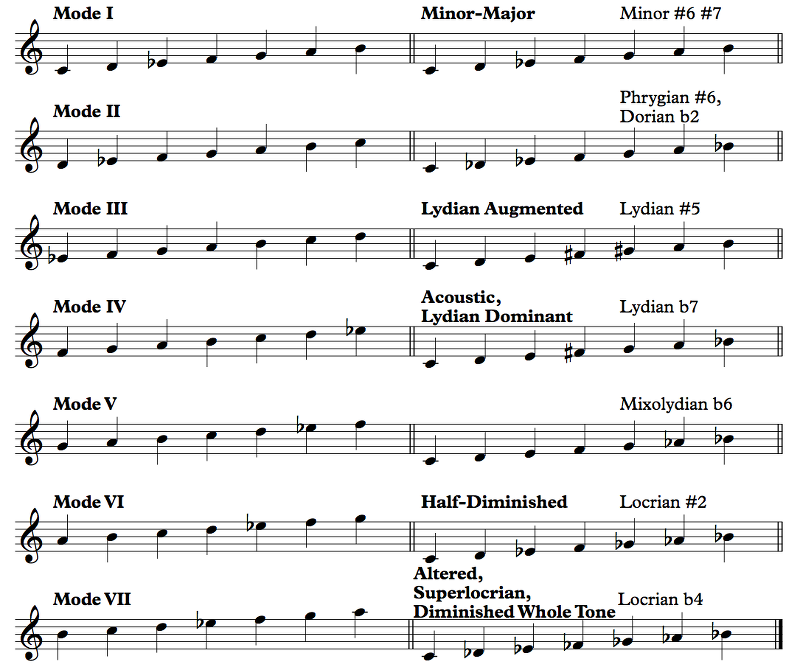Example 7.56
Why are some of the names missing?
Eh, they just don't have standard names. And some have multiple names. That's capitalism for you.
Actually, though, these scales are just not used very often. When we talked about them in the last chapter as jazz chords, we weren't talking about writing independent melodies using them, even though that's basically what jazz musicians do when they improvise in these scales over the chords they represent. What's the difference? Those improvised melodies are just kind of borrowing the feel of the chord. You can try them out for yourself and see what you get. So I'm not going to bother going deeply into each one, simply because there's just not much of a point, but we'll talk about some of them.
One sort of nifty thing to notice is that, like the diatonic scale but unlike harmonic minor, the melodic minor collection of pitch classes is symmetric with respect to mirror inversion: if you play it upside down, you'll get the same scale. The halfway points of the C melodic minor scale are the G and C#, so mixolydian b6 scale is actually symmetric; inverting the major-minor scale yields phrygian #6, inverting lydian augmented yields the altered scale; inverting the acoustic scale yields the half-diminished scale.
Going down the list, there's really not much to say about any of these scales. One important nomenclature point: augmented just refers to a scale containing an augmented triad, so the lydian augmented scale is the lydian scale but adjusted to contain a 1, 3, and #5. Similarly, we've discussed this already, but dominant refers to the scale containing a dominant 7th chord, which in the case of lydian dominant involves using a b7 instead of a 7.
Minor-major is kind of useful in the kinds of situations that would take a mM7 chord, which in jazz is actually fairly frequently, but we talked about this last chapter. It's just minor, though. I wouldn't consider it as a separate entity from minor just because we're considering its modes separately. Phrygian #6 is just phrygian with an alteration; this alteration can actually be interesting, but I don't know of anyone who's taken advantage of it. Maybe you can write some good examples in this mode. Lydian augmented is basically the whole tone scale with a different upper tetrachord; we'll talk about the whole tone scale in a bit. The half-diminished scale is just locrian with a small alteration that lightens the flavor, but the locrian flavor is quite strong, so raising the b2 doesn't really make the scale more usable, just less dark.
The altered scale is interesting as a chord, but as a scale, it actually has some interesting features. The lower pentachord, 1 b2 b3 b4 b5, can be spelled 1 b2 b3 3 #4, making it the same as part of the diminished scale (which we'll talk about shortly), and the upper tetrachord, b5 b6 b7 1, is part of the whole tone scale. So we can refer to it as the diminished whole tone scale, but if we're going to do that, we might as well simply talk about the diminished scale and the whole tone scale rather than coming up with a strange construct that mixes both. We can just use both scales. It's not a problem.
It does, however, feature something very interesting: the diminished fourth. You will pretty much never see this in jazz, but in darker classical music it pops up from time to time. For an example, look back at Carlebach's Adir Hu, Example 7.47, in the first three bars, but try to hear the D as the tonic instead of the Bb (the recording will obviously not help you there). You get that nice diminished fourth between the D and Gb. You can also find a lot of superlocrian-type stuff in Shostakovich's music; his String Quartet No. 8 opens with it, and about 1:30 in you can see some pretty clear examples, though there's a lot of chromaticism in general so you can't say that the music stays in the superlocrian scale.
Holy shit this music is dark.
That's communism for you.
Lydian dominant is an interesting one. It's also called the acoustic scale, but that's not a very accurate name. If you look at the overtone series in the Offtonic Scale Keyboard, you can kind of explore this a little bit. Based on C, overtone 6 is a G about 2 cents sharp relative to equal temperament, 7 is a Bb about 31 cents lower, 8 is a C, 9 is a D about 4 cents higher, 10 is an E about 14 cents lower, and 11 is an F# about 49 cents lower. Compared to the C acoustic scale, C D E F# G A Bb, the only note missing is the A, but we kind of accept that one as given. The problem is that the Bb and F# are way off. The equal-tempered E is about 14 cents higher than the overtone E, but you still hear them as different tunings of the same note. The Bb and F# are just too different, though. Still, the name stuck. It's the acoustic scale; that's just what it is.
But the scale is actually quite usable, if you don't mind not having a 4. The lower pentachord is the lydian pentachord, and the upper tetrachord is the same as in mixolydian. If you go back to Example 7.16, the Simpsons theme, that's pretty much in lydian dominant. The b7 gives lydian dominant a more playful sound, since the 7 with the #4 make it somewhat melancholy. If you play the notes C E F# G Bb C, you'll get the feel for the scale.
Finally, we have mixolydian b6, sometimes known as "melodic major" because it inverts the pattern of melodic minor. Melodic minor is minor with a raised 6th and 7th; melodic major is major with a lowered 6th and 7th. Except that the "melodic" in "melodic minor" refers to adapting the minor scale for melodic writing over V chords, and mixolydian b6 has nothing to do with that procedure, so I'm not going to use that name. This scale is similar to phrygian dominant except without the phrygian bit, the b2, so it's very much a major scale. It's a major scale with a b6, and that gives it a kind of adventurous sound. You hear it quite often in space movies, and it's the kind of cliché that ends up in the amplified strings at your local science museum's IMAX screenings of whatever sciency things are showing now, whether about sharks, snakes, black holes, glaciers, etc. I can guarantee you there will be strings, possibly synthesized, playing a major chord with a deep, rumbling, hideously amplified bass, while a horn section plays a b6 that resolves down to 5. Interestingly enough, I can't find any examples, so here's a silly one I wrote:

Example 7.57
This sounds like literally every space documentary.
That's the point. Two things going on: first, measures 1 and 3 use the mixolydian b6 scale we're talking about — basically just major with a b6, and the b7 prevents augmented seconds. Measure 2 uses the concept as well, just on a different tonic (measure 4 doesn't have enough material to count). The second thing is the chords. There's not much of a point to doing a Roman numeral analysis because the chords aren't tonal. All that's going on here is a major triad going to the major triad a tritone away, in this case, C to F#. For some reason, space music loves this little chord change. Since the progression is so non-functional, the chord change feels like a direct modulation — that is, a sudden key change — where the new tonic is the root of the second chord. We're in C major (well, we're using C mixolydian b6, but that's a flavor of C major), and then suddenly we're in F# major. The horn melody goes to F# chromatically, so it doesn't feel jarring, just adventurous, which is the point.
Still, do pay attention to the sound of the Ab against the C major chord, as well as the D against the F# major chord.
Why doesn't it sound like an augmented chord? C E Ab is enharmonic to C+, is it not?
Yes, but since the G is still there in the violin I and the viola (yes, I know it's alto clef, but that's life), the Ab is heard not as a kind of fundamental dissonance of the chord but just as a non-harmonic tone that needs to be resolved.
Speaking of augmented chords, that's really all I have to say about the melodic minor modes for now, so let's move on to something fairly exciting that actually deals with augmented chords:
Symmetric Scales
We talked about these as jazz chords a tiny bit in the last chapter, so let's discuss them properly now. A scale is said to be symmetric when, if you transpose the scale by some amount, you get the same notes. Almost all of the scales we've looked at so far are octave-repeating, meaning that if you transpose the scale up by an octave, you get the same notes. For example, E major is E F# G# A B C# D#. If you transpose it up an octave, you get E F# G# A B C# D#, which is the same as E F# G# A B C# D#.
Um. Duh. Am I missing something here?
No, I'm saying things that are completely obvious. Actually, they might not be so obvious, but we in Western music have the principle of octave equivalence, which says that a D is a D whatever octave it appears in, and this principle is so ingrained in our musical culture — I mean, look at how I described the note D without referring to an octave; in Boethius's earliest descriptions, the notes went from A to O and spanned two octaves — so it's completely obvious to us. The fact is that most of the scales we deal with are symmetric with respect to the octave.
And, as you pointed out, that is not very interesting. So when we talk about symmetric scales, what we're really talking about are scales that are symmetric with respect to intervals smaller than the octave as well as the octave itself.
Mathematically, these are pretty limited. If we assume N equally-spaced notes to the octave, any symmetry has to be a factor of N (I'll leave the proof as an exercise to the reader, but if you know basic algebra it should be trivial).
Basic algebra?
Yeah. The group of transpositions is a cyclic group generated by transposing the scale up a N-TET step. You should be able to fill in the details from here.
Basic abstract algebra, you mean. You're an idiot sometimes, you know? We haven't all majored in math!
Oy. Fine. Well, if you do know undergrad-level abstract algebra, you should be able to prove it. But let's make it concrete. Our Western system has 12 notes to the octave, right? So any scale that's symmetric must be the same under a transposition by 1, 2, 3, 4, or 6 semitones, since those are the factors of 12. An example would be the diminished 7th chord. Let's look at it (spelled enharmonically for our convenience):
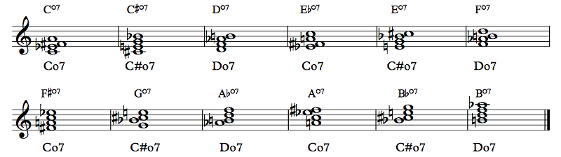Example 7.58
The above chart shows that there are only three diminished 7th chords, not counting enharmonic differences. If you transpose a Cdim7 up a minor third — three semitones — you get Ebdim7, which has the same four notes as Cdim7. We can therefore say that the diminished 7th chord is symmetric with respect to transposition by three semitones. 3 is a factor of 12, as it should be. In addition, any scale that has this symmetry will need to consist of diminished 7th chords on top of each other, because if the scale has a D, for example, it also needs to have an F, an Ab, and a B (or their enharmonic equivalents, obviously). This means that it needs to contain some multiple of 4 notes (since there are 4 = 12/3 notes in the diminished 7th chord). The multiples of 4 are 4, 8, and 12; the 12-note scale is the chromatic scale and the 4-note scale in question is the diminished 7th chord itself, so that leaves the 8-note (octatonic) scales we're going to talk about presently.
As another quick example, the augmented triad is similarly symmetric with respect to transposition by four semitones; 4 is a factor of 12, and there are 12/4 = 3 notes in the augmented triad. Any scale with this symmetry should have some multiple of 3 semitones, then: 3 (the augmented triad itself), 6, 9, or 12 (the chromatic scale).
Note that, as the interval of symmetry needs to be a factor of the number of steps, if the octave is divided into a prime number of steps (like 19, 31, 53, etc.), symmetric scales (other than the equivalent of the chromatic scale with all of the notes in the octave) are impossible. I mention these numbers in particular because 19-TET, 31-TET, and 53-TET are some of the most prominent alternative tunings (we'll discuss them eventually). On the other hand, 24-TET has all the symmetries that 12-TET has, plus an additional symmetry where you can divide the octave into 8.
Not all symmetric scales are used much in music, so let's talk about the ones that are:
The Chromatic Scale
The chromatic scale is the most boring. It's just... every note. Our usual way of spelling notes is particular to 7-note scales, so there's naturally going to be some tension regarding spelling. We've already seen this in practice in Example 4.10, but here are three ways to spell the chromatic scale, going up and going down:
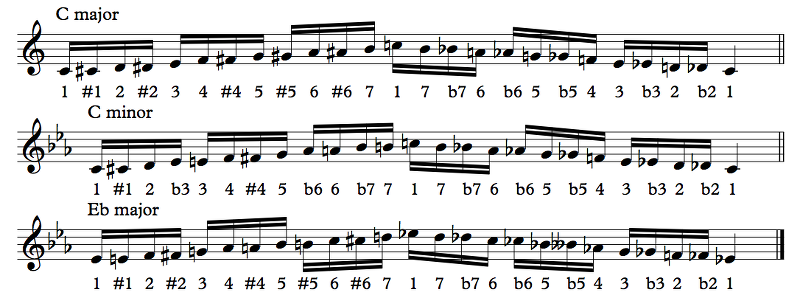Example 7.59
They're different. How do I remember which one to use?
Honestly, it doesn't matter. The idea is that each note is spelled according to its tonal tendencies, so since the D# is resolving up to E in the C major example, we label it a D#, but in the C minor example, the Eb is stable, not resolving up, and the Eb is obviously stable in Eb major. The general rule of thumb is sharps up, flats down, but when that rule conflicts with the stable notes of the key we're in, the correct course of action gets a bit murky. It just doesn't really matter very much, though. Just use your best judgment.
So I should spell according to tonal tendencies, but what should I do if the piece is atonal and there are no tonal tendencies?
Some composers use only sharps in that case. Sometimes they even drop the rule that the accidental stays for the entire measure, adding an accidental in front of every single note.
Speaking of atonal music, the chromatic scale as an independent entity really only makes sense in an atonal context. There's no such thing as "the C chromatic scale", especially since, as a symmetric scale, any note could be considered the "root". Almost all of the scales we've looked at so far are actually subsets of the chromatic scale, so if a piece uses the C major scale, we can just as easily say that it uses the chromatic scale, but that wouldn't be very meaningful. So, if the music doesn't use any other scale, which probably means that it's atonal, talking about the chromatic scale makes more sense.
Unfortunately, a full discussion of atonal music will have to wait. What I will say is that there's a kind of organizational principle using the chromatic scale called a tone row, in which a composer puts the notes of the chromatic scale in some order and proceeds to reuse that list of notes throughout the piece, possibly with transformations like transposition, retrograde (playing it backwards), and mirror inversion. For a big list of tone rows and pieces using them, check Wikipedia's List of tone rows and series.
The chromatic scale is very often used for chromatic runs.
Is that a disease? "Sorry, I can't make it to your lunch-themed dinner party tonight; I have the chromatic runs." Sounds like colorful diarrhea!
Ha. Ha.
Chromatic runs are just when you go from one note to another and you hit every note in between. It's not so easy to do on piano since you can't just slide your hand across the keys chromatically, but since people generally practice chromatic scales on other instruments, it's possibly easier than runs that follow other scales that may be less well-practiced. Chromatic runs also obscure the sense of tonality, which can be a desirable effect (or not). Here's a singularly famous example, Rimsky-Korsakov's Flight of the Bumblebee from his opera The Tale of Tsar Saltan (more info on Wikipedia, complete sheet music on IMSLP):
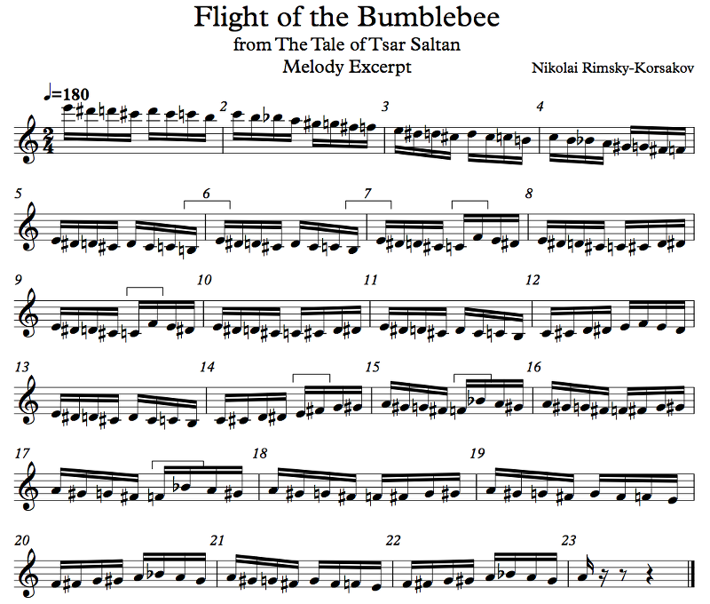Example 7.60
In the original piece, this bit of the melody passes between the flutes and violins, so it's not exactly continuous like I made it look, but the melody itself makes sense this way. I marked with a bracket all of the intervals that are not chromatic.
Not very many of those.
Yes, and yet the piece is solidly in A minor. You can tell this from the harmony. Bumblebees in real life don't buzz in a key, so the chromaticism helps evoke the feel of this insect, but Rimsky-Korsakov did not want to write atonal music, and you can hear that in the harmony and in the notes emphasized by these chromatic runs, which are mostly the first note of each grouping, the leaps, etc. The exception here is at 14, where the melody goes up a major second. What's up with that? Well, Rimsky-Korsakov wanted to get to A, and there are five notes to get from E to A but he only had space for four. Many composers writing chromatic runs will just write quintuplets or whatever is necessary, often with the understanding that the runs are just going to be played approximately anyway, but here, the 16th note rhythm is vital to the character of the piece, so he opts to just drop a note. If you ever see chromatic runs of 32nd notes or smaller at a fast tempo, you can bet that nobody will hear the notes individually anyway.
For now, let's move on to something less trivial:
The Whole Tone Scale
The whole tone scale is... nothing but whole tones:

Example 7.61
This scale is hexatonic, meaning that it has 6 notes, but there's a different scale sometimes referred to as the hexatonic scale that we'll mention a bit later. The spelling here is not clear. I personally find the above arrangement the easiest to work with in a tonal context, but if you're using symmetric scales you're kind of already given up on tonality, right? The first five notes are the same as in lydian augmented (a mode of the melodic minor scale), and the last five notes are the same as in the altered scale, kind of allowing the whole tone scale to work in the context of melodic minor harmony in jazz. The first four notes are the same as in lydian and the last four notes the same as in locrian, and the first four notes plus the sixth are the same as in lydian dominant, so you can almost think of the whole tone scale as a kind of lydian scale that works on both ends. However, the scale is completely symmetric, so any note can be the root of the scale (I wouldn't so much call it a tonic). The whole tone scale consists of two interlocking augmented triads; the whole tone scale on C, for example, is a composite of C+ and D+. There are only two whole tone scales, the one on C (or D, or E, or F#, or Ab, or Bb) and the one on Db (or Eb, or F, or G, or A, or B). Like the chromatic scale, which is also completely symmetric, the whole tone scale has no modes, since any mode of the scale would still be the whole tone scale.
Whole tone runs are associated with dream sequences, flashbacks, that sort of thing. Here's a simple example:

Example 7.62
Why are the notes like that? B#'s?
Ah, that's because the harp is a clever instrument, but there are some problem you need to use trickery to solve. The harp has 7 strings per octave. But... there are 12 notes per octave, right? So how does the harp play those notes? The usual, orchestral harp has 7 pedals, one for each note in the octave, and each pedal can go in three different positions to indicate flats, naturals, or sharps for all instances of that pitch class. In this example, the harpist would have the C, D, and E pedals set to naturals and the F, G, A, and B pedals set to sharps. This means that there's a repeated note, since B# is the same as C natural, but this also means that the harpist can just run a finger down the harp in a glissando isntead of having to play each individual note, which makes this passage much more playable. The harp is actually quite unsuitable for playing chromatic runs, since it takes some effort to flip the pedal, but if you have diatonic runs or similar scales where a note can just be repeated, you can just set the pedals and play away.
The whole tone scale isn't usually around for very long passages. That's because, as a symmetric scale, it's kind of boring. It has a particular sound, but there's just not much more you can do with that sound. That said, there's plenty you can get out of it! I wrote a piece once, many years ago, that heavily featured whole tone material (though not exclusively); here's part of it (the recording has the whole thing):

Example 7.63
This passage is entirely in the whole tone scale, and it kind of oscillates between Bb lydian dominant and Gb lydian dominant. In the whole tone scale, they're equivalent anyway since thye're the same scale. (The rest of the piece uses more traditional materials while going back to the themes exposed in the intro.) There are some features of the whole tone scale on display here that make it not so bad for tonal materials, though building an entire piece out of them is simply going to get boring. The main thing is that we have a perfectly serviceable I chord by simply using a major third. If we think of Bb as the tonic, we also have a bVI chord (Gb Bb major third), bVII chord (Ab C), and II chord (C E). We even have a dominant chord on the tonic or any other root by doing 1 3 b7, which here would be Bb D Ab. Of course, we don't have a perfect fifth in this scale, but we can still use the sound of the dominant 7th. But in lieu of that fifth, we do have the augmented fourth, and in a tonal context, the #4 strongly leads into the 5. That's why the 1 3 #4 chord, the so-called "lydian triad", works as a tonic. By using the #4, we can pretend that there's a 5 that we're just not reaching.
I should also point out that once we cross the enharmonic boundary from the #4 to the b6, we kind of lose our sense of tonality. The whole tone scale, if used in a tonal manner, works best as a plagal mode than an authentic one. Of course, it's quite easy to slip from tonal to atonal. In the above excerpt, measure 1 is clearly in Bb while measure 11 is clearly in Gb; can you figure out at which point the tonal center changes? I think 7 through 10 erase any sort of Bb feeling, and 10 especially has an Ab against a Bb, an unresolved m7. The Ab can continue going down to the Gb at 11, so 11 establishes a whole new key after the Bb had been wiped out in 7-10 despite being present in every chord. This happens because the second trumpet crosses that enharmonic boundary. We don't really hear measure 9 as a 3 - 1 relationship anymore; it feels more like an augmented fifth than a minor sixth. If I had spelled the second trumpet more in line with how it feels, measure 8 would be Fb instead of E and measure 9 would be Ebb instead of D.
By the way, notice how the second trumpet at 15 has the same theme as the first trumpet at the very beginning, except a major third lower. We hear this theme as 3 - #4 - 2 - 3, but later on in the piece we hear it as 1 - 2 - b7 - 1. It's the magic of symmetry.
The chromatic scale is symmetric with respect to transposition by 1 semitone; the whole tone scale, by 2 semitones. Let's look now at the scales that stay the same when transposed by 3 semitones:
The Diminished Scales
The most basic set of notes with 3-semitone symmetry is the diminished 7th chord, but I hesitate to call it a scale since it only has four notes. If we stick two such chords on top of each other, though, we get an octatonic scale — the octatonic scale. There are only two kinds of them:

Example 7.64
Try singing these before trying them out in the Offtonic Scale Keyboard. Try, like, a few times. It's hard, isn't it? I guarantee you that if you can do this, you will have developed a better ear than if you can't.
Trivially. But yes, it's hard! The whole-half diminished scale is much harder than the half-whole, though. Why?
The half-whole scale has triads on the root! You can get your bearings based on the major triad. The whole-half scale does not.
Before we talk about the content of these scales, it would do to look at their structure. There are only three dim7 chords, and therefore thare are only three ways of combining two of them: either you have Co7 and C#o7, or you have Co7 and Do7, or you have C#o7 and Do7. In all three cases, you just have a dim7 chord and another one a half step up (Co7 and Do7 might seem like they're a whole step apart, but Co7 is the same as Ebo7 so it's still a half step). However, you can decide to start the scale on the lower of the two dim7 chords or the upper. If you start on the lower, the scale has a half step, whole step, half step, whole step, etc. pattern; if you start on the upper, it's the reverse, whole step, half step, whole step, half step, etc. The two are modes of each other. If you look at the above scale, you can hopefully clearly see that C half-whole diminished, Db whole-half diminished, Eb half-whole diminished, E whole-half diminished, F# half-whole diminished, G whole-half diminished, A half-whole diminished, and Bb whole-half diminished all represent the same eight notes.
Another feature of this scale makes it more significant in jazz. If you take any two notes of the scale that are a whole step apart and replace them with the note in between, you get a mode of the melodic minor scale. For example, if you replace the Db and Eb in C half-whole diminished with a D, you get C D E F# G A Bb, the lydian dominant scale. This similarity means that you can somewhat easily find ways to substitute one for the other, and a small change to passages using the melodic minor scale will allow you to take advantage of the symmetry of the octatonic scale, where any lick in the scale can be repeated a minor third or tritone up or down and stay in the scale. Interestingly enough, the reverse procedure transforms the whole tone scale into a mode of the melodic minor scale; take any note of the whole tone scale and split it into its adjacent notes. So for example, from C D E F# Ab Bb, split the Ab into G and A, and you have C D E F# G A Bb, the lydian dominant scale. This is why various of the melodic minor modes can be thought of as a diminished scale plus a whole tone scale, and it also shows that you can turn a diminished scale into a whole tone scale simply by merging non-adjacent whole steps (so, in C half-whole, merge Db and Eb into D and G and A into Ab).
Anyway, what do these scale do musically? It turns out that the whole-half scale really doesn't do very much other than sound... diminished. You can play around with it and see what you can do, but remember that the idea would be to maintain the root of the scale such that you're actually using the whole-half scale rather than the half-whole. On the other hand, the half-whole scale is full of possibilities. It has minor nad major triads on the root as well as a dominant 7th chord on the root. That means that you can think of it as basically lydian dominant with a b2 and a b3 passing tone between the b2 and the 3.
One of the best-known examples of the use of octatonic material (as well as whole tone material; it's a bit unclear which it is sometimes) is King Crimson's Red. It uses some very funky rhythms, but just listen to the drums to keep your rhythmic bearings. It goes into some other time signatures, but despite the funky rhythms, the bulk of the piece is in 4/4, as you can tell from the drums. It actually shifts between octatonic and whole tone a bit too much for an excerpt, so just listen to it.
Another example is Scriabin's Prelude Op. 74 No. 3. The video has the score (and so does IMSLP) and it's just one minute long, but Scriabin likes the weird dissonant stuff a lot, and while he could have used the octatonic scale more tonally, he doesn't. The collection of notes he uses here (for the most part) is the half-whole octatonic starting on A, so A A# B#/C C# D# E F# G, though there's no sense of A as a tonic of any sort; it's just where I myself started listing the notes. The score is public domain, so here is the first half or so:

Example 7.65
I marked the notes outside the octatonic scale with the V sign, and they occur at the same spot in the melody every time as a chromatic passing tone. Now, this piece is a prelude. What does that mean? You might imagine that it refers to the opening of something — the prelude is the bit that comes before something else. But as a musical genre, preludes are generally short pieces that explore a single idea. The most famous of these are from Bach's Well-Tempered Clavier, two books each containing one prelude and one fugue in each major and minor key; the first four bars of the C major prelude in Book I are in Example 6.6. In that prelude, nearly every measure has the same pattern. Most preludes aren't that simple, and this one by Scriabin is such an example. It does focus on a few musical elements, the first of which is the melody in measures 1 and 2, which repeats at 3 and 4 a tritone higher (because that fits in the octatonic scale), then again at 5 and 6 in a modified form, then at 7 with just the first half a major 6th up from the original, then at 8 again with just the first half. The material in 9-12 is concluding material for this first half. Another musical element is, obviously, the use of the octatonic scale. Then we have the tritone motif in the bass, which alternates rhythms every two bars except for 8 which repeats 7, just like the melody. The rhythm of the first two notes of the melody actually changes each time, but the melody continues to be recognizable.
Of special note are some of the chords used. Measures 2 and 4 (not counting the bass figure) have dominant 7ths (spelled enharmonically in 4), chords that fit on the root of the half-whole octatonic; measure 6 has something weirder. The right hand looks like a GmM7 (considering the A# as part of the chord), but the lowest note is actually the C# in the left hand, making it something stranger. These chords certainly don't have any sort of tonal function. This is an atonal piece. Some of the chords are relatively consonant, sure, but they still don't suggest a tonic. The chords at 9 and 11 continue to not suggest a tonic. I think of the chord at 9 as an A major triad with a D# in the bass, though the C natural in the melody suggests a #9. The chord at 11 is, enharmonically, a C7b5 or a French augmented 6th, and this chord is interesting because in addition to being in the octatonic scale, it's also in the whole tone scale.
Why does that chord at 11 lose one of its notes at 12? Typo?
I don't think so. Look at the diminuendo at measure 12. Now stop looking at it because it's not relevant. See, you thought I was going to say that the note disappearing is just a thinning of the texture to go with the decreasing dynamic, but actually the E in the left hand would just run into the E in the right hand. It's a mundane reason. Looking at it again, it seems sort of unlikely that the E would be played by the left hand anyway. Tenths on the piano are usually really awkward to play, and people with smaller hands may not be able to play them at all, but the E is well within the range of the right hand melody to allow the right hand to reach it.
There are some other very tricky chords, like the one at 5. How might you play that? The piano luckily has pedals. Three of them. The left pedal is the soft pedal; when you press it, the hammers move over a bit so that they're hitting only one string instead of the usual three, making the sound obviously much softer (on some models of piano the action may be a bit different, like moving the hammers closer to the strings instead). This is notated in the music with una corda, one string, and release of the pedal is marked by tre corde, three strings. The right pedal is the sustain pedal or the damper pedal; when you press it, the dampers are released, so the strings can keep resonating instead of stopping. This one is really cool to play with because the strings have sympathetic vibrations, which is what happens when a sound is going on that excites the strings. If a string vibrates at a C, for example, if that C is played or sung or something by someone or something else nearby, the string will start vibrating on its own due to the air exciting it. (This is basically how your ear hears; the cilia respond sympathetically to sounds that come their way.) If you have access to a grand piano, there are two ways to release dampers: one, press a key. That will swing the hammer and release the damper for that note. Two, press the pedal. This will release all of the dampers. Then, try singing, and any string that resonates with the note you're singing (each string will resonate with many different notes; we'll talk about this later) will start vibrating and echoing you. It's a really cool effect. Anyway, the damper pedal is notated with a big cursive "Ped." to press it and a big fancy asterisk to release it under the staff, or sometimes just a line that indicates when to release.
But the relevant pedal for playing these chords is the middle pedal, the sostenuto pedal. This one is weird; if you just sit at a piano with no knowledge of how it works, it would take you a while to figure it out. What the sostenuto pedal does is that it holds whatever dampers are currently released. So, if you press a key, that will release the damper for that key. If you then press the middle pedal, the pedal will hold the damper. So then you can release the key, and the note will still keep sounding because the pedal is holding the damper. In measure 5, you can play the first half of the measure accurately by using the middle pedal. On the first beat, you play the E, A#, and A, then you press the middle pedal and release the E. When it's time to play the low B#, you're no longer holding the E so you can reach that and the F#. The problem with this is that the A will continue to be held while you play the rest of the measure, which is not what's written. However, at the soft dynamic of this measure, this may be an acceptable sacrifice.
The diminished scales are generally used more as a momentary thng than as the basis for a composition like Scriabin's. Therefore, you wouldn't really call it a mode, just a scale that composers draw from in various circumstances. This is generally the case for symmetric scales. In an asymmetrical scale, every note feels different. For example, in F dorian, the G is just a half step below the Ab and a whole step above the F, while the C is equally spaced between the Bb and the D. Every note has a somewhat different relationship to the notes immediately around it. In a symmetric scale, that's not true. The diminished scale has two types of notes, those that are a half step above and a whole step below its neighbors, and those that are a whole step above and a half step below its neighbors, and they alternate, so even relations with more distant notes don't differentiate the notes of the scale. A C in a diminished scale is exactly the same as an Eb, an F#, and an A. That means that it's very difficult to hold on to any sort of tonic or much color, so when it's used, it's used just for the length of a chord. This is quite common in jazz, in fact.
This next scale, on the other hand, is not very common in jazz (but not unheard of either):
The Augmented Scales
The diminished scales consist of two diminished 7th chords a half step apart. The augmented scales — also called the hexatonic scales (even though the term applies to any six-tone scale) — consist of two augmented triads a half step apart:

Example 7.66
Why can't the two augmented triads be a whole step apart? A major third consists of two whole steps.
They can, and that would make the whole tone scale, which we've already talked about. You could also have three augmented triads to make a symmetric scale with nine notes, but by that point you're not doing anything musically interesting (though Toru Takemitsu has made use of this nine-tone scale). For reference, here's what those scales would look like:

Example 7.67
All five of these are in the Offtonic Scale Keyboard if you're interested. I'm presenting them here mostly as a curiosity, because they aren't very common in music. You might use something like one of these scales if you're employing bitonality — two tonalities at the same time — or writing a melody over a polychord, but you most likely wouldn't compose something entirely in one of these scales. For the hexatonic scales specifically, the minor thirds/augmented seconds between adjacent steps make the scale difficult to use melodically. We'll shortly see other scales with more than one augmented second, but you can still get a strong sense of tonality with them. Not so much here.
One thing you can do with the augmented scales is make major chords with a b6. We saw this back in Example 7.57 with the Generic Space Chords, though we used the mixolydian b6 scale there, not the augmented scale. You can also make chords with both a major and a minor third called mixed third chords or split-third chords.
Other Symmetric Scales
We've looked at all of the scales that are symmetric with respect to transposition by 1, 2, 3, or 4 semitones. The only ones left are those with tritone symmetry, where they're symmetric with respect to transposition by 6 semitones (recall that 5 is impossible because it's not a factor of 12, and 12 has no factors greater than 6 and smaller than 12). There are several of these. We can do some math to find out how many. Such a scale would contain some number of tritones, right? There are 6 tritones available, C F#, Db G, D Ab, Eb A, E Bb, and F B. Therefore, there are 64 scales with some of these tritones, but not all of them would "count". There's 1 empty scale with no notes; that clearly doesn't count. There are 6 scales that consist just of the two notes of the tritone; those clearly don't count. There's one scale that's the chromatic scale; there are two that are the whole tone scales; there are three that are the octatonic scales; there are three that are the dim7 chords. That leaves 48 scales. But do we want to consider collections like C Db F# G to be scales? So should we take out all 15 4-note scales? We've already taken out the dim7 chords, so that leaves us 36 scales. What about collections like C Db D F# G Ab; should that be a scale? Should we not include scales with major thirds between adjacent notes? (We'll soon see some pentatonic scales with major thirds that we do count.)
Messiaen catalogued all of the symmetric scales (in 12-tone equal temperament) and called them modes of limited transposition, and he worked them into his music. You're welcome to do the same if you really feel like it. But we're going to talk about something completely different now:
Maqamat
So far we've focused mostly on Western music. We've talked about Jewish music a bit, but that was mostly Western-style Jewish music. Now, though, I want to talk about a radically different conception of modes: maqamat, used in Arabic music. The word "maqam", plural "maqamat", means "place" in Arabic (cognate with "makom" in Hebrew), and it refers to a mode, like major or minor but different. Maqam-based music is generally not harmonic, only melodic, so the fifth has less importance than in Western music. You don't generally find chords in Arabic maqam music, though that doesn't stop Arabic music from using chords in more Western-like tunes, which are said to be in Western-like maqamat like maqam Ajam or maqam Nahwand, roughly corresponding to major and minor, respectively.
Maqamat sometimes have varying ascending and descending forms, much like the Western minor mode. One crucial difference, though, is that the note the maqam starts on is actually important. In Western music, G major and B major are identical, but they might correspond to different maqamat. For example, maqam Rahat El Arwah is exactly the same as maqam Huzam (a popular variant of maqam Siga) but a fourth lower, which is said to give it a different character. This doesn't stop you from playing Huzam on any given level, but if it's a low key, you'd just call it something else. Different ways of approaching melodies also merit different maqamat, such as maqam Oj having the same scale as maqam Iraq but with different sayr, meaning melodic development.
Also, they use quarter tones.
Wait, what?
Yeah, the steps aren't just half steps and whole steps (and augmented seconds). There are 3/4-steps too (and occasionally 1/4-steps or 5/4-steps). It's a really cool sound for people who aren't used to it yet!
So the notes of the maqamat come from 24-tone equal temperament?
Well, not quite. In Western music we use equal temperament, but there's really no need for that in Arabic music, especially on instruments like the oud that don't have fixed pitch. The oud is a string instrument somewhat similar to the guitar but with no frets. This means that it doesn't need frets that are compatible with whatever scale it needs to play. For example, on the guitar, if you want to play in C major or F# major, all those notes still need to work and be in tune. You might tune the G string too low, for example, so that the G# on the first fret is in tune with the open E of the bottom string, and that will screw up your tuning for everything else. But on the oud, you can't go lower than open strings, sure, but you can tune the F (for example) lower when you play in one maqam than when you play in another. That said, there's debate about this within the Arab musical community, and some people do try to play in 24-TET.
Turkish music, which is distinct from the Arabic maqam music we're talking about, actually uses 53-tone equal temperament, or something like it. It divides the octave into 53 steps called commas, and a major second (D to E) is 9 commas while a minor second (E to F) is 4. That means that the minor second isn't half of a major second. Within this comma system, you have a lot more freedom regarding where the notes go in a scale.
Do they use all 53 notes in the scale? That seems like a lot.
They don't. Rather, they'll pick seven notes in the octave for a scale, much like we do in Western music, with other variations of the notes being available as well for modulations — they can tune something up or down if necessary, within the system.
Still, this is more of a theoretical tool for understanding the Turkish system than an extremely precise mathematical science; ultimately, music is written and performed by ear. A comma is about 22.6 cents, so a quarter step might be 2 (45.3) or 3 (67.9) commas, a half step 4 (90.6) or 5 (113.2), a whole step 8 (181.1) or 9 (203.7), etc. Recall that a 12-TET half step is 100 cents, so a quarter step is 50 cents and a whole step 200. The Turkish system allows us to fudge that a bit.
Why might we want to do that in the first place?
That's not the right question to ask. This just happens to be how Turkish music developed!
What, then, does this have to do with maqamat?
Well, that is the right question to ask! Maqamat are said to use a 24-TET system, and they give names to the 24 notes in two octaves, from low-G yakah to middle-G nawa to high-G ramal tuti (we'll look at them shortly), but in reality (at least in instruments without fixed pitch) the tuning isn't quite so strict, making it closer to the Turkish tuning than Western tuning. For example, it's generally accepted that the Nahwand tetrachord, which is similar to the Western minor tetrachord (C D Eb F), has an Eb that's a comma or two lower than in the Hijaz tetrachord (D Eb F# G).
Tetrachord?
I mentioned "tetrachords" earlier, which are scale fragments that aren't necessarily four notes — could be three or five. In maqam music, these tetrachords — one tetrachord is a jins (from the Greek "genus"), plural ajnas — are far more important than in Western music. We'll see this in action shortly. Given the greater variety of notes available, there is similarly a greater variety of ajnas available, and these ajnas are used as common elements in modulation, as well as serving as temporary centers. Not tonal centers, mind you. Most maqam music is not tonal but rather modal. This is a distinction that we will return to. But you will notice that what we Westerners might think of as a tonal center is not the principle around which maqam music is organized; rather, that music is organized around these ajnas.
Before we continue, I want to mention that maqam theory is not a single, monolithic, accepted-by-everyone theory. There are often conflicting definitions of particular maqamat. Two great online sources are Maqam World and Oudipedia, and you'll find different, conflicting information in those two sources. Maqam World talks about one-octave maqamat, while Oudipedia has the maqamat span two octaves (the upper octave is not necessarily the same as the lower). Read some books and they'll have even more diverse views. Furthermore, different communities use different maqamat differently. It's probably better to think of the maqamat as describing a wide set of musical practices than prescribing precise scales.
The study of maqamat can (and should) span far more than a short section in a theory book, but this is what we have to work with, so our treatment will necessarily be somewhat abbreviated. There are certainly books on the subject (I have one by David Muallem called "The Maqam Book") as well as many contradictory treatments of it, in part reflecting the variety of traditions that comprise the greater Arab maqam tradition. This isn't even getting into the Iraqi maqam system, which is different, or the Turkish makam system (spelled differently for a reason), which is very different. Many of the names in the Arab system are of Persian origin, and the Persian dagstah system is also very different. The nuba system in North Africa is also very different. Whatever they do or used to do in Yemen is... I don't even know. The shashmakam system of Central Asia is very different. The Arab maqam system really refers to a musical tradition from a fairly small region of the world, and yet, it's still incredibly rich and varies from place to place within that region.
Before we go on, I should mention that I'll provide two tunings for most of these scales in the Offtonic Scale Keyboard, a 24-TET version and a 53-TET version. Neither is necessarily more authentic, especially as we quickly run into the limitations of the 53-TET system when we want to change the tunings of notes by less than the 22.6 cents of the comma. You can also explore the complete 24-TET scale in the keyboard and look around for interesting new harmonies (which isn't relevant to this discussion at all but is lots of fun).
The Fundamental Arabic Scale
In Western music, all 12 pitch classes are equal.
Are they? Is there no preference for white notes over black ones?
Are you accusing the West of racism?
I mean... Historically, yeah, kinda? It's been pretty bad.
OK, fine, I supposed that's true. In the past, we used to have a system that prioritized certain notes over others, so a C major scale (all white keys) would be in tune while an Ab major scale (lots of black keys) would be way out of tune with the wolf fifths and other wolf intervals we talked about in Chapter 5, so that, in a sense, we can think of the white notes as more important. Indeed, our white notes have names — C, D, E, F, G, A, B in English, do/ut, re, mi, fa, sol, la, si in other languages. The black notes don't have their own names; they have names derived from the white notes. So you have a C sharp — it's one semitone up from C — and a Gb — one semitone down from G. While nowadays we don't really consider the white notes to be any different from the black ones, in a sense the white notes are more fundamental to how we build our scales.
The Arabic scale also has a set of fundamental notes (remember that the backwards flat means half-flat):

Example 7.68
Why do they stop at G on both ends?
That's a good question. If you remember when we talked about Boethius's system of notes, we used to have A, B, C, D, E, F, G, H, I, L, M, N, and O as notes, but at some point we decided to just repeat names at the octave. The idea behind this is that notes below the lowest and above the highest are just not practical, melodically. And maqam music is all melodic, so that's the only important consideration. This doesn't stop people from actually going higher or lower in melodies and improvisations, but those notes don't have unique names; they're just called qarar for lower notes (qarar Jiharkah for a low F, for example, just like how we say "low F") and jawab for higher notes (jawab Husayni for a high A, for example, again, just like how we say "high A"). The F another octave lower would then be qarar qarar Jiharkah, and so on in both directions.
By the way, that middle octave has the same notes as maqam Rast, which we'll talk about shortly, so if you want to hear how this sounds, you can try that in the Offtonic Scale Keyboard. Also, please note that the note Kirdan (high C) is often also called Mahur.
What about, like, bass instruments? Don't they play much lower? What about men, who sing an octave lower? Flutes that play higher?
In Western music, A on the treble staff is 440 Hz. Unless you're playing a transposing instrument, in which case it's not. It's the same thing here, except it's less defined. For an ensemble playing together, everyone is playing essentially the same melody, perhaps with small variations, so the Yakah on the oud will be an octave lower than on the violin, which will be an octave lower than on the ney. And if you want to tune everything down a step or up a step, that's OK too; the pitch is relative. In vocal music, for example, the ensemble could arbitrarily decide that Dukah is this note, even if they're a little off (or a lot off), so long as they maintain their relative pitch. In fact, this is true for Western ensembles too. Even A 440 isn't completely standard for everyone; in the past it was a bit lower, and some orchestras actually play a bit higher. Some percussion instruments are deliberately tuned to A 441 or A 442 in order to sound a bit brighter than the ensemble and create a bit of shimmer. So it happens that in ensembles for Arab music, everyone transposes to some extent.
The transposition is a bit stricter in cases where fixed-pitch instruments are used, like the qanun or ney, and even the oud and violin have open strings that need to be tuned, but so long as everyone agrees on the pitch, that's all that matters.
Mostly.
Mostly?
Yeah, it's actually OK if you're out of tune by a little bit, at least in the traditional ensembles (orchestras are another matter). It's part of the magic of the Arabic sound!
Now, this fundamental scale is the traditional basis for Arabic maqamat. Several maqamat, like Rast, Iraq, Siga, and Hoseni, use only these notes. But you'll notice that there are no half steps in this scale, but they definitely exist in other maqamat. So there's a second level of notes, equivalent to the black keys, that fills in the gaps:

Example 7.69
There's one note in each gap, and for the most part, these names correspond to maqamat that use these notes; for example, maqam Hijaz uses the F#, called Hijaz. It's not entirely clear which name came first. The fundamental notes also have names that correspond to maqamat, often ones that begin on that note. For example, maqam Siga begins on the note Sikah. The word comes from Persian and means "third note", much like Yakah, Dukah, and Jiharkah mean "first note", "second note", and "fourth note", respectively.
Two questions. First, why is Siga not spelled the same way as Sikah? Second, why is there an entire fifth between the first and second notes?
To the first question, I'm naming maqamat by their Sephardic names, which come from Arabic but aren't actually Arabic, while I'm naming the notes by their Arabic names. What I know is Sephardic music, so that's why I'm using those names; you're welcome to use the spellings that sound more Arabic. To the second question, it's historical reasons. Presumably C used to be called Yakah at some point, and eventually, the name ended up attached to a different note instead. This happens to maqamat as well; we have maqamat Yakah, Ashiran, Iraq, Rast, Siga, Jiharkah, Nawa, Hoseni, Oj, Kirdan, and Mohiyar, but why not Dukah? There used to be a Dukah. Nowadays there isn't. The literature isn't entirely clear, but what we now call maqam Bayat was probably called Dukah a few centuries ago.
These are 29 primary and secondary notes, but from G to G there are 49 notes, since there are 24 to the octave. The other notes, the tertiary notes, don't have their own names; they're based on the secondary notes around them. A secondary note like Zirkulah can be raised a quarter step (tik Zirkulah) or lowered a quarter step (nim Zirkulah). Looks like this:
Example 7.70
These tertiary notes aren't generally used except as occasional leading tones and in some rare maqamat. I should quickly explain the accidentals again just in case you don't remember. The backwards flat is a half-flat, and I represent it in text form as a d. So, note Iraq is Bd. The half-flat and a regular flat together mean 3/2-flat, of course, which I represent as db; qarar nim Hisar is Adb. The sharp with only a single vertical stroke is a half-sharp, which I represent as a t; tik Kawasht is Bt. The sharp with three vertical strokes is a 3/2-sharp, which I represent as either t# or #t; tik Zirkulah is C#t.
Also, let's talk a little bit about terminology. We usually talk about whole steps and half steps, right? In Arab music, we have three-quarter steps and occasional five-quarter steps (and very occasional quarter steps). The math is obvious. Since a whole step is also known as a whole tone (see: the whole tone scale), a half step is a semitone, and a quarter step is a quarter tone. You'll hear people talking about notes like Ed and Bt as quarter tones, but technically, the quarter tone is a small interval (which is not a sum of semitones so we say that it's microtonal), not a note. Some people may call these quarter notes, but you can immediately see why that's terrible. The part that's confusing is that a flat or sharp changes a note by a half step, so a half flat or half sharp changes a note by a quarter step. A quarter flat, then, would change a note by a 1/8-step. That's a plausible thing to do, but it's not something done in Arab maqam music, so we're not talking about it. There are no quarter flats involved, just half flats and quarter steps (or quarter tones).
So let's start by listening to some music in a maqam we don't have in Western music. This is Yaareh Aleinu Ruach (performed by an ensemble led by famous cantor David Shiro), a fun tune from the bakashot (Shabbat songs) of the Aleppo Jewish community. It's in a maqam called Suznak in the Rast family:
Example 7.71
It sounds... pretty normal? Also, the recording is in B but you notated in in C.
Yeah. Yes, it does. The tuning sounds a bit different to Western ears, but it's otherwise normal. The bottom tetrachord actually sounds pretty major, doesn't it? It's not, because of the half-flat third, but it's close enough, like a major 3 that's just a bit flat. And the b6 is also a bit high and the 7 is a bit low, two fairly common features whenever you see an augmented second in maqam music. As for notating it in C, C is the pitch level for this maqam. The performers performed it a bit lower; that's perfectly normal. But I think it should still be notated in C.
You'll notice, by the way, that I put some jins analysis above the staff. Maqam Suznak is composed of two tetrachords/pentachords/trichords/whatever — two ajnas — Rast on C (note Rast) and Hijaz on G (note Nawa). We'll see these in more detail in the coming sections. The Rast tetrachord goes 1 2 d3 4, and the Hijaz tetrachord goes 1 b2 3 4. The Hijaz tetrachord also shows up in the harmonic minor scale (on 5) and phrygian dominant (on 1), but Rast, with its neutral third, is not part of the Western 12-tone system. We also have Siga on Ed (note Sikah) as a secondary jins; Siga is generally considered a trichord that goes 1 d2 d3, but it almost always appears on Ed (Ed F G) or Bd (Bd C D).
Just like in a lot of Western music, this song hangs out in one tetrachord (or trichord or pentachord, etc.) at a time, with possibly a leading tone here and there, and the roots of these tetrachords are the stable points of the mode. When we're on a C jins, C is the center; on a G jins, G is the center. The Ed jins Siga here is more secondary; while the real stable points are the C and the G, the Siga jins on Ed at measure 3 actually centers on the G, while the one at measure 7 centers on the Ed. There's a big difference here between modern Western music and maqam music: maqam music is modal, not tonal. This refers to the fact that we don't really have function or stability beyond these stable points, the roots of the primary and secondary ajnas in the maqam. The bottom note of the scale isn't necessarily a tonic in the sense of all of the other notes somehow leading to it; rather, the bottom of each jins is the tonic just for that jins. The tonic of the bottom jins is generally thought of as the tonic of the maqam, but it doesn't have to be; however, it's generally the final of the maqam. We'll see this when we talk about the Siga family of maqamat, where the Ed doesn't really feel like a tonic, but it's where the music rests. Siga modes are weird.
Why are the verses numbered 1, 2, 3, 6?
Because this performance skips verses 4 and 5, of course! This song is relatively short, but this group recorded the entire thing of bakashot. I have the recordings on CD; it's a 5-CD set (not all of which is on YouTube, sadly). If they sang every verse of every song their vocal cords would explode. (On the other hand, they're missing some fun ones in other songs...)
Here's another performance of the same song that does things somewhat differently, this one by the great cantor Moshe Habusha. It's too similar to transcribe, but you should pay attention to the differences. First, the B naturals at measures 4, 5, and 6 have become Bd's when he sings, but not in the instrumental verse at the end on the oud. You can listen to this much better by using YouTube's settings to slow down the video to 50%; this is an indispensable tool when transcribing music on this service. It's actually somewhat unclear what the actual pitch is supposed to be, which is fairly normal for fast notes in general but especially when dealing with the small differences of a quarter step. Another small difference is that the Ab at measure 3 is sung as a G... that then goes up to Ab. In fact, the Ab - F - Ed eighth notes have turned into G - Ab - F - G - Ed 16th notes. Measure 5 has a similar thing going on in the second half. If you listen to Arab and Arab-related music, you'll find that this is incredibly common: descending eighth notes get embellished by each one going up a step in the scale before going to the next note down. A scalar run of G - F - Ed - D - C will almost always be sung as G - A - F - G - Ed - F - D - Ed - C (well, assuming the scale has an A; if it were this song, it would be Ab). The final difference I'll point out is that the half note at the end becomes just an eighth note that goes straight into the pickups into the next verse. I have a feeling that the other recording is more "correct" in some sense, since it keeps the 4/4 time going (despite the 3/4 bar, I guess), but these melodies evolve by being sung, and clearly someone thought it was fun to jump the gun on the next verse and it stuck. I've listened to quite a few other recordings of this song, and most of them do jump the gun that way.
Now, what would happen if David Shiro and Moshe Habusha got together to sing this song? No, I don't know of a recording of that very eventuality (though you can definitely find recordings of the two of them together). But if you held a bakashot session and both of them showed up without rehearsing beforehand, they'd sing this song a bit differently together. Shiro would say "Yaareh aleinu ruach (ruach)", while Habusha would not say the echo. It would be a neat effect. They would not agree on the 7th degree of the scale either, so it would sound out of tune. They probably wouldn't agree on the third degree either, but the difference would be smaller. On the other hand, they might adjust to each other. The Ab at measure 3 would definitely not match, and nobody would really care. When it came time for the second verse (let's assume they did know beforehand which verses they're going to sing), Habusha would jump the gun and Shiro would not. What would happen? Well, they're both competent musicians, so most likely, Shiro would yield to Habusha. Why not the other way around? Because it's easier to come in late than to get someone to shift the song back two beats. Habusha would sing "Alei asor", and Shiro would realize that he's not waiting and would start back on "vaalei navel (navel)". Next verse, they'd both start the verse early.
This little thought experiment is actually very important for a number of reasons, but the most important one is that we need to be able to think like real musicians approaching music. When we write music, we need to have in mind how performers will approach it, how different performers might get different impressions of it, and how those performers will resolve those differences. Will they be able to fix them automatically by listening? Are they skillful enough to do that? Will they have a lot of rehearsal time on the piece? Will they have time during rehearsal to focus on those issues? Do you even want the differences resolved in the first place? I'd argue that for this piece, the roughness is part of the style, but what about the pieces you write?
Anyway, let's continue with our brief study of maqamat by actually looking at some maqam families. To do that, we're going to listen to improvisations on these maqamat, specifically in this recording of Ps. 92 (begins at 2:07:11 and ends at 2:17:17) by Moshe Habusha. Traditionally, Ps. 92 is the centerpiece of the bakashot service, being the psalm for Shabbat, and each line of the psalm is sung in a different maqam (though different books specify different maqamat for each line; this particular recording follows Shir Ushvachah Halel V'zimrah, available online at the Sephardic Pizmonim Project. We're not going to look at the lines in order because the first line is in maqam Nawa and that one's actually quite complicated to explain. If you want to hear more from any maqam, my suggestion is to search online for a taksim in that maqam. A taksim (or taqsim, plural takasim/taqasim) is an improvisatory instrumental piece that ideally follows the traditional melodic development of the maqam, exploring its ajnas in the prescribed way, ending on the prescribed note, etc. There's a lot of optional formalism when it comes to maqamat, and listening to (and attempting to emulate) a taksim is one of the best ways to learn it. These lines from Ps. 92 are the vocal equivalent. So let's dive in!
The Rast Family
This is the basic form of maqam Rast; it consists a Rast jins on C (Rast) and a Rast jins on G (Nawa), with a secondary Siga jins on Ed (Sikah):
Example 7.72
The numbers under the staff indicate the number of 53-TET commas between the notes (which not everyone agrees with, so take them as just one example). I've provided two versions of the basic scale in the Offtonic Scale Keyboard, a 24-TET version and a 53-TET version (as well as two versions of the scale with both ascending and descending forms, as you'll see below). Note that actual musicians aren't going to play either one exactly. If you play around with both, though, you can hear the differences. The fourth and fifth are more in tune in 53-TET, and the neutral third (neutral because it's neither major nor minor) is higher than in 24-TET. In the Middle East, the pitch of the neutral third actually varies, with the Egyptian Ed sounding lower than the Syrian; these are two possibilities. The difference isn't large. The 24-TET Ed is obviously 350 cents above C, while the 53-TET one is about 362 cents. Still, if you play them both you will hear the difference.
Now, when we talk about maqam families, we're essentially grouping them by their initial jins. The sound of the maqam depends much more strongly on this jins than the upper jins, so we use it to keep track of the maqamat. For each jins, there's usually some list of maqamat that begin with it (there are some exceptions too). Here are a bunch of the other maqamat that belong to this family (remembering that different sources might name maqamat differently):
Example 7.73
This is sort of like the difference between dorian and minor; they're both minor, really, but dorian means you play one of the upper notes differently. That's basically what's going on here, with a bit more.
I AM SO CONFUSED. Why are there so many?
Historical reasons, and also people decide to play one note differently and a new maqam gets named out of nowhere. Also, as you can see with maqam Mahur, people just don't agree on what different maqamat (or the same maqamat) are called. So let's tackle these in order.
Will there be examples for each of these maqamat?
Um, hell no. Sorry. But you can probably find them on YouTube if you're curious.
To start with, Rast has an ascending form and a descending form, much like the Spanish scale and melodic minor. Really, though, you should think of the Bd as a kind of unstable note, which can go either way. This is true in a number of maqamat that we'll see a bit later. Maqam Kirdan (which doesn't get its own entry in the Offtonic Scale Keyboard) is the same as maqam Rast except you'd start on the high C going up and eventually make your way down to the low C; this performance practice is known as the maqam's sayr. Both Rast and Kirdan, and also Mahur, Suznak, and Nayruz, have Rast on C as the first jins and another jins on G as the second jins; this means that the two ajnas are disjoint and separated by a whole step. The root note of the second jins is the dominant of the scale, which in Arabic is called the ghammaz. In Western music, we almost always have the dominant as the 5 of the scale, in but Arabic music that's not necessarily the case, as we can see with some of these maqamat.
Some people have Mahur as having an Ajam jins on G (the major tetrachord); some have it only when ascending and Nahwand (the minor tetrachord) when descending. Some have maqam Mahur start low and end high; some have it start high and end low; some just have it high the whole time (essentially a plagal version of maqam Rast).
Why can't they just agree? It doesn't seem that hard.
It's actually not very easy, because nobody wants to give up their traditions with regards to naming the maqamat. Traditions change anyway, but they change slowly. Maybe in another hundred years, people will have converged on a definition for this maqam, or maybe people just won't use it at all anymore.
Suznak and Nayruz (Niriz is just another spelling of the same name) are quite straightforward, though you may not be familiar with their second ajnas yet. That's OK. We saw Suznak just in the last section, in Example 7.71; we'll see Bayat later on. Maqam Yakah, on the other hand, is just a lower version of maqam Nayruz, but according to at least some people, it should start on the upper G and end on the lower G.
Nishaburk is the first one we're seeing where the ghammaz — the dominant — is not the fifth. Nishaburk has the same intervals as Nayruz and Yakah (though it starts on D rather than C or G), but the second jins starts on the fourth, not the fifth. The two primary ajnas, therefore, are conjunct, and the whole step is between the top of the second jins and the octave. Since the intervals are the same, neither maqam Yakah nor maqam Nishaburk have their own entries in the Offtonic Scale Keyboard.
Finally, Dalanshin is weird. Its first jins is actually a Rast pentachord rather than a tetrachord, and the ghammaz is the 6, the root of a rather odd jins called Saba (we'll see it more as we proceed). Saba on A has a Db, while Rast on C has a D, so the scale does not repeat at the octave; furthermore, jins Saba generally overlaps with jins Hijaz on the third note, so we have more non-repetition higher up; those notes are not included in the Offtonic Scale Keyboard renditions of the scale.
How do you play scales that don't repeat at the octave?
It's actually easy, since there's no harmony. If I'm playing an octave below you, for example, I just have to play the same notes you're playing but down an octave. If you play a D, I play a D an octave lower. If you play a high Db, I play a Db an octave lower than yours, even though if you were playing in that octave, you'd be playing the D. These scales really only work melodically, not harmonically (though... I mean, if you wanted to, you could), so my high Db doesn't need to match your low D; it only needs to match your high Db.
There are two lines of Ps. 92 in Rast-family maqamat (at least in the Shir Ushvachah listing), verses 11 (Rast) and 12 (Mahur), which begin at 2:12:51 and 2:14:00 in this recording, respectively (rhythms very approximate):

Example 7.74
Right away, we should notice that we're in A here, not in C. I don't know why Habusha decided to sing it so high, especially since the second of these two lines is in maqam Mahur, a specifically high version of maqam Rast. Of course, just because a maqam is traditionally on C doesn't mean it actually has to be sung on C, and if he wants to sing it on A, that's his call to make.
Also, the lack of time signature shows very plainly that the rhythms I notated are completely approximate, because this is melodic improvisation and it isn't rhythmic at all. There's no pulse to feel. I put bar lines wherever I thought they were convenient (and also so that I could number measures in a useful way).
Moshe Habusha's family is originally Iraqi (though he was born in Jerusalem, and the tradition the recording is from is Syrian). This may explain his very low neutral thirds; his Rast improvisation borders on A minor, doesn't it? Different people place their notes differently. There's some finesse involved in transcribing microtonal singing like this, because there's a distinction between the actual pitch heard and the note that the singer intended to sing. Some ajnas, Hijaz especially, are often tuned in somewhat extreme ways, and it becomes unclear what the singer actually meant. So take this transcription more as a guess, and the beauty of improvisation is that the musician can really do whatever he or she wants. So let's actually study this transcription, starting with the verse in maqam Rast.
I thought maqam Rast had a Rast jins on the tonic and another Rast jins on the fifth. Why don't I see that upper jins here? What's with the Ft's?
Maqam music actually has a lot of room for modulation and for chromatic alteration. The primary focus of maqam Rast is in its primary jins, which in this case is Rast on A. The upper jins kind of doesn't matter so much, and leading tones and neighbor tones are also welcome. The Ft's we see are neighbor tones of the E, which is the ghammaz. Until we get to measure 11, we don't actually explore the upper jins at all; at 11, we modulate into a jins Hijaz on E (E F G# A). Are we actually in maqam Suznak? Eh. It doesn't last, so since the book says it's supposed to be Rast, let's just keep calling it Rast. At 12, the F# is the lower neighbor tone to G and not really part of the jins; you could go both ways on the F natural and say that the Ft at 13 is actually evidence of jins Bayat on E rather than Kurd on E and Rast on D. You're always welcome to analyze the music differently. From the second half of 13 on, we're staying in the primary jins.
A few things to note: most of the improvisation actually happens on one syllable being held; most of the syllables are not treated melismatically (that is, many notes on the same syllable). For example, 11 through 14 are mostly just one syllable, while 15 is the entire first half of the verse. Another thing to note is the characteristic way to end phrases on the tonic using a very short note. My transcription doesn't quite do it justice, but you can see it in measures 4, 14, and 19, as well as in the maqam Mahur line in measures 23, 28, and 35.
Speaking of the line in maqam Mahur...
Shouldn't it have G#'s? How can you tell it apart from Rast?
You kinda can't. But, knowing that it's maqam Mahur, you can follow along. In the Syrian Jewish tradition, this maqam begins high and ends low but is otherwise basically maqam Rast, so we have that here. It's quite high at the start, and it goes down to the lower octave of the tonic by the end, even going to the jins below the primary jins at 29. By the way, the pickups to 20 and the end of the phrase at 23 are both actually from either Rast on A or Siga on Ct, however you want to view that, but they're so short that I didn't think it was worth marking them. The Nahwand on D segment could also be understood to be in jins Siga on Ct (or Huzam, which we'll get to), but what we're seeing here is parallelism, and lots of it. The repetitions aren't exact, but Habusha makes his way down the scale in patterns. He does this in the maqam Rast line as well, at 12 and 13, for example. At 29, as I mentioned, he overshoots the tonic and goes to the jins below it, and this time it's the "right" jins, kinda. Right for Rast, anyway. Though it's descending and it doesn't use the descending form. Eh. Again, this is all solo improvisation, so as long as Habusha stays kinda within the framework of the maqam, he's still following the book.
What about Rule 0? Does he have to stay within the framework?
Musically, no, of course not. But this isn't just music, right? It's expected that he will sing the "right" things when he's recording something that's supposed to be traditional. He doesn't own the notes he's singing. You can do whatever you want in your music; you can even disregard what's written if you want to — in your music. But when you're recording a reference recording for traditional singing, you do have to stick to it.
Two final notes here: the ending at 35 is kind of... not really very strong, right? (It should be noted that the ending at 19 is basically the same.) That's because there's still more psalm left. The next line is in a completely different maqam. We'll see in a later section that the actual last line of the psalm also doesn't have a real ending, because it leads into the next pizmon, Shalom Vatzedek.
The other note: this is (obviously) not the only recording of Ps. 92 available in the Halabi bakashot tradition, but it is the one that best sticks to the order of maqamat set in the book I'm looking at (Shir Ushvachah Halel V'zimrah). The other recordings that I've seen don't actually advertise the maqam used so it's quite hard to figure out what exactly they're trying to sing, except one, this one by R. David Riahi. It doesn't use the same sequence of maqamat as the book, but if you read Hebrew it does tell you what the maqamat are. If you don't, verse 2 (0:30) is in maqam Rast, and verse 12 (7:40) is in maqam Mahur.
The Ajam Family
The next family we'll look at is the Ajam family:
Example 7.75
Maqam Ajam is the major scale. There are some performance details when it comes to the traditional uses of maqam Ajam, but in practice, any tune in major, Western or not, is said to be in maqam Ajam. Some traditionally put maqam Ajam on C and some on Bb. Some use it as a high maqam that descends; others don't really care for that. Sasgar is a name used for maqam Ajam when it's on F, but it's not commonly used and it's not actually different from Ajam; it appears to me that Sasgar is plagal (using ajnas below and above the tonic) while Ajam is authentic (using ajnas mostly above the tonic). Jins Ajam is often considered a trichord rather than a tetrachord, so jins Ajam on Bb would just be Bb C D instead of Bb C D Eb. I've analyzed it as a tetrachord here, but just remember that it doesn't have to be. The third in maqam Ajam is supposed to be a bit lower than in Western tuning, so I've diminished it by a comma here since the 53-TET whole tone is larger than the 12-TET whole tone. If you play maqam Ajam in the Offtonic Scale Keyboard, you'll find that the third is more in tune. Jins Jiharkah is said to feature an even lower third, but I can't really do that within 53-TET because then I'm in Rast, so let's just remember that all of these tunings are only approximate anyway.
Right now, kind of unrelatedly, is a great time to play around with the major scale using a different tuning. There are two sorts of major thirds in the 53-TET rendition of maqam Ajam. Bb to D and F to A both have a whole step of 9 commas followed by a whole step of 8 commas; Eb to G has two whole steps of 9 commas, making this third one comma wider. The difference is really clear if you play both notes of the interval at the same time. Try playing some chords in this retuned major scale (as if it were a Western major scale, I suppose) and hear the differences. You can switch back and forth from Major to Ajam (53-TET) on the Offtonic Scale Keyboard and see the colored circles move slightly to show you the different intonation. Throughout this, the fifth stays in tune in all cases; the only fifth that's not in tune is the tritone between A ane Eb, which wasn't supposed to be in tune anyway. In terms of interval size, the perfect fifth is 31 commas (701.9 cents), the bigger major third is 18 commas (407.5 cents) and the smaller 17 (384.9 cents); the bigger minor third (D to F, A to C) is 14 commas (317.0 cents) and the smalle (C to Eb, G to Bb) is 13 (294.3 cents). We can compare these sizes to 12-TET: the fifth is 700 cents, major third 400 cents, minor third 300 cents. These are all kind of close. But the more interesting thing to do is to compare them to Just Intonation intervals. The JI perfect fifth is 3/2 (702.0 cents), the Pythagorean major third (four fifths) is 81/64 (407.8 cents), the 5th harmonic major third is 5/4 (386.3 cents), the 5th harmonic minor third (between the 5th harmonic major third and the fifth right above it) is 6/5 (315.6 cents), and the Pythagorean minor third (three fourths) is 32/37 (294.1 cents). Look at how close these 53-TET values are to the JI sounds. It's incredible. 12-TET has a very close fifth, but the major and minor thirds are both pretty far from their JI sizes. 53-TET approximates them much more closely. And even the 12-comma augmented second in jins Hijaz is very close to a JI interval, the septimal minor third at 7/6 that we don't even have an approximation for in 12-TET. The 53-TET way of looking at notes was not chosen arbitrarily; theorists realized how well 53-TET approximates the just intervals when they decided to base Turkish music theory on it. Of course, theory is different from practice; musicians play the intervals they play because those intervals sound the way the musicians want them to sound, which is why we can't rely on 53-TET for playing Arabic music. Not to mention that some people, like Egyptians, actually play Arabic music close to 24-TET, and 53-TET is actually not so great at approximating those intervals. So, again, the 53-TET version of the scales is one example of how the scale might sound using unequal tuning, but it's not necessarily true to performance practice.
Anyway, let's get back to the maqamat, shall we?
What's the difference between jins Jiharkah and jins Ajam?
There really isn't one. Ajam on F is sometimes called Jiharkah, and all that changes is the name. Of course, maqam Jiharkah is a different scale (thanks to the variable 7th degree), but the jins is not really distinguished from jins Ajam at all.
Maqam Shawk-Afza is straightforward, and it's the equivalent to the Western harmonic major. WHich we haven't talked about, but we don't really need to, right? These are all fairly straightforward.
Maqam Suzdalara is a bit more complicated; its ghammaz is on the fourth rather than the fifth, and it has a variable third degree depending on whether it's ascending or descending. Its sayr is to go up and then down, so the jins on C is Ajam for the beginning of the performance and Rast for the end. It's not a common maqam. In my 53-TET adaptation, the high neutral third of jins Rast and the low major third of jins Ajam combine to mean that the two thirds of this maqam are only one comma apart. Of course, actual performance practice can vary, and with a rare maqam like this one, there's just not much out there to build patterns from.
Other than maqam Sasgar, these are all playable in the Offtonic Scale Keyboard.
Of course, we already know plenty of music in maqam Ajam — everything in major! The Red Book (Shir Ushvachah Halel V'zimrah; I've mentioned it a few times already) has verse 5 of Ps. 92 in maqam Sasgar and verse 6 in maqam Ajam. Let's take a look at how Moshe Habusha sings those lines (2:09:33 and 2:09:56, respectively):

Example 7.76
If there doesn't seem to be any difference between maqamat Sasgar and Ajam to you, well, I can't see any difference there either. The only way I have of telling that these are two different maqamat is that R. Habusha sticks pretty closely to the Shir Ushvachah list of maqamat, so it would be a bit odd if this were the only one that's different. The Ajam verse does have a modulation to what could be called maqam Shawk-Afza on G, but it's better to just call it a Hijaz jins. The Sasgar verse starts right around the tonic G then goes down, only to come back up; the high D is never reached. On the other hand, the Ajam verse begins on the high D and comes down to G, but then it goes to the D again and hangs out around there for a while before ending pretty much exactly like the Sasgar verse does. Measure 17 is basically the same as measure 3; 18 and 19 are basically measure 4; 20 and 21 are basically measure 5. So it's quite possible that R. Habusha's Sasgar is the same as his Ajam, and he just did both verses in Ajam.
By the way, the recording isn't really in G. It's a bit lower, but the tuning moves a bit (especially since it's not equal-tempered). Gb is probably a truer way to transcribe the recording, but G is easier to read. That G# in measure 1 is part of transition material from the previous verse.
There's not much to be said about maqam Ajam, mostly because it's the major scale. There's a similar issue with the next family:
The Nahwand Family
Maqam Ajam is basically the major scale (though when it comes to Western music, it is the major scale). Well, maqam Nahwand is basically the minor scale, with a variable 7th degree but not a variable 6th like melodic minor. Here are the maqamat we'll look at in the Nahwand family:
Example 7.77
Why are there so damn many?
I have no idea. The Nahwand family was actually not used much in the Syrian Jewish tradition, and its introduction is somewhat recent as far as I can tell, more of a Western influence. At least they're almost all very similar. Nahwand itself is harmonic minor up, natural down; there are many forms of it, though, including one that's just like melodic minor. Really, Nahwand in general is basically Western minor, except that Western music tends to avoid the augmented second (the Hijaz tetrachord) and Arabic music does not. Some interpret Nahwand as actually having a ghammaz on the fourth instead of the fifth, and I show you that as well.
There are some possible tuning quirks here. The third of maqam Nahwand is usually tuned lower than in Western music. With a whole step of 9 commas and a half step of 4, we get approximately 294 cents for the minor third here, and that's lower than the 300 cents of 12-TET so I went with that. However, the third of jins Busalik is supposed to be even lower than that, so I made the whole step 8 commas instead of 9, for a minor third of about 272 cents, which is starting to get into the murky territory between whole step and minor third. Again, let this be a reminder that actual maqam music is generally tuned by ear and not with a contrived system of equal temperament, even the 53-TET system that's at least more versatile than 24-TET. Of course you can hear all this in the Offtonic Scale Keyboard.
Another tuning quirk is the tendency for jins Kurd to use a low minor second and jins Hijaz to use a high minor second. That leads to issues in the main form of maqam Nahwand, because the Ab on the way up is higher than the Ab on the way down. Meh, so it is. Just figured you should know.
Maqam Farahfaza is just natural minor on low G instead of C; the difference (other than that it's low) is that the sayr of the maqam generally begins with either the Ajam jins on Bb or the one on F (different sources disagree) and eventually descends to Nahwand on G. Maqam Sultani Yakah is similarly a transposed harmonic minor on G, and this one is also descending. We've actually seen an example of this, Lama Bada Yatathana, way back in Example 1.21; however, David Muallem points out that this melody is generally thought as simply being in maqam Nahwand. It's not an Arab melody — I'm not sure I'd call it Western, since it's actually Andalusian, but the point is that it's not Arab, so fitting a maqam to it is a bit artificial. But it does follow the sayr of maqam Sultani Yakah. You can make your own call here.
Nahwand Kabir is just the Western dorian scale. Nothing to see there.
Ushaq Misri (there are other spellings, like Ushshaq Masri or something similar) is also pretty much your standard minor, except that the upper jins is Bayat going up and Kurd going down. It uses jins Busalik, but despite what I said earlier, there's not necessarily a difference between Busalik and Nahwand other than the starting note; you should really just play it by ear.
Maqam Busalik, on the other hand, is different: the ghammaz is the fourth rather than the fifth, so even though it has the same intervals as maqam Nahwand (except it's transposed to D and the Busalik jins may have different tuning), it's a different maqam. Jins Nawa Athar is indeed a pentachord.
Finally, maqam Nahwand Murassa is a weird one. Its ghammaz is the fourth when ascending but the fifth when descending. Note that both forms have a lower jins of Nahwand and an upper jins of Hijaz, but they're conjunct ajnas on the way up and disjoint ajnas on the way down.
Just like Ajam, Nahwand really needs no further examples since we've already seen plenty of music in minor, so we'll just continue to look at Moshe Habusha's Ps. 92, this time verse 8 (beginning at 2:11:17):

Example 7.78
This time we can look a little closer at the fifth of the scale. The fifth is not technically part of the Nahwand jins, but really it should be, because as the ghammaz, it's part of both the lower and the upper ajnas. If you look at my analysis, we start by going from the tonic E to the fifth B, and that sets up the expectation that we'll return to that tonic, which we do at measure 3. Measure 4 proceeds the same way, but measure 5 has a twist: we resolve to A instead. Note that the conjunct form of maqam Nahwand does have its ghammaz on the fourth, but this is more of a short change of emphasis or a modulation. Same when we get to the Ajam trichord at measure 7 — jins Ajam is often thought of as a trichord rather than a tetrachord. At 8, we get back to emphasizing the B, but since we're going up, we're now in the upper jins of maqam Nahwand, at least in the form of natural minor, and then we're back down to the lower jins at 9. Both jins of the scale get played in a long scalar run at 10 and 11, followed by a fairly simple cadence in the lower jins to end the verse.
I have a question about the tuning. So the intervals of first five notes of maqam Nahwand, in commas, go 9 4 9 9, but the first three notes of maqam Ajam go 9 8. The first five notes of maqam Nahwand on E are E F# G A B, and for Ajam on G, the first three are G A B. Except that the B isn't the same between them, right? What's going on?
Ah, a classic intonation problem. The simple answer is that all of these intervals are actually tuned by ear, so they may well be different between two different instances even if the maqam is the same. The differences are too small to accurately gauge in a vocal recording like this; while I could listen closely with a tuner, do Fourier analysis, etc. in order to figure out the precise frequencies of the notes, the more relevant question is just what the singer intended. Of course, that may mean playing an Ajam jins that's wider than it would be in maqam Ajam itself, or it might mean keeping the B steady and raising the G and the A by a comma, or just plain not worrying too much about it.
The next family is also Western-friendly:
The Kurd Family
Maqam Kurd is the Western phrygian scale, and maqam Lami is the Western locrian scale. They look like this:

Example 7.79
Maqam Lami in particular is imported to the rest of the Arab world from Iraq, and it's viewed as sort of modern and refined. That's not at all how the locrian scale is viewed in Western music, which is fairly interesting, but there's a reason for this: Western music depends on the fifth. Without the fifth, tonality doesn't work and harmony doesn't work. On the other hand, Arabic music does not depend on the fifth; all of the maqamat in the Kurd family actually have their ghammaz on the fourth, not the fifth, so both maqamat Lami and Tarz Nawin have a b5 and that doesn't get in the way. Sure, the fourth is tonicized a bit, but in the modal context of maqam music, that doesn't take away from the true resting point of the scale, which we tend to call a "tonic" but is really more of a "final", since it doesn't necessarily have tonal pull throughout the scale. These scales are all available in 53-TET in the Offtonic Scale Keyboard; Tarz Nawin is available in 12-TET under Locrian #6.
Hijaz Kar Kurd is kind of an odd one. David Muallem has it as simply maqam Kurd transposed down a whole step, but Maqam World has the two forms I listed. We'll talk about Hijaz Kar itself (Hijaz on C, Hijaz on G) shortly, but in my opinion it's very weird that one would call the maqam Hijaz Kar Kurd when it has nothing to do with Hijaz Kar. Maqam World explains that a performance begins with the Hijaz Kar form and ends with the Kurd form, while David Muallem doesn't go into Hijaz at all, but he says that in Turkey, the performance used to begin with Hijaz Kar and end with Kurd but not anymore. You're welcome to conduct your own research. Oudipedia also has just the Kurd form, but it tends to view all of the maqamat as spanning two octaves and not necessarily repeating the lower octave at the upper, as well as specifying a sayr that differs from the other sources. Point is, defining maqamat is more of an art than a science.
Maqam Kurd was not generally used in the Syrian Jewish tradition, some more recent pizmonim do use it. The traditional order of maqamat used by Moshe Habusha in his rendition of Ps. 92 does not include maqam Kurd, but David Riahi does on verse 16 (starts at 10:11), so I'll transcribe that here:
Example 7.80
The first thing that jumps out to me about this passage is that, while it basically starts on the tonic, it doesn't feel like the tonic to my Western ears until we get to the end of measure 6. Why? Because the fifth, F#, is not emphasized. In Western music, you'd expect the first note in the pickup, for example, to be an F# instead of an A, and maybe also the pickup into measure 3. But the fifth is not so important here; when we get to the F# at 4, it feels like we're actually in maqam Nahwand on E. Eventually, though, we make our way down to B. This is an example of a descending performance of the maqam. It also sticks closely to the prescribed ajnas for maqam Kurd, with the upper jins of Nahwand on the fourth and the lower jins of Kurd on the tonic. If this were the Western phrygian scale, most likely the upper jins would be Kurd on the fifth rather than Nahwand on the fourth, which would involve the same scale but a different ghammaz from what we hear here.
It's probably best to at least give an example of maqam Lami, since its Western cousin, the locrian scale, is so... unusable. Maqam Lami has its ghammaz on the fourth as well; the difference between maqamat Kurd and Lami is the upper jins, but most of the action takes place in the lower jins anyway since it's the more fundamental one. This example, then, is from an Arabic song called Yali Zarato El Burtukan, but I don't actually know Arabic so I couldn't find a recording. Instead, Refael Antebi (or Moshe Ashear; the video says Antebi but pizmonim.org says Ashear) put some religious Hebrew lyrics to this popular tune to celebrate a wedding, a fairly common custom in Sephardic communities. Here is David Shiro's son Rachamim singing it, in Hebrew (after a fairly long instrumental introduction), but you should probably try to sing it yourself first:

Example 7.81
I don't know why the first word of a pizmon (the type of song this is) in maqam Lami is "l'mi", but I have my guesses! I like the cool rhythm in the refrain, which is shown here in the first eight bars, specifically 5-7. More relevantly, though, is how the melody hangs out at the ghammaz, G in this case (this piece uses maqam Lami in its traditional position, on D), only to come down to the tonic at the end. In the verses, there's no D at all until the very last measure! This wouldn't work in Western music, since emphasis on the tonic is necessary to actually have a sense of said tonic, but this isn't Western music. The melody proceeds according to the maqam, and that's all that matters. Note that locrian makes it difficult to use chords, since the triad on the tonic is diminished, but if you don't use chords, there's no problem here whatsoever, especially since the fourth is stable in maqam Lami (and any other maqam where the fourth is the ghammaz).
Let's visit another family now:
The Hijaz Family
We've seen jins Hijaz as the upper jins of many maqamat so far, so let's look at the scales where it's the lower jins, similar to phrygian dominant in Western music:

Example 7.82
Jins Hijaz is one that's commonly tuned in an idiosyncratic way. The jins contains an augmented second. Western composers, coming across this augmented second, usually figured out ways around it. The melodic minor scale was invented, for example, to avoid it. Some composers did use it, but they had the ends of the interval on different voices, so one voice would play the 3 and another would play the b2. The Middle Eastern solution to this troublesome interval is to narrow it a bit: the b2 is raised and the 3 is lowered. Or just one of them is. Sometimes one of them becomes a quarter step off, so Eb might become Ed or F# might become Ft. In Sikah Baladi, both of them happen, but we'll get to it. So that's why we use the larger minor second here of 5 commas instead of 4. This does cause conflicts with other ajnas, but, again, the tuning was never perfect to begin with, so you kind of just figure it out by ear.
Maqam Hijaz is basically phrygian dominant, but the 6th degree is variable. This actually happens with the B note in many of the maqamat we're looking at; we've already seen it in maqamat Rast, Kirdan, Mahur, Ushaq Misri, Jiharkah (it was the E note there), and Suzdalara (also the E note); we'll see it again in other maqamat as well. There are alternate ways of looking at maqam Hijaz, and it turns out that they all have names for some reason: Hijaz-Rast (conjunct) is either just Hijaz or Hijaz Misri in Egypt; Hijaz-Nahwand, the descending form, is Hijaz Humayun or Hijaz Ajami in Egypt; a re-analysis of the scale to have Hijaz-Bayat (disjoint) is Uzzal; the descending form with Hijaz-Kurd is Zirguleli (both of the latter are Turkish). They're all just Hijaz, though, so there's no need to get too particular. Of special note here is Shahawarkh, which is not so much a maqam as it is a way of playing maqam Hijaz Humayun: it's played slowly, generally staying within the first fifth and rarely going up to the seventh, but certainly not to the octave. I had to translate Idelsohn's Gesänge der orientalischen Sefardim from German to get that information, so we're not talking about common knowledge here, and Idelsohn has idiosyncratic views on many other maqamat anyway so you can kind of just ignore maqam Shahawarkh, whatever that really is.
I don't have much to say about maqam Zanjaran.
Hijaz Kar, though, for some reason, has four different transpositional variants, and they differ in kind of minor details. The basic scale for maqam Hijaz Kar is known in Western music as the double harmonic scale. Hijaz Kar itself has Nahwand for its third jins, above the octave, and starts on C. Shadd Araban starts on G, and its third jins is Hijaz like its first, but its second jins becomes Nahwand on C on the way down instead of Hijaz. Shehnaz starts on D and has Nahwand both for its third jins generally and its second when descending (but on the fifth, not the fourth like in Shadd Araban). Suzidil starts on A and doesn't have alternate forms, but its ghammaz is the fourth rather than the fifth so its second jins is Nawa Athar rather than Hijaz, but the intervals are the same. I don't know why there are so many variants. Each tends to have a somewhat different sayr; Hijaz Kar starts on the octave and goes up before coming down; Shadd Araban emphasizes the ajnas on C (Nawa Athar and Nahwand) and alternates between them; Shehnaz descends from the second jins to the first; Suzidil is also descending but has its ghammaz firmly on the fourth.
An especially interesting variant, however, is Sikah Baladi. It results from exaggerated tuning of the Hijaz jins, so 1 b2 3 4 becomes 1 d2 d3 4. Instead of 5 - 12 - 5 commas, I used 6 - 10 - 6 commas in Sikah Baladi (53-TET) and 7 - 8 - 7 commas in Sikah Baladi X (53-TET), both in the Offtonic Scale Keyboard. Interestingly enough, the 24-TET values are sort of in between.
Verses 9 and 10 of R. Habusha's rendition of Ps. 92, beginning at 2:12:01 and 2:12:14, respectively, are supposedly in maqamat Hijaz and Shehnaz. Let's check them out:

Example 7.83
Moshe Habusha is treating the fifth as the ghammaz of maqam Hijaz, which is in accordance with the alternate form in Example 7.82, but he does also use Nahwand on A. This is a hint of something we'll talk about at the end of this chapter (no, we're not there yet) called chord-scale theory, the idea that a scale can be thought of as a harmony itself. In this case, we have ajnas, not complete scales, but the change of focus from the fifth at measure 1 to the fourth at measure 2 is essentially a change in harmony, though obviously not in the Western sense since maqam music doesn't use harmony. If there were Western-style harmony, the B would represent a I chord and the A would represent a iv chord, but in the context of maqam music, the B is not a I chord. This isn't a technicality; the B is simply not closely related to the E. That's why I left it somewhat un-analyzed. You can think of it as Kurd on B if you want, in the fourth form of maqam Hijaz in Example 7.82. We can see also a clear line of performance, starting on the fifth and descending down to the tonic before doing that again in fast motion.
In the section in Shehnaz, though, he does not use the third jins of Nahwand but sticks with Hijaz for that jins, as evidenced by the F's. Interestingly, the section in Hijaz was actually too brief to include the 7th degree, so we don't really know what it could have been, but here in the section in Shehnaz, it's quite present. The D# - E - F noodling isn't actually in a jins, which could be a bit confusing; E is the octave of the tonic, and the D# and F are just neighbor tones rather than any jins. We see Hijaz on B into measure 8, but we could have easily gone into Kurd on E or Ajam on B or something else from the notes being used there. At 11 we again have the little "modulation" to Nahwand on A, which is interrupted by noodling on the high E at 11-12. You could hear this next section as Kurd on B, but I hear it as Nahwand on A; note the introduction of the D, which was D# before. At 16-17, the same noodling we had on the high E happens on the A, which is different because it introduces the Bb. I analyzed it as Hijaz on A since we are doing something special here. The ending is pretty normal.
I think we've seen enough of Hijaz, so let's see who's next.
The Nawa Athar Family
This family is not common in Syrian Jewish music, though it's actually fairly common in Ashkenazic music as we've actually already seen. There are just a few common maqamat in this family:

Example 7.84
The Nawa Athar jins is a pentachord, and it's just Hijaz and a whole tone below it. We've seen already the Ukranian dorian scale, 1 2 b3 #4 5 6 b7, as a mode of harmonic minor; the Nawa Athar jins is the first pentachord of that. In fact, maqam Nagriz — or Nikriz or Nakriz, depending on how you vocalize it — has the same scale as Ukranian-Dorian, which is dorian #4. The literature is fairly split on whether the pentachord should be called Nagriz or Nawa Athar, but most of what I've read uses Nawa Athar so I will too.
Maqam Nawa Athar — not to be confused with maqam Nawa, which we'll see — has a Nawa Athar jins on the tonic C and a Hijaz jins on the ghammaz G, making consecutive half steps there. The Western version of this scale is called Hungarian minor. Transposed up a whole step to D, it becomes maqam Hisar. The sayr is apparently different; Nawa Athar begins on the tonic then goes up and back down; Hisar begins on the ghammaz and then goes up and back down. Not hugely different, and pretty much indistinguishable in vocal music, though in instrumental music with mostly fixed maqamat, it... feels higher?
Maqam Athar Kurd is a different one. It's Nawa Athar but with a lowered second degree, so it becomes like maqam Kurd. The Athar Kurd jins is basically a special jins for this particular maqam; we'll see some others in the families to come.
It's unclear how these maqamat should be tuned using the 53-TET comma system. On the one hand, the first three notes are supposed to be like maqam Nahwand, which has a low third, but on the other hand, the third should be high since it's similar to the second of Hijaz. Which is it? I went with the Hijaz tuning for the Offtonic Scale Keyboard, except for maqam Athar Kurd. Some theorists actually do use an Ft instead of an F# in the Nawa Athar jins, but I don't want to do that; if I lowered that F# another comma, it would be Ft.
Unfortunately, I don't have any examples. As I said, Nawa Athar is not common in Syrian Jewish music, and that's basically all of my sources. But you can easily find videos and recordings and look for yourself! So let's just move on to a very exciting family:
The Bayat Family
If Rast is the major scale of Arabic music, Bayat is the minor scale.
I thought Ajam was major and Nahwand was minor.
Shhh. Just go with me here. Jins Bayat is 1 d2 b3 4, with a neutral second between phrygian (jins Kurd) and minor (jins Nahwand), and it's very common in Arabic music. It's traditionally positioned on D, so the notes are D Ed F G; compared to Rast on C, which is C D Ed F, the Ed is actually tuned a bit lower in Bayat than in Rast. Here are many of the scales in this family:
Example 7.85
It's probably best to think of the Bb in maqam Bayat as variable, with a possibility for Bd. While maqam Bayat itself uses the Bb, other maqamat on the same scale use both, and besides, modulation is always a possibility. Bayat has its ghammaz on the fourth; Hoseni has it on the fifth. Mehayar is a descending version of the maqam, and apparently so is Tahir. I couldn't find much about maqam Tahir; it appears to be a Turkish makam rather than an Arabic maqam, so I don't know what might be the difference between Mehayar and Tahir. One thing that should be made clear, though, is that Mehayar is basically stil Bayat. The distinction isn't very clear, just that one might choose to explore the upper ajnas first in maqam Mehayar.
Maqam Hoseni is similar to Bayat, with a variable 6th degree, but the ghammaz is solidly on the fifth, and songs in maqam Hoseni will very solidly emphasize this fact. (In the Offtonic Scale Keyboard, this leads to a subtle tuning difference between maqamat Hoseni and Mehayar, since the d3 in jins Rast is a comma higher than the d2 in jins Bayat.) Maqam Hoseni Ushayran, also known as Ashiran, is basically the same scale but what was once the fifth is now the tonic, so you can think of Hoseni as a plagal version of Ashiran, depending on just how much emphasis that fifth gets.
Speaking of maqam Ashiran, notice that it doesn't have a fifth! This is OK. The ghammaz of Ashiran is on the fourth, so no fifth is necessary. The fifth degree is half-flat, but since it doesn't relate specifically to the tonic, so what? As I mention on the chart, sources differ about the octave; Ashiran can be performed either high or low. I generally prefer low for this maqam, but that's just me.
Maqam Shuri (or Bayat Shuri, also Karjighar or Qarjighar) is similar in that it has an altered fifth, but this time the upper jins is Hijaz. This makes it very easy to modulate to maqam Huzam, which we'll see in the next section.
Nahoft is kind of described in different ways in different sources. I don't know much about this maqam myself. Apparently the key thing is that the upper jins alternates. Isfahan is similar but the lower jins alternates. Arazbar is interesting in that it has its ghammaz on the third rather than the fourth. Arazbar is apparently Turkish, and Isfahan is apparently Persian, so it appears that the Arabic music (actually, Syrian Jewish music) in these maqamat are really imports from other cultures.
Finally, we have Nawa and Rahaw (or Rahawi). These are both old maqamat, little used and little known in the present day. Most of my sources don't mention them. Oudipedia has them, but their description is completely at odds with their use in Syrian Jewish chanting. The old Piyut site has only maqam Nawa, and this is actually a decent explanation, but it's only in Hebrew. Muallem's book doesn't mention them. Pizmonim mentions both but doesn't describe them; there's an image of a Nikriz pentachord (another name for jins Nawa Athar), but that's not related to either maqam so I don't know what it's doing there. A. Z. Idelsohn's 1923 Gesänge der Orientalischen Sefardim (Band IV of the ten-volume collection Hebräisch-Orientalischer Melodienschatz of Jewish melodies from around the world at that time, probably the most monumental effort in Jewish ethnomusicology to date) does mention both maqamat, but the descriptions are a bit weird. So I generally had to extrapolate.
Maqam Nawa, as its name might suggest (Nawa is the name for the note G in the central octave), is based on G, but it actually uses the scale of Bayat. Some describe it as just Nahwand on G with a Bayat jins as its second jins, but the sayr of maqam Nawa uses the jins below the tonic rather than above the first jins, which is why I put it with the Bayat family. In the Syrian Jewish community, it's slowly being replaced in the liturgy by maqam Nahwand, which traditionally hasn't been used much in the Syrian Jewish cycle of maqamat, but there are still great recordings in maqam Nawa. Do not confuse Nawa with Nawa Athar; that's a completely unrelated maqam. It's also not the same as maqam Nahwand, but you can actually think of it as a plagal Nahwand where the second jins is Bayat instead of Kurd or Hijaz. Much of the Friday evening service in the Halabi tradition is in maqam Nawa, in part because a word similar to "nawa" actually appears in the last line of Ps. 93, part of the service. On the other hand, there aren't many tunes in maqam Nawa and it's apparently hard for cantors to learn it, hence its replacement with Nahwand instead.
Maqam Rahaw (or Rahawi) was unfortunately much more difficult to track down. The Halabi tradition has an interesting feature: each week, there's a prescribed maqam for the Shabbat service. Several times throughout the year, the maqam is Rahawi-Nawa. The two are somehow combined; I'm not sure how. Rahaw on its own appears in only a few melodies, so it's really not clear what its parameters are. What seems to be a defining feature is that the scale is Bayat but the ghammaz is the F, which is emphasized to the point of sounding like the tonic. Tunes may vary the Bb/Bd as well. I'll demonstrate a tune that's supposedly in maqam Rahaw in a bit, but let's talk about the main part of the Bayat family first.
Let's begin with a simple tune in maqam Bayat, Ani Ashava Baboker from the Halabi bakashot, sung here by Rabbi David Riahi:

Example 7.86
Whoa, hey, 11/8! How do I count that?
Really simple, actually. The notes are grouped to make it easy for you. There are five beats, with the third beat having three eighth notes instead of two. The tempo's not very fast, so you can take it one eighth note at a time.
Actually, this is a very simple melody in maqam Bayat. The rhythm is repetitive enough, and so is the melody, in an AABA' form. The only difference between measures 1 and 2 and measure 4 is the second note; in 4, that note is a quarter note G; in 1 and 2, it's actually a trilled E/Ft. The melody hovers around the basic Bayat jins on E, E Ft G A. At first, given the D as the first note, you may think that the melody is actually in maqam Rast on D (the first jins there is D E Ft G), but the cadences on E show that E is really the tonic here, not D. Measure 3 shows the use of the fifth, which is not the ghammaz. It's its upper neighbor! Just like the D resolves up to the E, the B resolves down to the A, the true ghammaz. As is fairly common in this repertoire, the melody is limited in range to the first jins of the maqam.
Let's see how this translates to the improvisations of R. Moshe Habusha in Ps. 92. The last four lines are all in the Bayat family: verse 13 is in maqam Bayat (2:14:50), verse 14 is in maqam Hoseni (2:15:40), verse 15 is in maqam Ashiran (2:16:11), and the ending, verse, 16, is also in maqam Ashiran (2:17:04). Goes like this:


Example 7.87
The sections here are fairly straightforward by now, I feel, but we get to hear that Bayat jins in all its glory. There's a lot of difference between the verse in Bayat, with its ghammaz on G, and the verse in Hoseni, with its ghammaz on A. The A is used to decorate the G in Bayat, while the reverse is true in Hoseni. The first verse in Ashiran, verse 15, doesn't sound very different from Hoseni, but Hoseni still has its tonic on D while Ashiran does not; therefore, we don't actually hear the low D at all. We do go below A some at 32 and 34, but our actual jins Bayat on D happens on high D at 41 (clearly this is a higher-octave Ashiran rather than a lower-octave Ashiran). Verse 16, on the other hand, really sounds like it's back in Hoseni, and that's probably because it's used as a short introduction to the next pizmon Shalom Vatzedek, which is in maqam Hoseni (feel free to give it a listen; it's not very long). It's supposed to be in maqam Ashiran according to the book Shir Ushvachah Halel V'zimrah, but R. Habusha doesn't do it that way. Note that, if you look back at Example 7.80 where R. Riahi is singing the same verse, he's following a rather different version of the tradition where he sings it in maqam Kurd instead of maqam Ashiran.
Before we go on to Rahawi-Nawa, there's something I want to present without analyzing in Bayat and its variants. This is Yom Zeh L'yisrael, in the Halabi tradition, sung by David Shiro's ensemble. There's a traditional melody for this song, but the Halabi tradition is to use different melodies for all of the verses other than the first and last, and these are all in maqam Bayat or maqam Hoseni. Some of them are fun tunes! I've transcribed them all at NusachDB (you'll have to scroll down, sorry). This will give you a nice sense of what jins Bayat is all about and a good feel for that neutral second degree.
All right, maqam Nawa and maqam Rahaw. It's not easy to figure out just what they are, because I think the Red Book lies. Shir Ushvachah Halel V'zimrah lists Nawa as the maqam for several pizmonim, yet the listed recordings (and other recordings by recorders of tradition like Moshe Habusha, David Riahi, David Shiro, etc.) do not seem to actually be in maqam Nawa. So I have to defer to Cantor Habusha here in his improvisations and readings in maqam Nawa, since the book is incorrect about the maqam of the melodies. Here's an example of such an improvisation. The words at the beginning are the last verse of Ps. 93: "Edoteicha neemnu m'od, l'veit'cha naavah kodesh, Adonai l'orech yamim." That middle word, which I've Romanized as "naavah", is spelled נאוה, same as the name of the maqam in traditional spelling (modern spelling doubles the vav, so it's נאווה). This is why maqam Nawa was chosen for this part of the liturgy. Anyway, from listening to Moshe Habusha here and in several other examples (which are less easy to find than one might think), it looks like the description I have of maqam Nawa is the one used by cantors in the Halabi tradition. Whether anyone else uses it is hard to say, since this is a maqam that has fallen out of use in the Arab world. Its continued use in the Syrian Jewish community just goes to show how stubborn we Sephardim are (I'm actually 1/4 Halabi)!
Maqam Rahaw is a different animal, because it turns out that there are no accessible examples of improvisation in this maqam, at least that I've seen. So I had to go by melodies that various sources claim are in this maqam. Idelsohn says that it's on the scale of Bayat (which is on D), starting on G, going to D, and ending on F. On the other hand, Idelsohn's Nawa has a Rast jins on G instead of Nahwand, so his reliability for how these maqamat are performed today is a bit off. Oudipedia lists Rahawi as a Rast-based scale on C with G as the ghammaz, so while there's perhaps a bit of overlap, in the end, Oudipedia's Rahawi is nothing like what we actually hear. Luckily, the Piyut site actually lists the maqam for several of the melodies there, so a search for Rahaw yielded a few melodies, including one of my favorites. I think I was able to piece together what maqam Rahaw actually is, which is a tonic on F with an Ajam jins, and a Bayat jins below it on D, overlapping. It's not in the piece I'm about to show you, but several of the other pieces actually included a modulation to Rast on G, so I included that as well. Whether that's an important part of the maqam or not, I don't know.
So let's look at this song, Yom Zeh Shiru Lael (this version is better than any I've found on YouTube, other than the skipping in one of the verses). It's one of the most fun and popular songs in the bakashot; it's not hard to see why people like it! The singing is a bit inexact, but here's how the first verse and chorus are supposed to go:
Example 7.88
Without looking at my analysis, what maqam is this?
Looks like F major, so Ajam on F. Oh wait, the E's are half flat. Jiharkah on F.
You are... for some reason not correct, because it's actually maqam Rahaw on D. Yeah, I know. At first I thought it had to be wrong, but it turns out that it really is Rahaw. The F, which appears to be the tonic, is really the ghammaz. The verse very clearly outlines a Rast jins on C, pointing to F as the tonic with G as a neighbor tone, but actually, it's a Bayat jins on D with C as the neighbor tone. The chorus makes that much more obvious, but in Western music we're quite used to the emphasis on the relative minor, which is what this sounds like. From a tonal perspective, we're in F, but from a modal perspective, we're actually in D. I put little wedges above all the D's. The other thing, which kinda comes out of left field the first time you listen to it, is the ending. You have to listen to the entire song to get there, but the ending at measure 17 is actually similar to the one at measure 8: both go F Ed D. This is necessary at 17 because the piece has to end on the tonic, which people may think is F but is actually D.
And you wonder why maqam Rahaw is little-used!
Nawa and Rahaw are the maqamat prescribed for Ps. 92 in verse 1 (2:07:11) and verse 2 (2:07:30). Let's see how our favorite Sephardic cantor Moshe Habusha handles this:

Example 7.89
Where's maqam Rahaw?
Well, that's interesting, right? It's not there! Furthermore, verse 2 is clearly in Nahwand, not even maqam Nawa! Verse 1 is indeed in maqam Nawa, as we can see by the two important features: the jins on the fifth is Bayat, and that jins is below the tonic rather than above. Nawa confirmed. But verse 2 is supposed to be in maqam Rahaw according to the Red Book, and it clearly isn't. I don't know why Moshe Habusha made this particular choice, but it seems to be a popular one; several other recordings I've heard do something similar. I don't doubt for a minute that R. Habusha knows the maqam; it appears that the tradition has moved on from singing specifically Rahaw on this verse, much like Sasgar is no longer used for verse 5. In part, this is a positive development. Nahwand, also being a primary Western scale (minor), is actually much more versatile than most of the Arabic maqamat, which is why Western music ended up with major and minor as its two primary modes. If you're improvising on maqam Nahwand, you can take advantage of implied harmonies that are not available in most other maqamat. On the other hand, I'm not a fan of losing the previous tradition. There's an argument to be made that the tradition is evolving and that this is a good thing, but just the same, I don't want the older stuff to go away.
After listening to a few different recordings of Ps. 92 sung in this form, I noticed a trend: the opening line, verse 1, is plagal around G, but verse 2 is authentic around D, a fifth higher. Different people sing this at different pitches, of course, but the trend is for the first verse to be in the middle of the register and the second verse to be high. This is incompatible with the choice of maqam Rahaw, which actually hovers around the same level as maqam Nawa, and it's probably one of the reasons for the change. I think there's just a general sense that when you're improvising, you want to switch registers at the first possible opportunity. Habusha doesn't just stay up there, of course; while he begins by exploring the upper part of jins Nahwand on G, he goes all the way down even to the low Bb at the pickups to 16, then all the way up to the high F before slowly coming back down, which is a fairly good trick to learn: if you follow the contour of the melody, he takes his time getting from one area to the next, except in 16 and 17 as a dramatic moment. He's also not just singing a scale. He's embellishing it, but he's also keeping it relatively simple. There are some trills and frills in there, but the melody he improvises is not overly complicated or overly simplistic. It's not easy to do this, but it's Moshe Habusha's career so he better be good at it, right? Improvisation is hard and it's not just about playing scales, whether you're improvising Syrian Jewish chanting or jazz. Playing scales is boring. There's a time to do it, and that time is only at really dramatic moments. Otherwise, scales are boring and you should probably aim for something at least a little more interesting.
So that's it for the Bayat family. The last two families we'll look at are very different to Western ears, and I think they're the most interesting.
The Siga Family
If Rast is the Arabic analog of major and Bayat is the analog of minor, then Siga (or Sikah) is the analog of phrygian.
I thought Kurd was phrygian. Or at the very least Hijaz.
I mean... Yeah, but... So, if you look at the fundamental Arabic scale, back in Example 7.68, or just the notes of maqam Rast, you can see a pattern. In the major scale, we have a pattern of whole steps (W) and half steps (H), and that pattern goes W W H W W W H. In the fundamental Arabic scale, the pattern has no half steps, only neutral steps (N), and the pattern is W N N W W N N. The equivalent of major, Rast, is when we start with W N; the equivalent of minor, Bayat, is when we start with N N; the third type, which is the equivalent of phrygian, Siga, is when we start with N W. You may have noticed that so far we haven't seen anything like a lydian scale, not even what we'd get if we started the fundamental Arabic scale with W W N N. The closest we have seen is the Nawa Athar family, which is more of a minor #4 than lydian. I don't know why that is. I like the sound of the lydian scale personally. Indian music I know uses it, as does Japanese music. Even taking Arabic quarter tones into account, a fourth raised by a quarter step (such as the interval between the F and Bd in the fundamental Arabic scale) is the 11th harmonic in the overtone series and is one of the prettiest sounds there is, so I don't know why it's not favored by Arabic musicians. Maybe someone can introduce such a maqam to the Arab world and see how it goes.
Anyway, here's the Siga family. Can you spot anything... different about it?
Example 7.90
The last one's really weird.
OK, that's not what I was talking about. You're right, though. But try again.
They all start on a half-flat note? But that shouldn't matter, right? You can always just transpose it?
When singing, yes, but in instrumental music that's just not done. Remember the fundamental Arabic scale, G A Bd C D Ed F G A Bd C D Ed F G? There's a second level of named notes; they go in between the gaps. So we have G, G#/Ab, A#/Bb, Bd, B, C C#/Db, D, D#/Eb, Ed, E, F, F#/Gb, G, etc. The only notes that are actually used generally in the basic structure of the maqamat are these notes, and not the nims and the tuks, the quarter steps in between them. When they do happen, they happen only in rarer maqamat, like the Ad in Arazbar and the Dd and Ad in Sikah Baladi (though those are arguably Db's and Ab's that got tuned high rather than distinct notes). I guess Nayruz with its Ad is somewhat of an exception. We talk a lot about quarter tones, but this means that we can play every single maqam we've seen so far other than Arazbar, Sikah Baladi, and Nayruz with just the 12 notes of the chromatic scale plus Ed and Bd. So these scales here that start on Ed and Bd are special. Not only that, Siga is the only usual jins that begins on a quarter tone. What this basically means is that most of the scale of each maqam — at least 5 of the 7 notes, in fact, at least if you consider only their central octave — consists of the usual notes of the chromatic scale, and this makes the tonic not feel so much like a tonic. You'll soon see what I mean.
Let's start with maqam Siga. Siga is the Hebrew spelling; most of the sources I've seen say Sikah rather than Siga. You can use whichever spelling you want. Siga's most basic structural feature is its use of the Siga trichord on the root, Ed F G. G is the ghammaz, and to be honest, it tends to feel like the tonic is actually C, not Ed. C and D# are used below the tonic as supporting tones, including the D# leading tone, which is a very exceptional use of the interval of a single quarter step (some use Dt instead of D# for this leading tone). Most analyses I've seen of the scale don't actually include the Rast jins on C heading into the upper octave, so you can decide whether you agree with that or not. The second jins, Rast on G, is actually fairly changeable; Siga itself has an ascending and descending form that varies that second jins between Rast and Nahwand (changing the ever-variable Bd into Bb). Maqam Huzam is the same thing but with Hijaz on G, and it's otherwise the same scale. Syrian Jewish music in maqam Siga is often actually in maqam Huzam, which is thought of as an aspect of Siga much like harmonic minor is an aspect of minor. Note that these maqamat actually have a second ghammaz-type note on the 6th, where the Rast jins meets the second jins. We don't really think of these maqamat as octave cycles, so it's not necessary for the upper parts of the maqam to follow the same tonic hierarchy as the lower parts.
Maqam Rahat el Arwah is just Huzam down a fourth, and maqam Awshar (apparently not a common maqam) is just the descending form of maqam Siga. Both of these have a sayr that begins on the ghammaz, the third, and going up from there before returning to the tonic, unlike Siga and Huzam, which tend to start below the tonic. Since they overlap with maqamat Siga and Huzam, they don't have independent layouts in the Offtonic Scale Keyboard.
Maqam Iraq is just another variant of Siga, but this one is down a fourth (on the note called Iraq) and the upper jins is Bayat (which is compatible with the Bd and Ed of the fundamental scale). Maqam Oj (or Awj; Oj is according to the Hebrew spelling) is the same scale but it begins on the upper Bd (the note called Awj) and goes down to the lower tonic. In Syrian Jewish music, the Bd maqamat often occur on the same pitch as maqam Siga, in which case the only difference between Siga and Iraq is their respective second ajnas.
Maqam Bastanikar is, again, another variant of Siga down on Bd, but this one uses a Saba jins as its second jins. We'll talk more about that in the next section. Saba scales are a bit weird, as we saw with maqam Dalanshin several sections ago; note that this one in particular doesn't repeat the tonic! Jins Saba is generally accompanied by jins Hijaz on its third, and the Bb is a requirement of jins Hijaz. Not everyone agrees with this definition, and of course you can modulate to something else if you want to while playing this maqam.
Maqam Mustaar is a weird one. It features a 5/4 step from the Ed to the F#. Basically, it's just the descending form of Siga with a raised second degree, which serves as a leading tone to the ghammaz, and that results in the awkward step, with a unique jins as well. Since the F# is a leading tone up, it's not necessary when the scale descends, so there are some who view maqam Mustaar as having two forms, one ascending with the Mustaar jins on Ed and one descending with the Siga jins on Ed. I'm not taking a position here; the Offtonic Scale Keyboard representation of this scale has both F's.
Maqam Awj Ara is seriously weird-looking. I couldn't find much on it; Oudipedia has a description, if you want to explore it, but their analyses of maqamat in general don't really agree with my other sources. I did find a couple of recordings in it (actually, only the ones mentioned in the examples section of Oudipedia) and it's... not really that weird, I guess. First, it uses single quarter-tone intervals, like between D# and Ed and between A# and Bd. It uses the already weird jins Mustaar as well. But what would happen if you raised the Bd and Ed up a quarter step? The ascending scale would look like this: B C D# E F# G A# B. This is nothing more than the double harmonic scale, also known as maqam Hijaz Kar. It just has some modified tuning, like Sikah Baladi but in a different direction. I think of it as Hijaz Kar with added spice.
We're definitely going to want to see some good Siga examples. A great one is Moshe Habusha's Ana Hosha, which is at 21:01 in the video we've been using for Ps. 92:
Example 7.91
How is this maqam Siga? The tonic is definitely D, so it should be Rast on D, not Siga on Ft.
Sure sounds like it, doesn't it? But this music is modal, not tonal. We have to go by how it starts and ends, by its ajnas, etc. The fact is that it has the traditional beginning of maqam Siga, with the single quarter step from the E# to the Ft, and all of the cadences are on Ft (see measures 10, 12, 21, 23). In tonal music, having a cadence on the third is a perfectly normal thing to do and we expect it, but in Arabic maqam music, the cadences should be on the tonic or the ghammaz, which in this case are Ft and A.
What about the high D? That note is emphasized quite a bit!
It is. It's the 6th of the scale, and while the ghammaz is the third in the Siga family, the sixth is also a very important note as the top of the second jins (except in maqam Bastanikar, but we'll talk about that in the Saba section), and since the tonic, third, and sixth of the scale form a first inversion triad (a neutral triad — halfway between major and minor), our Western ears hear that triad as being the tonic triad, making the tonic the D rather than the Ft or the A. But really, it's not. It's the Ft.
I happen to like this particular song because of the cadenzas. You'd think they'd just be improvised, given all the improvisatory chanting that takes place in similar pieces in the repertoire (I recommend listening to David Shiro's group's rendition of Elav Mi Hikshah, also in maqam Siga), but those cadenzas are actually part of the melody and are consistent across performers, obviously up to embellishment and interpretation, but the basic structure stays the same. And that first cadenza is especially interesting because of all the modulation. We actually go down in quarter steps, from the Ct at the start of measure 7 to the C natural at the end, then the B at measure 8 and the Bd, and finally the Bb at measure 9. We don't really have enough of each jins here, so while I said they were Rast on D, Rast on C, and Siga on Bd, that's not really true. On the other hand, the Nawa Athar jins on G is important; it's a secondary jins of maqam Huzam, which has Siga on the tonic and Hijaz on the ghammaz. In the Syrian Jewish repertoire, pieces in maqam Siga are almost always actually in maqam Huzam, though obviously there can be variability in the upper jins. The second half of the verse, from 13 on, shows this Huzam aspect of the Siga family more clearly (other than the B at 15, I guess).
So should I not hear this as being on D?
Actually, I think it's really helpful to do that. Singing quarter tones is tricky at best, and when I think of maqamat in the Siga family, I actually think of them as starting on the third of the scale (D major in this case, hence the key signature I wrote) rather than the root (Ft in this case), and I can alter the pitch down a quarter step. This is especially the case because the root is probably the only note that's actually not in the chromatic scale, so it makes more sense to think of maqam Siga as rooted on the sixth but having cadences on the technical root of the scale. Maqam Saba works in a very similar way, as we'll see in the next section.
Stepping later in Moshe Habusha's bakashot video, back to Ps. 92, we find two verses in the Siga family: verse 3 (2:08:17) in maqam Siga and verse 4 (2:08:55) in maqam Oj:
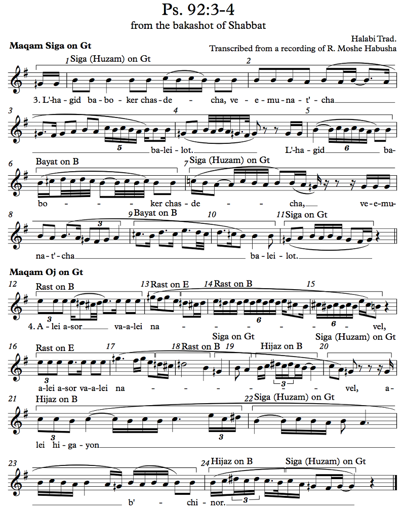Example 7.92
A couple of things jump out. The first is that the ajnas are... kinda wrong? The reason is that in the Syrian Jewish tradition, the specific maqam within the family is fungible. So the verse in Siga is really more in Iraq than Siga, though a much higher version, and the verse in Oj is more in Siga than Iraq. However, Siga begins on the tonic while Oj begins high, and that aspect of the two maqamat has been kept. You can see how the first jins of the Siga verse is Siga on the tonic, while the Oj verse begins near the octave.
What does "Siga (Huzam) on Gt" mean?
The Siga jins is a trichord — three notes. On Gt, those notes are Gt, A, B, with B as the ghammaz. But in practice, there's often a fourth note as a neighbor tone, and since that fourth note is a half step above the third, it calls to mind maqam Huzam. I thought this to be an important piece of the analysis, which is why I mention it. Some authors analyze the Siga family differently, with tetrachords instead of trichords, so the Siga jins is Ed F G A, the Iraq jins is Bd C D Ed, and the Huzam jins is Ed F G Ab. That's not a popular analysis, since the ghammaz is the third and the fourth note is really just whatever the upper jins requires. But in the case of the Huzam jins, it makes at least some sense because of thow much the fourth note really emphasizes the third.
The other thing that should jump out is that the notes... don't really sound like what I transcribed very much, do they?
Yeah, they really don't. How did you get these notes?
WITH EXTREME DIFFICULTY. Let me tell you, this was one of the hardest transcriptions I've ever done. It's actually really hard to tell quarter tones apart, and it's worse than that because it's hard to sing them precisely too. So I did something... a little crazy. I'm going to leave the math to a later chapter, but I'll give you the broad strokes.
First step: slow the recording down. This is generally a good idea when transcribing and you should do it. There are tools, but YouTube's playback speed setting is wonderful. You can slow things down to 0.25 speed, but that sounds distorted; 0.5 speed was perfect. It's useful to listen at full tempo for the feel of the rhythm, because you do lose it when it's slowed down, but for the notes, slow is best.
Second step: figure out the notes. I used the Offtonic Scale Keyboard's 24-TET scale to match the pitches the cantor was singing. But it was hard and very slow going, and it was worse because his pitch isn't perfectly consistent. I needed to know what the ajnas were, which requires quarter tone precision, but I really wasn't getting that reliably. This isn't a criticism of R. Habusha's singing; any human will do that, and Habusha sounds great at tempo anyway. But his vibrato makes it hard to know what pitch he's singing exactly. And even if I did find out, what pitch did he mean to sing? That's actually more important. I don't want to faithfully transcribe the sounds I hear; I want to transcribe the piece of music being sung, and if it's sung with human-level accuracy, well, I still have to find out what R. Habusha was trying to accomplish.
So I got frustrated and I decided I needed to do something more creative. I could use a tool (there are lots of them online) to get a sound file of the passage in question and make a spectrogram. First problem: I couldn't actually get any of the YouTube downloaders to work. I just needed a recording of a 90-second clip, but the ones that let me specify a time (so I didn't have to download a four-hour video to look at 90 seconds of stuff) were either actually malware or needed Flash or something. But maybe I could record my speaker output? Turns out there's a way to do that using Soundflower and Audacity. You can look that up if you're interested. So I was able to get my clip, actually about two and a half minutes because I recorded it at half playback speed to make it easier.
I was able to get that spectrogram. But I couldn't read it. There were wavy lines, but what pitches did they represent? There was no way to figure that out in Audacity. So I decided to run it through some free program to analyze melodies. Then I'd get the notes! I've seen this kind of thing done before. So I asked on Reddit whether anybody knew of such a tool, and I found one, Melodyne, which... is decidedly not free. If I needed to retune singers all the time, it might be worth the $99, but I don't. So scratch that idea.
But then... Creativity struck. I'm really proud of this one. I figured that if I can't get Audacity to make a grid, I'd make my own grid, with hookers and blackjack. Enter the Offtonic Comb Generator:
What this does is generate what is called a frequency comb: a bunch of pure frequencies, equally-spaced. (The Wikipedia link is to an optical frequency comb, which involves pure frequencies of light rather than sound, but the concept is similar.) You can pick a frequency for the low end and a frequency for the high end as well as a number of teeth, and the comb generator will generate that number of frequencies, evenly spaced. They're evenly spaced in pitch space, not frequency space, meaning that there is a constant ratio (or musical interval) between them. This means that if you pick a lower frequency of 440 Hz (that's A4) and an upper frequency of 880 Hz (that's A5), with 13 teeth, you'll have the chromatic scale from A4 to A5: A, Bb, B, C, C#, D, Eb, E, F, F#, G, G#, A, 13 frequencies.
What the hell is the point?
Ah, see, that's where this is awesome. Remember how I couldn't read the spectrogram?
I don't even know what that is.
Shit. Yeah, I guess not. Well, it shows all of the frequencies going on in the sound at any given time. We'll talk more about this in a later chapter, eventually. But the point is that if I add a bunch of specific frequencies that I know, I can use those as grid lines! Looks like this:
Example 7.93
So what am I looking at here?
Without going into too much detail, this is a log plot of frequency (in the vertical axis) over time (in the horizontal axis), with darker spots meaning more power at that frequency. So you can see that at time 1:57.5 there's more power at about 230 Hz or so, about 450 Hz or so, about 670 Hz or so, and so on. The lowest dark curve represents the notes Moshe Habusha is actually singing, and the other dark curves are the overtones — you can see that everything he sings has overtones at twice the frequency, three times, four times, five times, and so on. On a log plot, that means that the lines of overtones get closer and clsoer together, but they all go up and down by the same amount. Don't worry too much about the details for now; we will talk about them eventually. The thing we want to figure out is what notes that bottom dark squiggly line represents.
But that line is kinda blurry.
Yep. Annoyingly so. So instead of looking at the bottom line, which is blurry, I decided to look at the fourth line from the bottom, which represents the overtone exactly two octaves above the fundamental pitch Reb Moshe is singing. So if that represents a C6, I know that the actual note is a C4. How can I tell what the note represents? Here's where the comb generator comes in! You see those horizontal lines near the top? What I did was, I played the comb generator in one browser tab, I played the YouTube video in another at half speed, and I recorded it in Audacity using Soundflower. The effect was those lines you see, and they give me a great way to actually determine the pitch. The settings I used were 18 teeth from 660 Hz (E5 or thereabouts) to 1760 Hz (A6), which makes a chromatic scale from E to A. I modified the code a bit to make the white notes dimmer, so I can look and tell that the first sound here is an A since it's on a white note inside a group of three black notes. You know, just like a piano. Unfortunately, you can see that he rapidly oscillates his pitch throughout the solo, so it can be hard to tell what is vibrato and what are actually different notes.
The final step was to figure out what notes Moshe Habusha meant to sing given the notes that he did sing. His pitch isn't perfectly steady, but it's pretty close. Sometimes everything shifts up or down a quarter step or so. With 12-TET, it's not too difficult to tell what things were meant to be, but with the wider variety of intervals available in Arabic music, it's much trickier. I had to combine what notes I could tell he was singing with that the maqam would ordinarily use, and that's why it was kind of a difficult decision to analyze measures 6, 9, and 10 as Bayat on B, since they're not what I'm expecting in maqam Siga. I'd say the jury is still out on whether that's actually what he was going for there.
I guess the takeaway is that transcribing microtonal music is a huge pain, but with tools and creativity, you can get it maybe a little less wrong.
What about the rhythms?
...Uh... The what?
The rhythms. They're not really right.
Oh, um, those. Anyway, let's move on to the last family of maqamat:
You haven't answered my question.
Look, I kinda made them up, all right? They were hard to figure out, so sometimes I dropped notes or added extra ones, and some beats are longer than they should be and some are shorter. But I've been doing that with all of these transcriptions; did you really only notice now? That's actually the wonderful thing about this type of improvisation. The singer is free to do pretty much anything, rhythmically. Of course, people have strong opinions on this sort of improvisation when it's applied to, say, a national anthem (people really butcher the US anthem at sporting events) or some other meaningful song with a well-known melody.
That's basically all I have to say about the Siga family. It (usually) starts on a half flat and the primary notes other than the tonic are the ghammaz on the third and the sixth. The next family shares some of these features:
The Saba Family
Maqam Saba is... kind of weird, but it's also very distinctive. Unfortunately, it's also very similar to maqam Huzam. So it goes. Saba family looks like this:
Example 7.94
Maqam Saba has a very particular and distinct shape: jins Saba spans a diminished fourth, and the second jins is Hijaz on the third, making the two ajnas overlapping. There are all sorts of variant analyses for this maqam, though, so don't be too freaked out if you see something completely different somewhere. In particular, whatever happens above the jins Hijaz is up for debate. It looks like many people agree that maqam Saba does not actually span an octave, with the eighth degree the Db instead of the D. But that could be part of a jins Nahwand on Bb or Hijaz on C, or it could actually be the D and it's Ajam on Bb. Since the focus of the maqam is on the first jins, though, it doesn't quite matter. Jins Saba could be thought of as a modified jins Bayat with a lowered fourth degree.
Maqam Saba Zamzama has an Eb instead of Ed; the name of that note is Kurd, so this maqam is also called Saba Kurd. Similarly, E natural is Busalik, so if that note is used, the maqam is called Saba Busalik. That maqam is apparently very rare, and Saba Zamzama is also fairly rare. Regular Saba is fairly common, however, and we'll see examples. Saba Zamzama can also be considered a Westernized version of Saba. Note that the altered scale (also called superlocrian) begins with the same tetrachord, as does the half-whole diminished scale. Also, since the notes that vary in the upper jins are essentially the varieties of E (Eb, Ed, E), all three Saba scales are listed together in the Offtonic Scale Keyboard as simply Saba, with alternate versions of the second degree.
Maqam Tarz Jadid is apparently a new-ish maqam (on the same scale as ionian augmented or major #5, a mode of harmonic minor), and I included it in this family despite its first jins being Ajam because of the Hijaz jins on the third degree, which is one of the main features of maqam Saba. In this respect, maqam Saba is very similar to maqam Huzam. The only difference between Saba and Huzam is that the first and second degrees are raised a quarter step in Huzam versus Saba (Tarz Jadid is even more similar to Huzam). And whatever happens in the upper ajnas is presumably different too, but whatever.
In the Syrian Jewish tradition, maqam Saba is often sung high, on B or thereabouts instead of on low D. In the Arabic tradition, though, Saba is on D as a kind of modification of maqam Bayat.
Here's one of my favorite tunes in maqam Saba (though it can easily be sung in maqam Huzam instead by shifting the first and second degrees down a quarter step), Bar Yochai, sung by David Shiro's group whom we've heard earlier already. It starts at 1:52; the song beforehand is in maqam Huzam, though, if you want to listen to that. The excerpt I transcribed actually begins at 2:15:
Example 7.95
What happened to the upper ajnas? This one seems to go down instead.
Indeed it does. In fact, one could almost say that it's actually maqam Bastanikar rather than Saba. But if you listen a bit further, there are improvised solos that do explore the upper ajnas. The main part here, though, is the Saba jins on F#. I feel that this song gives a good feel for how that works. There's a lot of emphasis on both the third and the tonic; the motif in measure 2 is pretty characteristic, at least in the Syrian Jewish repertoire. Measure 4 is also great to look at because it runs the entire jins. F# to Bb is a diminished fourth, a dissonant interval, and that measure as well as the rest of the piece show pretty clearly how that works. Western music occasionally uses scales with a tetrachord that outlines a diminished fourth, and that works basically the same way. The b3 is stable, and the d4 is unstable, leading down to the b3. On the other hand, in the altered scale in jazz, 1 b2 b3 b4 is reinterpreted as 1 b2 #2 3, so the 3 is stable and the #2 is the leading tone. That is decidedly not the case here.
If you do some research into melodies for Bar Yochai, you'll notice that Example 7.95 actually consists of two separate melodies. In the recording, the chorus and verse 1 use the slow melody, verses 2 through 9 use the fast melody, and verse 10 and the repetition of the chorus use the slow melody again to end the song. Other recordings use just one of the melodies exclusively. Another nifty feature of the fast melody, which in general is more melodically static than the slow one, is that every other verse there's a cadenza (at least in this recording). Verses 4, 6, and 8 begin with the words "Bar Yochai" in the same melody as measure 22. Verse 2 begins with "Bar Yochai" still in the slow melody, as we see in measures 17 and 18. Well, verses 3, 5, 7, and 9 begin with an improvised solo on those words. This is the solo that begins verse 3 (from 3:22):

Example 7.96
In contrast with the primary melody, this solo has a much wider range. That's pretty normal, I'd say; things would get pretty boring if the solo kept the limited range of the melody the entire time! The solo takes the Ajam approach, as you can see in measure 3, but also interesting is the Ajam jins on A in measure 2. Maqam Saba on F# definitely has a Bb; that's not really negotiable the way the upper ajnas are. So Ajam on A here is a modulation; we're not in maqam Saba on F# at this point. We get back to it when we get to measure 5, which is the main hexachord of maqam Saba. These six notes define the maqam; what happens above or below is just embellishment. That descending scale is restated much more slowly in measures 6-8.
I recommend listening to the other solos and seeing if you can analyze their ajnas while listening; you'll learn a bit more about maqam Saba that way. By the way, if you're wondering, this song is talking about Rabbi Shim'on bar Yochai, legendary author of the Zohar, the central text of Kabbalah. I say "legendary" because it's pretty obvious that he didn't write it; the actual author was Moses de Leon in 13th century Spain, who claimed to have received bar Yochai's book in a dream or something, and even his own wife said that he made it all up, but by then the Zohar was already recognized as being by Bar Yochai. Also people light bonfires on Lag Baomer, 33 days after Pesach, because of Bar Yochai somehow.
As for us, we'll go back to Moshe Habusha's Ps. 92 one last time for the verse in maqam Saba, verse 7 (starting at 2:10:43):
Example 7.97
Oh wow, this is the best example of maqam Saba we've seen.
I know, right? It's pretty insane! It starts on the third, which is common (Bar Yochai starts on the third too, which is A, though the excerpt started on the E). It actually goes up to the lowered octave, unlike the solo we heard in Bar Yochai, and it explores both of the main ajnas of the scale, in this case Saba on E as the first jins and Hijaz on G as the second. I don't have anything to even comment on here, since we've already covered everything. The only brief note that I'll make is that eighth note quintuplets are actually not difficult to count. Of course, this solo is out of time; the quarter note is very much not constant. But even if the solo were in time, eighth note quintuplets aren't difficult to feel, which is why I don't feel like I'm doing something too outlandish when I use them like I do here. You just sing triplets but a little slower. No problem!
Now that we've listened to and analyzed each verse of Habusha's rendition of Ps. 92, it's time to listen to the whole thing (starts at 2:07:11 and goes until 2:17:17) and see if you can hear what we analyzed. And it might be nice too to look at other renditions (like this one by David Riahi and this one by some people) and see if you can figure out which maqamat are being sung. (If you can read Hebrew, the Riahi video actually tells you the maqam, so that doesn't count.)
Concluding Thoughts on Maqamat
That concludes the brief introduction to maqamat in the Syrian Jewish tradition.
I'm sorry, did you say brief?
Well, a fuller treatment would have been much longer. We only looked at a few examples, and furthermore we only looked at examples from the Syrian Jewish community of Aleppo. Maqam music is performed throughout the Arab world, and it's different wherever you go. This has really been a limited inroduction.
However, the tools we use for analysis of maqam music — the concepts of ajnas, the sayr, the ghammaz, etc. — are actually broadly applicable. It's useful to be able to think of a scale as a set of small independent scale fragments instead of one monolithic object. And furthermore, learning to hear quarter tones is the first step to breaking free of the equal-tempered chains of the Western system of 12 tones.
About that... How do I sing them? I kinda keep falling into the 12-TET notes I already know.
If you grew up with quarter tones, it's not too hard, but if you didn't, it can be quite challenging. Luckily, Arabic music mostly uses them in three different ways: as the third in jins Rast, the second in jins Bayat or Saba, and the root in jins Siga. If you practice singing these ajnas, you can hopefully get better at singing the quarter tones; that's what I've done and it's worked, pretty much.
The third in jins Rast should be between the major third of Ajam and the minor third of Nahwand. So if you sing Rast and then sing either one of those, you should notice a big difference. I tend to think of the neutral third as a very low major third rather than a high minor third (which incidentally corresponds with the practice of note Sikah, Ed, being a bit higher in Rast and Siga than in Bayat). One thing I find especially helpful is to practice these notes against a drone. Whenever there's some motor or fan or whatever going at a constant pitch, I try to harmonize and sing on top of it (or below it depending on how high it is), and I take these opportunities to practice my quarter tones since I can clearly hear my minor thirds and my major thirds, and I can tell that I'm singing the note in between them. I find that hearing the root of the jins in my head is extremely helpful for hearing the neutral third.
The second in jins Bayat always sounds to me like a minor second, but then I actually sing the minor second and there's a huge difference. Again, the idea here is to contrast the neutral second with the minor and major seconds, but it's a bit more difficult because of how much it sounds like a minor second. If you do some deep listening of the major second, you'll be able to tell when you aren't singing one, because that one's easy, and if you then sing the minor second, you'll hopefully realize that you were much higher. That said, there's actually a lot of room to sing the minor second lower than 12-TET while having it still sound like a minor second, so it's not so tight. And if the neutral second turns out a bit too low, eh, who cares? Just keep practicing!
The root of Siga is harder to get right, I think. Getting used to the sound by listening to pieces in Siga is essential for this one. Since the ghammaz is the third and there's a secondary emphasis on the sixth, I usually just think of the sixth as the tonic, so a scale like Ed F G Ab B C would sound to me like Rast (well, Suznak) on C, C D Ed F G Ab B C, just ending on the third instead of on the root. Your mileage may vary. I persoally have a hard time hearing the Ed as the tonic in that scale, though that might be my 12-TET speaking. Luckily, though, I don't have to, because Arabic music is modal, not tonal — that is, it doesn't (generally) organize itself around a tonic, but it does have a scale-based organization, in this case into ajnas. In any case, the way to get better is to listen to music that uses Siga ajnas and try to sing them too. It's not easy for a Westerner, but I believe in you. You can do it.
Are there other maqamat? What do you call the maqam with Ajam as the first jins and Bayat on the fourth as the second?
The maqam system is said to be an open system, meaning that new maqamat can be added. Whether they will sound good or not (and be welcomed as part of the genre) is a different question. While I described a goodly number of Arabic maqamat as well as some maqamat used these days only in Jewish music (like Nawa and Rahaw), there are a bunch of maqamat from Iraq of which some are just completely different, as well as Turkish makamlar and Persian dagstah that are similar to Arabic maqamat and are often borrowed into Arabic music.
There are even some obvious candidates. The lydian pentachord is not used in Arabic music; the closest equivalent is jins Nawa Athar, which goes 1 2 b3 #4 5. You could bring the actual lydian pentachord in, 1 2 3 #4 5. And what would happen if you played maqam Ajam on Bb but used an Ed instead of Eb? You'd have Bb C D Ed F G A Bb, which begins with this pentachord: 1 2 3 t4 5. This scale isn't outside the realm of possibility, but it's just not used. No reason why you can't use it in an Arabic way if you want! In fact, the t4 is one of the prettiest notes we have; in 24-TET, it's very close to the 11th harmonic. I think there's an opportunity here.
Speaking of 24-TET, should we use that or 53-TET?
Hopefully you'll remember what I said at the beginning of this section about 53-TET. It's the system used in Turkish makamlar, but Arabic music doesn't really use it; still, it's a useful approximation for how tuning works in Arabic music in practice. What I find very interesting is that the 53-TET tunings are (almost) all somehow less extreme than the 24-TET tunings. For example, in jins Hijaz, the minor seconds are widened and the augmented second is narrowed. As you go through the scales in the Offtonic Scale Keyboard and compare 24-TET and 53-TET tunings, you can generally see that the move to 53-TET makes everything a little more homogeneous, a little more evenly spaced. There are a few exceptions; the minor second in jins Kurd, for example, is actually lower than in 24-TET.
A one-comma difference is really almost imperceptible, being only about 22.6 cents, but it makes a huge difference when it comes to harmonies being in tune. Maqam music is generally not harmonic, though, so that's not much of an issue, but most intervals just sound better in 53-TET. What's cool about this is that this tiny difference really builds up. The difference between a 4-comma minor second and a 3-comma quarter tone is, of course, just one comma. Similarly, a 5-comma minor second and a 6-comma neutral second are very close, as are a 7-comma neutral second and an 8-comma major second. How different is a Rast jins from an Ajam jins anyway, if the Ajam jins's intervals go 9 - 8 - 5 and the Rast jins's intervals go 9 - 7 - 6? And if you look at the Rast (53-TET) scale, if you play the C Ed G chord, that sounds like a slightly out-of-tune major triad, but the Ed - G - Bd sounds like a minor triad! And it's not even out of tune! 53-TET is magic. We'll talk about this more in a (much) later chapter.
So why did we spend so long talking about maqamat anyway? Does this have anything to do with the Western music of... pretty much everything else in the book?
There are a few reasons why I decided to embark upon this journey. First, it's really good to get as much exposure as possible to music from outside your own comfort area. Maybe you love maqam music and this is exactly what you grew up with, but for people who didn't grow up with it, it's very different. And yet, we use the same music theory tools to talk about it. We talk about scales and scale fragments, which we can then apply to Western music too. Understanding maqam music a bit helps us look at any music around the world, including our own (whatever that may be), and understand that too. Second, it uses notes from outside the 12-tone scale. When I first encountered microtonality, it was incredibly mystifying. But once you actually play or sing some microtonal music, you can see that the world between the notes of the piano is just not that alien. It's cool, definitely, but 12-TET is actually a pretty good system even if it's missing some stuff. Third, and most importantly, it shows that the Western musical paradigm is not the only way to think. When some people see a scale, the first question they ask is what chords it has. That's not a bad question to ask, but maqam music doesn't use chords; its dominants aren't always the fifth; its tonic doesn't always sound like a tonic; etc. Looking for chords is an unproductive way to look at Arabic maqam music. So when you learn a new scale or even a new concept, your mind will be thinking of how this might apply to musical systems other than the standard major and minor scales of Western music. Your assumptions have been hereby challenged.
Now, this chapter is already too long. To be fair, it was already too long before we started talking about maqamat. But we still have more to go before we're done talking about modes and scales. Let's head back to our familiar 12 tones and discuss some other scales!
Other Scales
So far, we've looked at major and minor, modes of the diatonic scale, harmonic minor scale, and melodic minor scale, the pentatonic scale, symmetric scales, and even maqamat. What else is there? Well, the world of scales is... not unlimited (in 12-TET, assuming octave equivalence), but I guess it's pretty close, right? We could ask the question of how many scales there are. But that wouldn't necessarily be a useful question to ask: is a single note a scale? Really, we're asking how many possible subsets there are of the 12 chromatic notes, up to transposition. And the answer is actually easy: 2049. This is assuming that any subset can reasonably be a scale, including the empty set! So, without loss of generality, let's put the starting note on C. Now, since C is the root, any two distinct sets of other notes will have to yield distinct scales. For example, if you pick the other notes to be D E F G A B, you have C major. If you pick the other notes to be D E F G A Bb, you have C mixolydian. It could be F major too, but since we've decided that C is the starting note, only C mixolydian counts, and the two scales are different. They belong to the same modal family in that they both have the same intervals in the same order, but we're considering them to be different scales. So every subset of the 11 other notes will form a distinct scale; there are 2^11 = 2048 of those. Add the empty scale and we have 2049. Simple!
And who's going to compose something in a scale of zero notes?
John Cage, 4'33". Also, any music for unpitched percussion.
...Fine. But still, they're not all musically useful, are they?
No, they are not, but you know what, I'll leave that up to you to decide. There's a nifty tool to explore subsets of the chromatic scale, Ian Ring's A Study of Scales, that explores them in an interesting way, showing names, modes, rotations, and a bunch of features of scales that you may find musically useful or not. Wikipedia also has a list of musical scales and modes for your perusal.
Synthetic Scales
Scales other than the diatonic modes (and the pentatonic modes) are sometimes called synthetic scales, even though there's nothing particularly synthetic about them. Vincent Persichetti's wonderful book Twentieth Century Harmony, which I wholeheartedly recommend to anyone who wants to dive into music theory at more than a basic level, contains a list of synthetic scales. Those scales that I haven't already discussed are presented below and in the Offtonic Scale Keyboard (with some additions):

Example 7.98
It's definitely worth investigating the harmonic possibilities of these scales and whatever else you may dream up. The Neapolitan chord is the bII, so, for whatever reason, Persichetti calls scales with a b2 "Neapolitan". I'd personally call them "phrygian", but to each his own, I suppose. A few of these scales we've already seen under Arabic names, which I listed. Four of these happen to be modes of what I'm calling the whole tone+ scale, which is a whole tone scale with an added note (it doesn't matter which; the scale is symmetric). Neapolitan major is what happens when you start the scale on this added note; major locrian adds the 4, lydian minor adds the 5, and leading whole tone adds the 7. You could certainly add the b2, b3, or 6 instead and have other scales. In fact, you can take any of these and make modes out of it. Hungarian major is a bit interesting because it's actually the half-whole diminished scale without the b2.
The enigmatic scale is an odd duck. When I first saw it in Persichetti's book, I thought the name referred to its sound, which maybe someone thought was mysterious-sounding somehow. Turns out the enigma is more mundane: it was a challenge in a 19th century musical journal in Milan — an enigma for someone to solve by harmonizing this scale and composing something with it. Giuseppe Verdi did just that with his Ave Maria sulla scala enigmatica. The video has the score, and you can see that his harmonies are actually standard, but one voice of the choir constantly sings the enigmatic scale up and then down in whole notes as a cantus firmus — a slow fixed melody around which harmony and counterpoint happens. The scale itself is meant to be awkward, and for some reason it has a descending form that's different from the ascending form. It's supposed to be not very musical; it lacks a fourth and a fifth; it has an augmented second; it has consecutive semitones. I think Verdi's use of it as a cantus firmus is a total copout. That said, I think more modern composers would have no problem writing music in it, mostly because if it sucks they can just call it modern music and people will nod and marvel at the genius who could conceive of this music that their own puny minds can't comprehend but really it just sucks. Or it might actually be good. You try it!
As for the hexatonic Prometheus scale, we talked about it as a chord in the last chapter in the context of Scriabin's music, but it can be put to general use as a scale. Prometheus Neapolitan is just the b2 variant of the scale. Prometheus itself is a subset of whole tone+, where the + is the 6 and the #5 is missing, and Prometheus Neapolitan is a subset of the half-whole diminished scale (missing the b3 and 5).
While I'm kind of presenting these scales without much comment, there's a general approach to synthetic scales and understanding them. The puzzle here is how to compose good music (whatever that means for you) using these scales. A more traditional composer would just... not use them, probably, unless there was a good reason. I don't know much about Hungarian music, but I'm assuming it really does use the so-called Hungarian major and Hungarian minor scales in some way. I wouldn't call that "synthetic". The Western approach to new scales is to figure out what chords can be built from the scale degrees, where the leading tones are, how you can tonicize different bits of the scale, etc. The Offtonic Scale Keyboard is pretty helpful in doing this since you don't have to think about playing the right notes; you can just noodle around until you come up with something interesting. You can do this to figure out what notes are stable, what notes are dissonant, etc., since that's going to vary from scale to scale.
The other thing you can do is create modes (in the sense of starting the scale on a different note) out of these scales. The scales labeled oriental, double harmonic, and Hungarian minor are all modes of each other, as are obviously the whole tone+ scales. But you can play the modes of any of these scales if you feel like it.
Most likely it will be difficult to structure an entire composition around one of these scales. There are reasons why the Western world has coalesced around major and minor and not, say, the enigmatic scale. On the other hand, it's probably not too difficult to pull it off for just a couple of measures of a larger work, where dissonances can be resolved in a different scale.
Other Pentatonic Scales
Shifting gears a bit, Persichetti also lists some pentatonic scales. These are used quite a bit in Japanese and Indonesian music, and they're awesome. The names, though, are a bit confused. Persichetti's names are not necessarily the right ones, but people don't entirely seem to agree, so take the names with a grain of salt. We've already seen the pentatonic scale (1 2 3 5 6 and its modes) several sections ago in this chapter, so here are four more usable pentatonic scales, built on a similar formula, along with their modes:
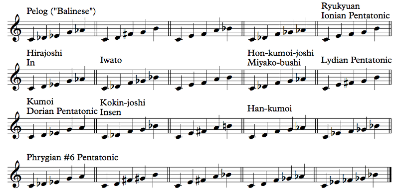Example 7.99
I put only the first mode of each of these scales in the Offtonic Scale Keyboard, but you should be able to play the other modes easily from that; the names I used are Balinese, Hirajoshi, Kumoi, and Phrygian #6 Pentatonic.
Why not dorian pentatonic?
It was taken. This scale is much more dorian pentatonic than the 1 2 4 5 b7 scale that has the name now, but what can ya do.
The diatonic pentatonic scale (1 2 3 5 6) has just two types of steps: 1 to 2, 2 to 3, and 5 to 6 are major seconds, and 3 to 5 and 6 to 1 are minor thirds. These scales, on the other hand, have a richer variety of intervals. The Balinese scale (which Persichetti calls Pelog, but Wikipedia calls other scales by that name) has two minor seconds (1 to b2, 5 to b6), a major second (b2 to b3), and two major thirds (b3 to 5, b6 to 1). Hirajoshi has the same intervals, though the minor second is from 2 to b3 and the major second is from 1 to 2. Kumoi has a wider variety, with both a major third and a minor third, and phrygian #6 pentatonic is similar.
The other intervals are also interesting. Notice how the diatonic pentatonic scale is well-behaved; it has fourths and fifths but no tritones. The Balinese scale does have a tritone, b2 to 5; Hirajoshi has 2 to b6; Kumoi has b3 to 6. While the diatonic pentatonic scale is the diatonic scale minus the tritone, the characteristic tritone is preserved in these scales. The odd one out, for which I'll have to admit right right now that I made it up myself, is phrygian #6 pentatonic, which only has a name because I needed to put it into the Offtonic Scale Keyboard somehow. This one is not a subset of the diatonic scale. It seems like it has similar intervals to the other scales so it should be OK, right? But no. It has two tritones, b2 to 5 and b3 to 6, but that doesn't matter; we love tritones, don't we? No, the problem is the augmented fifth from the b2 to the 6. That is a killer.
I made a special point of talking about these pentatonic scales because the Japanese and Balinese music that uses them is often atonal, using these scales without a central pitch at all. This makes all of the modes equivalent, and it makes it so that if multiple pitches are tonicized, that's... actually nice; it doesn't destroy the feeling of the mode. That said, some positions do come up more often. Lydian pentatonic, for example, is often used in creepy music in Japanese videogames. Iwato and Insen are more... traditional-sounding, in a way. I hear them in settings that are traditional Japanese. (As a jazz chord, Insen is the susb9 phrygian chord; we talked about this in the last chapter.) Let's hear some examples, shall we?
The first example is a short theme from Hirokazu Fukushima's Chant for "DOSOZIN" (the clearest statement is at about 3:42):

Example 7.100
The piece also has various motifs in this scale, but most of the time, the piece doesn't stay in the scale. I'm going to blame it on Western influence...
...Specifically, the Western influence that led to the creation of Japan's wind ensemble program, which was based in large part on the band program in Florida. One of my band directors in high school was actually involved with it (he left partway through to run a publishing company to distribute the music of Japanese wind ensemble composers in the US, including this piece), and Frederick Fennell himself went to Japan to work with the Tokyo Kosei Wind Orchestra and raise the profile of the wind ensemble medium in Japan. We got to play a lot of great Japanese music in high school. On the downside, we got to hear about these bands of 6th graders that could play our music better than we could, and we were one of the top wind ensembles in the state. And we got to hear about how Japanese schoolchildren clean their own school and we don't, how they have respect and we don't, how they practice and devote themselves to the ensemble and the music and we don't, etc. You know how that kind of thing goes. But the music, top notch.
This particular excerpt is short, but I think it well captures the spirit of ionian pentatonic. You definitely hear the tritone outlined. You also have an interesting feature that we'll see in other Japanese pentatonic music, which is that the note that you might think is the leading tone doesn't actually resolve to the note that you might think is the tonic. In this example, it's the F#. The low F# at pickups to 1 and 1 itself does go up to the G, but the high F# goes down, not up, at 2 and 3. You could argue that the F# at 2 does resolve up to the G at the end of the bar in a somewhat delayed resolution, but I don't hear it that way because the D in between them is the half cadence of the phrase. The F# resolves down to the D and concludes the first half, and then the G begins the second half with a new thought.
This example is also entirely tonal, with G as the clear tonic. The next example is less so, and it's the most famous Japanese folk song known around the world, emblematic of Japan similarly to how Arirang (Example 7.38) is emblematic of Korea, Sakura Sakura (here's a recording):
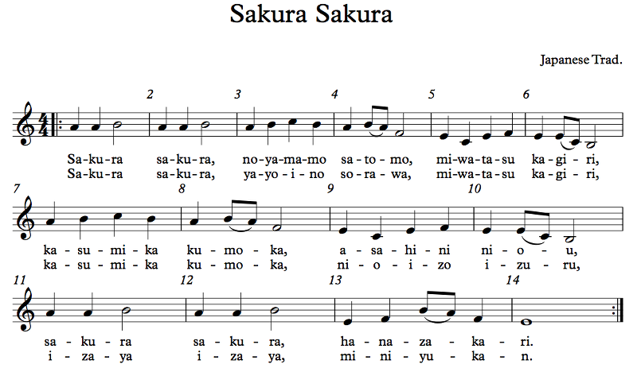Example 7.101
This song is in the In scale, but not in a particular mode of it. Taking the scale here as A B C E F, the tonal center appears to be A at the beginning, but the cadence is to F. I think the F resolves to the E at measure 5, but then that cadence is to the B, which resolves to the A an octave up at 7. The final cadence is to E. You could see this as E F A B C or A B C E F or something else. The music doesn't clearly choose one.
Is the last syllable just an N?
'Tis. The Japanese language works on a system of morae (called on in Japanese), not really syllables, where some syllables are actually counted as two morae in poetry and speech. The N sound is its own on, but not its own syllable. In Yiddish, consonant sounds like N and RL also get their own syllables sometimes.
You can also get atonal in the Balinese scale. These pentatonic scales are sometimes used in videogames for extreme creepiness. I won't transcribe these examples, but you should listen to them. One example is in the Balinese scale, and it's the extremely unsettling Celebration, from Hiroki Kikuta's soundtrack for Secret of Mana. The other is in the In scale, and it's the also extremely unsettling Lavender Town, from Junichi Masuda's score to Pokémon Red and Blue.
WTF, man. Y u do dis.
The Secret of Mana track was direcly inspired by Balinese gamelan music. I don't think gamelan music is particularly creepy in general, but if you've played Secret of Mana, which despite the horrible, horrible magic and leveling system is actually a fantastic game (well, the setting is fantastic), the particular situation for this so-called Celebration is CREEPY AF. I don't want to spoil it, but... About Lavender Town, I actually haven't played Pokémon (yeah, I know), but my understanding is that Lavender Town is noted for its graveyard. The common link between the settings for these two pieces is that they're both heavily influenced by Japanese mythology and also very dead. This is not your Western scary music.
I could go on with the videogame music. For example, Golden Sun 2's Izumo in Despair uses the Insen scale, and it's also definitely meant to be a Japan-like town (the other towns in the game are modeled after other places). I have to say, I didn't really like Golden Sun much, but some people do.
One more example of these Ja(v|p)anese pentatonic scales, which I've transcribed below, is something I've been looking forward to all chapter: Super Mario Odyssey's Bowser's Castle 2 (I'm not sure who composed this one in particular, but composer credits are shared between lead composer Naoto Kubo, Shiho Fujii, and the great Koji Kondo). The setting here is amazing, and I don't want to spoil it if you haven't played it (which you should). The excerpt below is from the brutal flute feature (well, shakuhachi). If you think of flutes as meek and charming little instruments, I got news for ya:
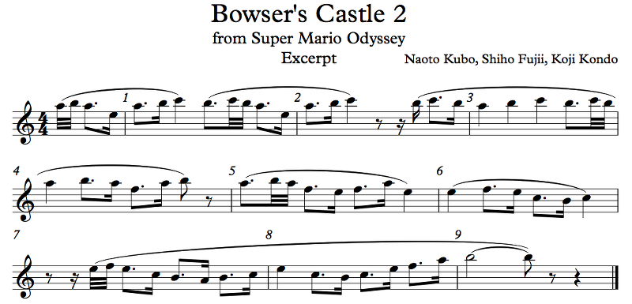Example 7.102
This one's also not very tonal, but the rest of the piece, especially the brass, makes it clear that the tonal center is really E. Listen to the harmonies as well and see if you can figure out where the points of stability are — thanks to the use of harmony, they change. In the first two bars, the stable point is A; in bars 3 and 4, it's F (thanks to the F major harmony). Measure 5 can't really harmonize with the G in the harmony since that's not in the scale; bar 6 runs with that dissonance and heads towards the B in measure 7 despite the harmony being F; you could argue that C is the most stable in that measure. In measure 7, we get back to the tonic chord, E, and the melody just noodles around it, with B and E as stable points.
I mentioned harmony, and that's actually quite relevant because, unlike Arabic maqam music, Japanese pentatonic music is harmonized. (Balinese gamelan music... Different situation there entirely. You should do your own research into it if you're interested; it's fascinating.) The scales provide a multitude of options for interesting harmonies as well as fourths and fifths. In the In scale we've been playing with, E F A B C, E can be consonantly harmonized with A or B; F with C; A with E; B with E; C with F,. The diatonic pentatonic scale has similar harmonization potential; in a C D E G A scale, you have C with G; D with G or A; E with A; G with C or D; A with E.
We dived fairly deeply into the Arabic maqamat, but we've barely splashed the surface of Japanese traditional music. If you're interested, you should do your own research. What I think is cool is the different conceptions of modality we're seeing; in the Japanese music we've listened to, the concepts of tonic and dominant that we've seen in other musics is secondary to the scale itself. Compared to that, gamelan music is... different. Different from anything else we've seen. As different as a starfish is from a fish. I strongly encourage you to learn a little about it.
Gregorian Modes
Shifting gears a lot, let's talk about the ancestors of our Western major and minor modes, the Gregorian modes. There are some misconceptions about these, mostly due to the fact that they are not the diatonic modes we saw near the beginning of this chapter despite having the same names and scales.
Wait, what? This distinction sounds exceedingly academic.
It's really not, and you'll see why. Here are the modes:

Example 7.103
Of these, modes I through VIII were actually used in Gregorian plainchant, which was monophonic — just one melodic line, with everyone singing exactly the same thing together. To be clear, "Gregorian" refers to a specific canon of chants said to be recorded by Pope Gregory I; the generic term for the musical form is plainchant. Polyphony came later and was instrumental (get it?) in collapsing these eight modes to just two, major and minor. Which were not part of the original eight. The system was extended in Renaissance times to include fourteen modes basically to be consistent, but the modes that were actually used were the first eight. The odd-numbered modes are authentic and the even-numbered modes are plagal. We've talked about the distinction at the start of the chapter.
What are the letters? And the flats?
The letters are what really define the mode. The F is the final or finalis, the equivalent to the tonic of more modern Western music. The T is the tenor (also dominant, cofinal, recitation tone), and it's the secondary point of stability in the mode, much like the ghammaz of maqam music. The word "tenor" comes from "tenere", meaning "to hold", and the idea is that when there's a long line of text to be chanted without a melody, it's chanted on this note. The M is the mediant, the next level in the hierarchy of stability before the tenor, and the P's are participants, functioning as auxiliary tones. It's important to note that everything other than the final is ex post facto — it was thought up by theorists analyzing melodies written in these modes, not necessarily by the plainchant composers themselves.
As for the flats, in some modes, B can be flat. The Gregorian scales in the Offtonic Scale Keyboard have these notes when the root is C. No other accidentals are allowed in the traditional plainchant. Later on, the F# was also added, and eventually flats and sharps became a common feature, but in Gregorian plainchant, it's B flat or B square.
Ha ha ha. Your puns are idiotic.
Funny you should say that (ha ha ha) because "B square" is literally what B natural was called in some languages; the natural sign in Portuguese, for example, is called a "bequadro". B flat was denoted by a rounded b which evolved into the flat sign, and it was known as the soft B, and B natural was a b written in a more square-looking font, known as the hard B. German-speaking people apparently thought this square B looked too much like an H, so to this day, B is the German name for the note we call B flat and H is their name for the note we call B natural.
So wait, if the lydian mode used Bb, what differentiated it from major?
Very good question. The main difference is that lydian existed and major did not. It was called ionian, not major. Ionian also didn't exist. The other difference is the ambitus, or range. There was no Bb lydian or D lydian or whatever; there was just the lydian mode and it was on F. And the hypolydian mode, which was also on F but had a different ambitus. Music in the lydian and hypolydian mode always ended on F, the final. This actually made the lydian mode somewhat cheerier than, say, the hypodorian mode, which had a much lower ambitus, way down from low A. I wrote these modes in treble clef, but I probably should have used bass or tenor clef since these were mostly sung by men. Except when they were sung by women, because Catholics have nuns.
Now, Gregorian chant and similar plainchants were originally written in an ancestor to the music notation we use today called neumes. I'm not going to explore them in depth here, but you can check out this guide or a book called Chants of the Church published by the Gregorian Institute of America, of which you can find a PDF here and many more resources at musicasacra.com, the website for the Church Music Association of America (CMAA). Reading neumes is surprisingly easy, and people do still read them today.
They even make things easy for us, who are trying to analyze the modes in plainchant. At the start of a modal piece (which not all chants are, by the way), the number of the mode is usually printed (I for dorian, II for hypodorian, etc.). Again, I should emphasize that Gregorian plainchant has only eight modes; the other six are more recent (Renaissance-era) extrapolations, which you should still know about but not in the context of the traditional plainchants. And even then, not everyone accepted locrian/hypolocrian as modes, so modes XI and XII were sometimes ionian and hypoionian, respectively. Oh, and at some point people tried to renumber the modes and rename them for some strange reason, so things got even more confused. Check out this video on Modes in the 16th and 17th centuries by Early Music Sources for the story. But when it comes to the Gregorian plainchant we're looking at, there were the eight and that was it.
The CMAA website has a very interesting book, labeled Textbook of Gregorian CHant, by Dom Sunol (1930) (look under Teaching Aids, For general use), which, on page 40, has singing exercises in all eight modes. There's also quite a bit of theory regarding the Gregorian modes, as you can see from the selection of books available on that website, which shows that the situation is not quite so simple as the eight modes make it out to be. There is the possibility of transposed modes, allowing A, B, or C to be the final (yes, even B), as well as modulation. And since the chants generally have the modes actually listed, they leave the guesswork out of figuring out which mode it's in, which also means that the piece may not match the mode number exactly. The hierarchy of final, tenor, mediant, and participant is theoretical rather than practical, and different theorists may disagree on how to properly analyze the chants, so they aren't necessarily evident in pieces in a particular mode.
Let's look at some examples. In these examples, I'm taking the notation from the book I mentioned above, Chants of the Church, which may not be exactly how the chant is performed, especially in terms of rhythm. In fact, if you look for examples yourself, you'll see that quite a few performances of these chants add harmonies and polyphonies. There's a very long tradition of harmonizing plainchant, but then it's no longer plainchant, is it? I've tried to find non-harmonized examples in each of the eight modes. We'll go in order.
So let's begin with Mode I. This is a chant for Ave Maria:

Example 7.104
As you can see, it ends on D, the final of the mode. However, unlike the modern dorian mode, the Gregorian Mode I has no problem with the Bb, as you can see in the first measure, but neither does it have a problem with the B natural, which appears in measure 7. It's also useful to look for uses of the tenor, A, and the mediant, G. We see the tenor in play in the first three measures, with the A as a recitation tone that keeps recurring (measures 1 and 2); the G leading to the D in measure 3 demonstrates the role of the participant. On the other hand, the F sounds more like a recitation tone for the rest of the piece other than measure 7, playing the role of mediant. So the chart in Example 7.103 is pretty much useless as a prescriptive table, but it does analyze real musical phenomena that are simply not quite ubiquitous.
Next is Mode II; this one is Maria Mater gratiae. You can see the neume notation in the video; the links above will easily show you how to read it (it's really not complicated):
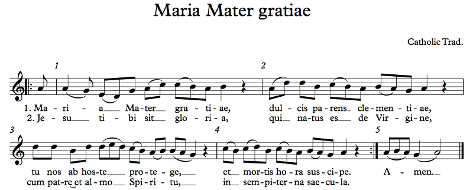Example 7.105
Hey, this is A minor — it's aeolian! Or hypoaeolian, I guess. I thought you said that mode didn't exist in Gregorian chant?
Well, you see, it's actually in hypodorian, transposed up a fifth. (The video sings it a bit lower, actually, but that's OK.) Hypodorian goes very low, so in the chants I've seen, it's most commonly transposed up. This makes the final A, tenor C, and mediant B. The C is used as a leading tone to the D, a participant. The C isn't doing much tenoring, except at measure 4, I guess; the mediant is used for the half cadence in measure 1. Note also that, despite the fact that this is plagal dorian, the melody rarely actually goes below the final. This is OK; the center of activity is above the final here, but only just; in our authentic dorian example, the nexus was a few steps higher (relatively speaking, anyway).
Why are the measures so long?
Gregorian chant actually has four different kinds of bar line, to denote different levels of separation (a feature it shares with Jewish cantillation of the Tanach, by the way, though obviously it works differently there). You can see three of them in the video, the half bar line, the full bar line, and the double bar line. There's a fourth one that's even lighter than these three, which is just a hash mark on the top line of the staff. Well, other than these, plainchant is not measured. There is rhythm, and the resources I linked above will explain how the rhythm works in far more detail than you want to know, but the meter is free. So I added bar lines where the original notation puts them, but there wasn't really any opportunity for more bar lines than that because the phrases in this chant are long and unbroken.
Here's Mode III, with a hymn called Pange lingua:
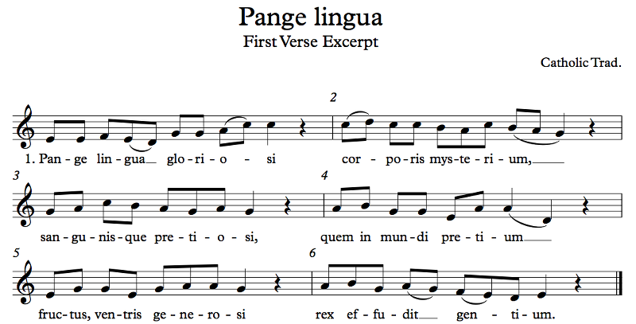Example 7.106
Phrygian has the final on E, tenor on C, and mediant on G. We can actually see these in evidence in this melody. Why the C and not the B? Because B, as a note, is unstable — it could be Bb, which is dissonant against the E, or B natural. Where else have we seen an variable B?
The Bd in many maqamat is variable. Is that what you meant?
That's right. If you go through the list of maqamat, you'll find quite a few where the B changes depending on whether it's ascending or descending, like maqam Bayat and maqam Rast, just as basic examples. In maqam Siga, you'll recall that the Ed is the tonic, the G is the ghammaz, and the C is a secondary center — essentially, G is the tenor and C is the mediant. Well, the same thing is happening here in the phrygian mode, except with the roles of tenor and mediant switched, which is an academic distinction anyway. Of course, we don't analyze Gregorian chant with ajnas the same way we analyze maqam music (there are still tetrachords and pentachords similar to what we saw way back in Example 7.10, but they don't play the central role that ajnas do in maqam music), and the character of these melodies is decidedly different from the character of the Arabic melodies we heard. Also, Gregorian plainchant doesn't use quarter tones. It probably should; that would have been cool. But it doesn't.
For Mode IV, there were actually a few chants with B as the final. This isn't one of them, but be aware that it's a possibility! This is Subvenite Sancti Dei, from the funeral service:
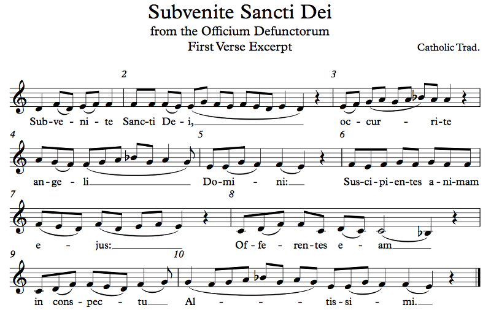Example 7.107
You may have noticed that the video is a fourth higher. You know why? Because the music goes too low, and the guy in the video is singing by himself, so there's no need to match anyone else's pitch. I transcribed the original chant (well, the one in the book, anyway), not the recording.
Mode IV has the final on E, tenor on A, and mediant on G. We can see the tenor behavior in measures 3 and 4. On the other hand, the modal behavior is less clear from 8 to the end. If you didn't know that this is mode IV, you wouldn't know that the final was going to be E. In tonal music, that doesn't slide, but in modal music there's no issue. The mode is defined by the ambitus and the final; the ambitus is low and the final is E, so this is mode IV and there's all that needs to be said. In tonal music, we'd be talking about what notes have what tendencies. The low B goes up to C then D then E; the high B goes down to A, G, F, and E. But this isn't tonal hypophrygian; it's modal. And that means that measure 8, which could really be centered on C, D, or F if this were tonal, or even Bb, is still legitimately in this mode. Later music would never allow a cadence on Bb in a piece whose tonic is E, but it's totally legit in Gregorian chant!
What about Rule 0?
Well, what about rule 0? You can do whatever you want in music. That doesn't mean that church composers also had that freedom. In fact, church music had to be accepted by a range of authorities, and on occasion even the Pope himself weighed in. There were movements to unify modes, reduce melisma, change rhythms, stuff like that, because the authorities wanted the church music to be a certain way. Interestingly enough, when J. S. Bach was a church organist in the 18th century, in Protestant Germany (well, it wasn't Germany yet, but still), he did get to Rule 0 all over the place, and we ended up with his brilliantly chromatic church music that would have made Pope Gregory roll in his grave.
Which Pope Gregory?
All of them? I don't know. I'm Jewish; give me a break. We didn't study Papal history in Hebrew school!
Next, Mode V! This is Tantum ergo:
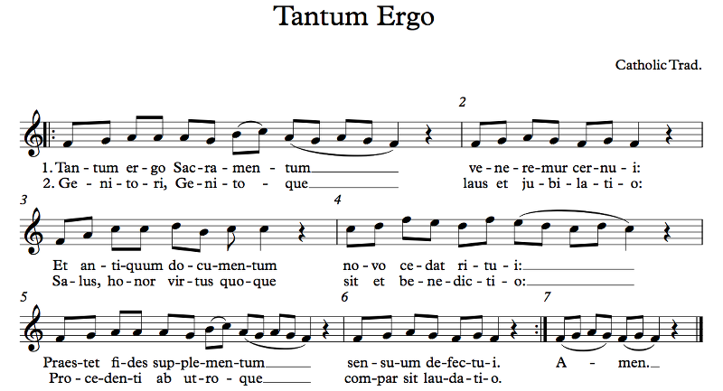Example 7.108
This is pretty similar to modern lydian, honestly. Final is F; tenor is C; mediant is A. And that's basically what happens. Piece goes to the mediant then back down. Piece goes to the dominant. Piece repeats the first bit. But remember that the B is variable, so while this particular piece uses the hard B, other pieces in this mode can certainly use the soft B if they so choose.
Another interesting aspect of this piece concerns the text. The other pieces we've seen so far have groups of 2 and groups of 3, but this piece only has groups of 2. The text is very clearly trochaic, meaning that it has a strong-weak duple pattern. The music mostly keeps this pattern, except that it makes the final syllable of the first half of each line also a strong syllable. Interestingly, the first and third lines of each verse are identical in melody, but the second line has a different melody and rhythm despite having a text with exactly the same metrical and rhyming patterns as the other two lines of each verse. Finally, if this were tonal music, measure 4 would have been a modulation to the dominant; in Mode V, though, that's just the way things go!
Here's an example of Mode VI, Laetabundus:
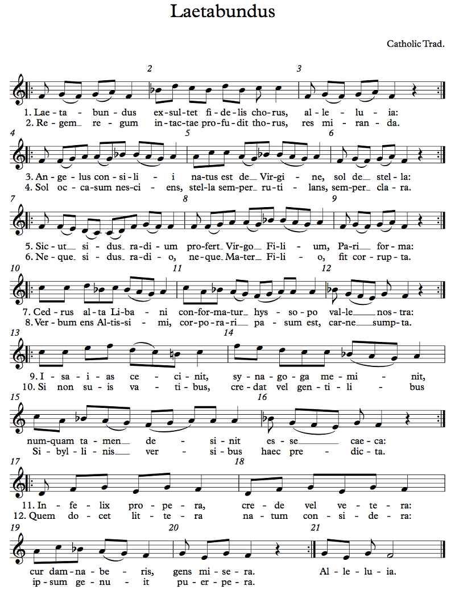Example 7.109
I like the structure of this one; it's in couplets, each one with the same melody for both lines. Every line ends with a short phrase; the first eight verses have two stichs before the short phrase at the end, and the last four have three. This kind of variety and symmetry allows for some music that's not as repetitive but still unified.
As for the modal characteristics, Mode VI has the F as the final — yep — the A as the tenor — not really — and the D as the mediant — definitely not. Only verses 5, 6, 11, and 12 even approximate this structure, and we go right into Mode V territory with the high F's in verses 9 and 10. So why is this in Mode VI? Well, because it says so. Also, the ending of the piece is the most significant part when it comes to determining mode, and that section of the piece, which consists of verses 11 and 12, really is in the mode advertised. What this shows is that there's actually considerable freedom in plainchant; one can even modulate, though this doesn't involve changing any notes since the scale is set.
Next is Mode VII, and the piece is Ecce panis Angelorum:

Example 7.110
This hymn's structure has four stanzas; the first two have 3 + 1 lines each, and the last two have 4 + 1. There are two main things that set the last line in each stanza apart. The obvious one is the rhyme; the other lines rhyme with themselves, but the last line in each stanza rhymes with the other last line in the stanza pair. The other thing is the meter; the other lines have eight syllables while the last lines have seven. This changes the emphasis of the final syllable; the other lines end on a weak syllable while the last lines end on a strong syllable.
In terms of mode, this is pretty similar to our modern mixolydian mode. The final is G, tenor is D, mediant is C (not B because B is unstable). The tenor/final relationship is very clear here, with the cadences all either on D (half cadences) or on G (full cadences). The D is stable but unresolved; the G is the resolution. Also note the role of the F as leading tone, a note that is also called the subfinal or subfinalis; the authentic modes have an ambitus where the lowest note is the final, but the subfinal is routinely used in modes I, III, and VII, though not V for some reason. In this piece, F major triads are outlined before some cadences, and G major triads are outlined at the start of some phrases. Don't be mistaken: triads did not exist at the time of this music. Even major thirds were not considered consonant.
Major thirds? Why not?
Take a look at the Gregorian scales in the Offtonic Scale Keyboard. I included three tunings: 12-TET, 53-TET, and Pythagorean. Now, 53-TET was certainly not used in the era of plainchant. The mathematics hadn't even been developed yet. In fact, the mathematics for 12-TET is the same, so it hadn't been invented yet either, not to mention that 12-TET makes no sense in a system with only 7 notes (well, one was variable). What people did understand were perfect fifths and fourths; a perfect fifth has a 3/2 ratio and a perfect fourth is the ratio between that 3/2 fifth and the octave (2/1 ratio), which is 4/3. If you build a scale based on these ratios, you're using Pythagorean tuning. While Gregorian plainchant wasn't necessarily tuned very precisely (they didn't exactly have electronic tuners available), the tritone was considered melodically dissonant (no, not the Devil's Interval; we've talked about this in Chapter 5), and the variable B was meant to turn that tritone into a fourth or fifth depending; E to B is a fifth, and Bb to F is a fifth. This means that you can create a circle of fifths using these notes: Bb → F → C → G → D → A → E → B.
That ain't a circle.
No, not in modern terms. But Bb and B were two versions of the same note, so if you loosen your standards a bit, yeah, that's a circle.
The upshot is that the major third sounds terrible in this tuning. You can try it yourself. If you play the 12-TET version, you get the ordinary slightly-out-of-tune major third, which sounds OK in a major triad, but if you play the 53-TET or Pythagorean versions, it sounds pretty bad. In order to make the major third sound consonant and playable, you need to use the 5/4 third we talked about back in Chapter 5 instead of the Pythagorean third. But then you have a problem, because C → G → D → A → E is now no longer a chain of perfect fifths. There have been many solutions proposed, all of them compromises between keeping an in-tune perfect fifth and an in-tune major third. 12-TET is a particularly great compromise for a number of reasons. 53-TET doesn't work at all for this because it's so damn close to Pythagorean; I honestly couldn't notice a difference when I switched between them (but I checked the frequency values and they are different, so I know it's not a bug). If you drop the major third by a comma, which is called a syntonic comma in Just Intonation but it's just one step in 53-TET, you get the nice-sounding 5/4 major third (check maqam Ajam in 53-TET), but you still lose the chain of fifths. When the major third became consonant, detuning the fifths became a valid compromise. Before then, there was no reason to do so.
Anyway, we now move on to the last mode, Mode VIII; this piece is Veni Creator Spiritus:
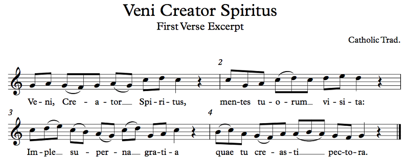Example 7.111
Doesn't really sound plagal, does it? But the final of Mode VIII is G, tenor is C, and there are two mediants, F and A. The fact that we have two cadences on C suggests C as the tenor rather than D, despite the one cadence on D. To our ears accustomed to tonality, the first three phrases strongly suggest C as the tonal center, but we have to remember that plainchant is not tonal; this chant ends on G and therefore it's in either Mode VII or Mode VIII. And Mode VIII is what's written, so that's what it is; pretty simple, really! Actually, some chants in Mode VIII do have C as the final; they are in a transposed version of the mode.
Since motion by step was the norm in plainchant, we can also classify the modes by what happens immediately around their finals. D, G, A, and C have a whole step on either end (taking A - B and Bb - C), E, A, and B have a whole step below and a half step above (taking A - Bb), and F and C have a half step below and a whole step above (taking B - C). This neighborhood is one of the defining features of the modes in plainchant, and it's why transposition works. There's really no difference between ionian and transposed mixolydian, since mixolydian uses B rather than Bb; so long as you use the Bb in the transposed mode, they're the same. Later theorists and composers did want the new scale that results from the intervals of the ionian mode, though, so the introduction of ionian was not just a formality. Similarly, aeolian is just transposed dorian without the option of using B natural, using only B flat. Locrian is a different animal, though.
I just want to clarify something about the hypolocrian mode. If you look back at Example 7.103, you'll see that the top note of this mode is a G, skipping the F entirely. You may think it's a typo. It looks like a typo. But it is not. Theorists didn't want the top of the ambitus to be such a dissonant tone. That said, the locrian and hypolocrian modes were the last modes added to the eight-mode system, and I don't know how much it was actually used in real life.
For completeness's sake, here's a piece in Mode IV that has B as the final, from the Easter mass, Sanctus (Lux et origo):

Example 7.112
If this were tonal, which it's not, but if it were, it would clearly be in G major (well, G mixolydian, but same thing). It's just that the cadences are mostly on B. Just going through, the cadences are on G, G, B, B, G, B, D, B, B. If it weren't for the final cadence on B, this would be Mode VII. But the final cadence is on B, so it's Mode IV, transposed. Why IV? Because B is similar to E in that there's a note a whole step down and a half step up, and E is the only final with this property of the four possibilties (D, E, F, G). Why not III? Well, that's easy: the melody spends a lot of time below the final.
There's much more we could discuss about plainchant. The resources at the CMAA site I linked above discuss it in quite a lot of depth, if you're interested. There's much more we could discuss about the Gregorian modes. There's even more we could discuss about the transformation from modality to tonality, which took place over a few hundred years around the Renaissance, involving modal polyphony at first and coalescing those rules into the behaviors we're familiar with in tonal music. We may even do this much later on once we understand how tonal polyphony works. It's frankly fascinating. For now, though, we must end our catalog of modes and scales. There's much, much, much more out there in the world. We briefly mentioned Balinese/Javanese music; the inventory of notes used in gamelan music in those cultures is completely unlike what we've talked about so far. Indian music, both north and south, is also an enormous subject that involves a wealth of modes called ragas that are far more than just scales. We talked about Arabic maqamat, but Iraqi maqamat are different, as are Turkish makamlar, Persian dagstah, the shashmakam system of central Asia, the weird microtonal scales of Eastern Europe (look up Istrian music), and, speaking of microtonal scales, there's a literally unlimited number of possible scales if you admit microtones, and there are even scales that ditch octave equivalence altogether and use the tritave instead, like Bohlen-Pierce. The tritave is a ratio of 3/1, which in usual terms is about a perfect twelvth (an octave plus a fifth). The range of musical materials that is possible is unlimited.
Using Scales and Modes
We've spent a lot of time (a lot of time) talking about aspects of different scales and modes, much of it in one specific and isolated context: pieces that are in a mode. What does it mean for a piece of music to be in a mode? It means that the piece follows the rules and conventions of the mode, whatever it may be. For example, a piece can be said to be in maqam Oj if it has a Siga jins on its tonic and a descending sayr. A piece is in major if it uses the relationships of the major scale. But... what if it's not? What if it doesn't observe the rules of a mode, or observes only some of them in some contexts, or some combination?
Modal, Tonal, Atonal, etc.
A piece of music can have a number of different relationships to a mode or a set of modes at different scales. Scales as in time scales, not musical scales.
Uh... Huh?
I guess I worded that really oddly. So let me just tell you what I'm talking about. There are several ways to describe these relationships. The first two, which we've mostly used in this chapter so far, are modal and tonal. A piece that is modal is in a mode, and a piece that is tonal is in a mode that's organized around a tonal center. This last one is a bit contntious given how Western music has traditionally been taught. Students who study the Western classical canon sometimes tend to see music as a kind of progression, from the primitive plainchant of the Gregorians in a pretty much straight line to John Cage's 4'33" and its 20th century ilk. At the beginning, it was one voice, and then people started using two voices in parallel fourths or fifths; then polyphony happened, and tonality happened, and Bach and Mozart and Beethoven and Mahler and Stravinsky happened, in that order, and then Schoenberg took away tonality and he with his modern composer buddies invented serialism and musique concrète and graphical scores and whatever passes for music these days, freed from the conventional chains of musical form or taste to be truly modern.
Graphical scores?
Don't ask. Though to be fair, even Bach did that a little in his Musical Offering.
The relevant result of this view of musical history is that music using the "church modes" is primitive and modal. I put "church modes" in quotes because this view of musical history doesn't differentiate between modern usage of "the modes" (referring specifically to the diatonic modes here) and historical usage of the actual church modes. More general use of the modes other than major and minor (and I don't mean natural minor; that's modal too) is outside of this simplistic story. In fact, non-classical music in general is outside of this simplistic story. Music that doesn't advance or at least fit into the story is not music worthy of study.
You can guess how I feel about this. I enjoy "classical" music — a better term is Western art music — but great music doesn't need to fit into this absurd historical narrative that doesn't portray actual musical experience. There's still great classical music being composed today, so why do orchestras program only long-dead European composers? Why is film music and videogame music relegated to "pops orchestra" quality? Why are almost all of the professional large ensembles 19th-century-style orchestras in the first place? There's a sense that what is called "serious" music excludes anything that people actually like.
So, for the purposes of this book, "modal" and "tonal" aren't stages in the development of music but actual useful descriptions of how music is organized. Music that is modal is simply any music that's actually in a mode, and music that is tonal is any music that has a tonal center. In the other way in which these two words are used, tonal music must be in major or minor, and furthermore, it must follow the conventions of functional harmony — this means, among other things, that b7 - 1 is not a valid melodic cadence in this more restrictive sense of tonal music. When we want to explicitly differentiate between this restrictive sense and the more general sense of music having a tonal center, we say that the more general music exhibits extended tonality. In this book I'm going to use "tonal" in the general sense most of the time, so I'll refer to the restrictive sense as Common Practice tonality.
The definitions of "modal" and "tonal" largely overlap, but they don't in some important ways. A tonal center implies that every note has a relationship to the tonic. Secondary relationships are allowed too, but they're the exception and they're quickly resolved. Most of the pieces we looked at in the first few sections of this chapter are tonal. On the other hand, maqam music is not organized around a tonal center; really, only the jins is organized around a center. A piece in maqam Bayat will have a tonal center on D for the first jins Bayat and a secondary center on G, the ghammaz, for the second jins Nahwand, as well as potentially other centers higher up or lower down in their own ajnas. Furthermore, there isn't necessarily a sense of progression towards the so-called tonic even within a jins. The tonic generally requires the fifth to be established, though you can get around this if you try hard enough. Arabic maqam music pretty much doesn't do fifths, most of the time, so it abstains from actually establishing tonality. Therefore, maqam music is generally modal, not tonal.
Music can also be tonal without being modal, but usually we don't care. I think that, for the most part, "tonal" is a subset of "modal", but in practice, we use "modal" only to describe music that is not tonal. The reason is that we can easily make 12-tone music that is tonal, where every note has a direct relationship to the tonic without having to be "borrowed" from another mode.
Borrowed?
Whoops, got a little ahead of myself. We'll get to that presently.
When we talk about mode in tonal music, the term actually means something slightly different from when we talk about it in modal music, and this is an important distinction. If a piece of tonal music has a tonic on F and uses the scale F G A Bb C D Eb, we don't say that the mode is F mixolydian; we say that the tonic is F and the mode is mixolydian — in other words, we speak about mode generally rather than specifically. In contrast, modes in maqam music and Gregorian chant have specific tonics/finals; the mixolydian plainchant mode has a final on G (though it could be transposed, but only in a very limited way). How high the music sounds is part of the mode in this case, even if that's flexible. But when talking about tonal music, we generally separate the tonic from the mode.
Music that does not have a tonal center is said to be atonal, which generally implies a complete lack of tonal hierarchy. If we want to talk about modal music that simply doesn't follow the behaviors of tonality, we generally say that the music is non-tonal, not atonal. Music that changes tonal centers very frequently is not said to be atonal. I personally call it piecewise tonal, since each small chunk is tonal even though that tonality changes. Let's see what these are like.
We talked briefly about Ligeti's Musica Ricercata, a set of 11 movements for piano, where movement N uses only N + 1 notes out of the chromatic scale (movement 1 uses only 2 notes, movement 2 uses only 3, etc.). Much of Ligeti's music in general is atonal, but I figured I'd show you an actual melody that's atonal as opposed to just a general piece of music; this is the fugue subject from the 11th and final movement of Musica Ricercata, which uses all 12 notes of the chromatic scale:
Example 7.113
The Wikipedia article has a decent listening guide for all of the movements, and you can find them on YouTube. It's great listening. This particular movement makes very frequent use of this atonal and highly chromatic fugue subject. Since the movement starts on E, I labeled that pitch 0, but there isn't any sense of E as the "home" pitch. The other numbers are just how many semitones up that note is from E, and you can see that all twelve notes of the chromatic scale are used, basically in order, though the melody goes both up and down. Measure 4 is the beginning of the countersubject, which is a somewhat different set of material. If you listen to the piece, you'll find that it's quite dissonant, but atonality does not have to imply dissonance. You can have very pretty atonal music too! (That's another Ligeti piece because I like György Ligeti, The Alphabet, the third movement of his Nonsense Madrigals.)
Our piecewise tonal example is completely different, Danny Elfman's This Is Halloween from Tim Burton's The Nightmare Before Christmas:
Example 7.114
What key is this in? Obviously it's not... except that every little bit of it is in a key, just a different key each time. When you jump to a new triad that's not closely related to the one you were on, that new triad often seems like the new tonic triad. That's what this song does. It's jumping to a new key very often, but in each of these cases, there is a tonal center. It's just not present for very long!
Singing atonal music is very difficult, because you don't really have a clear point of reference for you to find your scale degrees. A piecewise tonal piece is not so difficult to sing, because even though you have to reorient yourself frequently, you do at least have something with which to orient yourself.
What's up with the key signatures here? In both pieces, really?
Atonal music generally doesn't get a key signature. Why? Because it's superfluous. A key signature specified a tonal center, but there isn't one, so why are you playing every B as a Bb or whatever? Piecewise tonal music often doesn't have a key signature either, but it makes a bit more sense. Some composers do actually change key signatures every bar. I find that incredibly annoying, personally. I'd rather just see accidentals everywhere. I just did it this way to demonstrate the key centers in the example. By the way, this changing of key signatures frequently is a common feature in film and theater music, since it builds interest without making the music dissonant. You can tell something changed, but the music is still pretty. This is more common when people aren't singing, in order to keep melodies coherently tonal, but in shows with more abstract music like Sondheim's Sweeney Todd, this kind of thing does happen.
Changing tonal centers and/or modes is generally known as a modulation. We'll talk about how modulations work in a later chapter, but the fact is that you can do them as often as you want.
A piece of music could also be in more than one mode at once. If the modes share a tonic, the piece is polymodal; if not, it's polytonal. When the number of modes/tonics is just two, you'd say bimodal or bitonal, accordingly. Gustav Holst wrote a great example of bitonality in his Hammersmith: Prelude and Scherzo:
Example 7.115
Whoa!
I know! This is one of my favorite pieces, and it's not because of all the clarinet solos. Well, it's not just because of all the clarinet solos. There's bitonality and polytonality all over the piece, but only at the beginning is it sustained and consistent. You have a bass ostinato — that's a part that just keeps repeating over and over — in F minor, and the tenor voices come in with a melody in E major over it. You'd think the effect would be horribly dissonant, but the beauty of the sparse part writing — just two voices — shines through in the implied harmonies. I wrote the harmonies I hear in the first few bars; obviously everything here assumes enharmonic spellings. Things start being interesting right away at measure 4; the first two measures clearly outline an Fm chord, so the downbeat of measure 4 sounds like F minor. But beat 2 has B against G, which is G major; that's not related to F minor. Next beat, B against Ab, which is Ab minor and that's not related to either of the two previous chords. Fourth beat, A against C, which in the F minor context sounds like F major, especially given beat 1 of measure 5. And so on. The two voices make perfect sense individually, but put them together and some funky harmonies happen.
Why are they so consonant? I'd expect two tonics at once to sound ugly and terrible.
Because Holst was a great composer. He avoids dissonant intervals. The first time there's an actual dissonant interval is in measure 7, when the B goes down to A over the Ab, creating a minor ninth. But that happens on a weak beat and the dissonance resolves (though in a kind of weird way). There are three things going on in this piece: the bass ostinato in Fm, the tenor in E, and the combination of the two in weird-harmony-land. Holst tries to keep things from getting too dissonant, but he lets the two lines go where they go and that creates the trippy harmony effect.
By the way, it's been a long time since I've played Hammersmith myself, so I don't know how Holst approaches the key signatures. I wrote each line in its own key signature to make the bitonality clearer, but I'm pretty sure Holst just didn't use key signatures at all in this particular piece, especially since the rest of the piece is far less consistent about the tonality than the introductory melody. Actually, I think the piece may be in a different time signature too, like 4/2 or something like that. Anyway.
Music can also be pandiatonic, which is roughly atonality but within a scale that's not the chromatic scale. Wikipedia has a list of pieces said to contain pandiatonicism, but the one that caught my ear is Steve Reich's Tehillim (link goes to the first movement). In atonal music, structures that might accidentally establish tonality (like diatonic scales, triads, etc.) tend to be avoided in order to keep the music atonal. Pandiatonic music doesn't generally need that kind of thing, and it tends to feature complex chords containing only diatonic pitches rather than functional triads (since that would be too tonal). The pandiatonic label is not generally applied to pentatonic Japanese music or Indonesian gamelan music, but that music often works on the same principle, where no note of the scale is really the tonic, but only the notes of the scale are used.
Harmony
How do you harmonize a piece in a particular mode? You have several options. The first option is the most basic: don't. Don't harmonize at all. You can do a little better than that by highlighting important notes in the melody on a bass instrument, and you can do even better by having another melody happening at the same time or switching off with the main melody. Arabic music often works like this.
The second option is the one most people think of when you mention modes to them: use chords built from the notes of the scale you're using. The possibilities are interesting when it comes to some of the less diatonic modes out there. Here are some of the chords available in C double harmonic:
Example 7.116
Looks like there are a lot more Db chords than anything else here.
Yeah. So the first row is the triads formed by playing every other scale degree, and the second row is seventh chords formed the same way. This is how we make chords in the diatonic scale. But this isn't the diatonic scale, and you can see that several of these aren't triads at all. The triad on B, in particular, has a diminished third, also known as a second. So, if you accept misspelled chords, a whole lot of possibilities open up. This is why Db is able to have so many chords. If you spell things enharmonically, Db has its m3 E and it's M3 F; it has its tritone G and its fifth Ab; it has its m7 B and its M7 C. This means that there are a whole lot of possibilities for Db as the root of a chord built on thirds. I'm not sure if I got all of them, but I think I got most of them. E has its minor third G and its major third Ab, so there are possibilities there too, but not as many. Ab has two thirds but no fifth, and the seventh is an M7, so it's also a bit light on useful chords. B has no thirds, which makes it problematic. Of course, you can play non-triadic chords too; I just didn't list them here.
These chords could be useful when harmonizing melodies in C double harmonic or any of its modes (like F Hungarian minor). THe great advantage of using chords like this is that you really emphasize the feel of your scale if all (or most) of your material comes from that scale. I mentioned way back in Chapter 2 that I wrote a setting of J. R. R. Tolkien's poem Beren and Lúthien, specifically in Example 2.10. That example is in D dorian, and the harmony is also in D dorian exclusively:
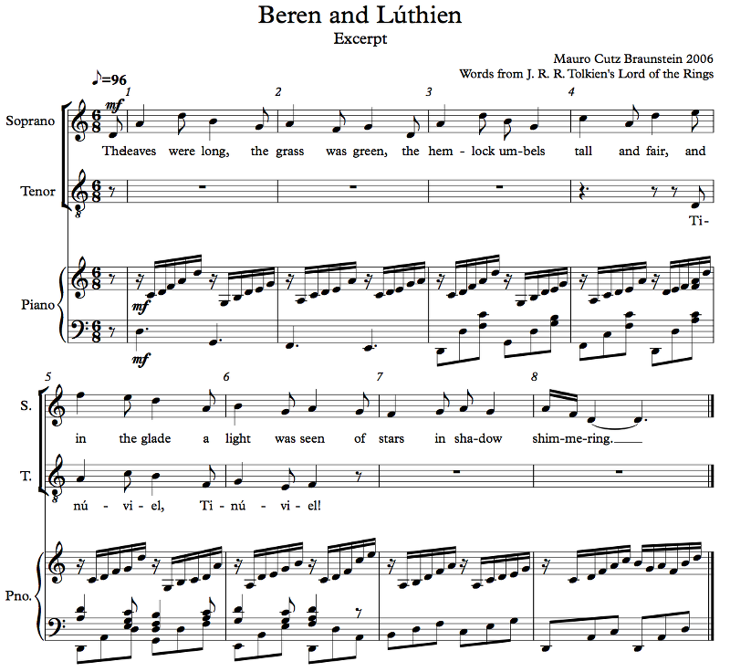Example 2.10 (again)
I even take advantage of the vio chord the first half of measure 7, the diminished triad in a kind of weird place in the scale. I wouldn't call it functional harmony, but I do like how it sounds just so... dorian.
The third option is to use harmonies from outside the mode. This certainly weakens the modality of the piece, absolutely, but that's often desirable. You don't need it to sound like it's in a mode, right? This usually means that the piece isn't actually in a mode at all, but maybe the melody is. And the piece can still be tonal (in the extended sense, at least). The pentatonic and blues examples earlier in the chapter show this option very well.
One incredibly useful technique, which we'll talk about later as well, is modal interchange, which is when you "borrow" elements of one mode when writing music in a different mode. A great example is using bVI - bVII - I in a major piece, which is known as the Mario cadence:
Example 7.117
The game in general is in C major — at least the main theme and the water level are in C major. So when we get to the flagpole, we've been in C major. But here are Ab major and Bb major chords; what's going on? We'll spend a lot more time talking about modal interchange when we dive deeper into harmony, but for now, the main bit is that the Ab and Eb at measure 3 and 4 and the Bb at measures 5 and 6 are actually an excursion into C aeolian. bVI - bVII - i is also called the aeolian cadence due to its use in music in the aeolian mode (but note that bVII - i doesn't fly in minor, which would use V - i). The important features here are that the behavior of the bVI and bVII chords are the same as if the context were aeolian. Simply using notes that belong to a different scale doesn't count as modal interchange; the behaviors have to be the same too.
Oftentimes, pieces in extended tonality don't have a home mode in general, so they're immune to modal interchange — you can't "borrow" elements from another mode if you aren't already in a mode that lacks those elements! I find that modal interchange is a terrible explanation for chromaticism most of the time. We'll return to this discussion in a later chapter.
Chord-Scale Theory
Finally, we bring harmony and mode together. Chord-scale theory is the concept of using scales as harmony. We tend to associate chord-scale theory with jazz, but it's really used everywhere, just without people noticing it much of the time. The idea is simple but powerful: changing from one scale to another can be thought of as a change of harmony rather than a modulation. The tonic of the piece doesn't have to change, but instead, the root of the current chord can be momentarily thought of as the tonic of the scale, so if you're in C major and your chords are a simple Dm - G7 - C, you could think of these scales as D minor, G mixolydian, and C major, but you still hear C major as the general tonaliy of the piece. (In jazz, you'd almost certainly use D dorian rather than D minor because of the way chord are constructed; the b6 sounds like an avoid note while the 6 does not.) Remember when we talked about the stability of the scale degrees back in Chapter 4? The stability will change when the harmony changes, and that essentially means that the mode itself has changed.
This principle is so powerful that it works in modal music too. You can think of a change of jins in maqam music as akin to a change in harmony in tonal music. Go back and look at any analyzed example in the maqamat section — like Example 7.97, Moshe Habusha's Ps. 92 verse 7 in maqam Saba — and look at the analyzed ajnas. That particular example begins with Hijaz on G, then Saba on E, then Nahwand on C, Hijaz on G, Saba on E, etc. Each of these is basically a chord. Just like changing chords allows for variety and function, changing ajnas does exactly the same thing.
I first realized the chord-scale principle when I composed this little excerpt in my head, no idea how many years ago. I've had some abortive starts at actually writing it out, but the idea is that it's an Italian-style overture, similar to the operatic works of Rossini or Verdi. I never really got very far; it doesn't even have a decent name. The instrumentation should be orchestral (wind orchestra, most likely), and the only parts I've really worked out are the melody and harmony, with some ideas about how the accompaniment should go. So, I present to you... some sketch of a piece of an overture-like thingy.
Example 7.118
The rhythm here is pretty consistent, with the fermatas for emphasis until the piece picks up a bit more. The ending is supposed to be into a new section in the parallel major that has a different rhythm entirely that is based on legato eighth notes, so the 5/4 bar prepares that new rhythm by making the pickup an eighth instead of a 16th and lengthening the last beat accordingly. It might seem weird to change keys just for one beat like that, but it makes sense in context. Or it would if the context existed; I haven't actually composed that next section!
But the reason I bring this overture up here is in the pickups to measures 5 and 6. Let's try to analyze the scales of the melody (kind of ignoring the D#'s, which is just a neighbor tone). Measure 1 has an E7b9 harmony, and the scale is E phrygian dominant for the pickups. We have the principal chord tones there, the E, the F, and the B, with the E in the bass on the downbeat. Measure 2 is Am, and the scale is A minor. That's actually the same notes as E phrygian dominant, since we're using the G# rather than the G. Pickups to 3, E7b9 and E phrygian dominant again; pickups to 4, Am and A minor again. But now it gets interesting. Second half of 4, we move to A dominant. Now we have an A7b9 chord, which uses the Bb in the melody of the pickups to 5. The exact same melody happens at the pickups to 6, except now it's B natural. Why the change? The Bb is part of the D minor scale of the Dm harmony at 5, while the B natural is part of the A minor scale of the Am harmony at 6. So even though the Bb isn't part of the Dm chord at 5, it's introduced in the pickup as part of the D minor scale to match that harmony. The A7b9 harmony in the second half of 4 is also part of the scale switch to D minor (again, it's D harmonic minor, hence the C#). The rest of the excerpt just repeats these chords/scales until the last bar, where the scale switches to A major (or E mixolydian during the E9 chord, but that's a preparation for A major).
In most diatonic music, the scales corresponding to the chords used are all quite closely related to the scale of the piece. In jazz, we have this system where we play the major scale over M7 chords, dorian over m7, lydian over IV chords, etc. In non-jazz diatonic music, that's usually not the case; we play the major scale over major chords (I and IV, in major), the (harmonic or melodic) minor scale over minor chords (ii and vi) and the mixolydian scale over dominant chords (V). iii doesn't really show up, in part because Common Practice music doesn't generally believe in the phrygian mode, and viio is the same scale as the V. This does mean that if we're in C major, we're likely to come across Bb's over Dm and F chords, as well as C#'s over Dm's and G#'s over Am's. It's not very common to see a B natural over Dm or F chords because of those modal implications. On the other hand, while you don't generally see G's over Am chords, you do see C's over Dm chords, because ii is also pre-dominant and the 1 is an important note in the ii - V - I progression.
Minor works fairly similarly. Minor (melodic, generally) over minor i and iv chords, major over major bIII and bVI chords, mixolydian over bVII (because we've modulated to the relative major), and phrygian dominant (or mixolydian b6 to avoid the augmented second) over V. You have a choice for iiø; locrian is the natural choice, but locrian #6 or locrian #2 are also possibilities. Of course, Common Practice composers didn't really think in these terms, but we have the benefit of understanding modes and scales in a way that lets us apply them to music that adheres to Common Practice harmonic rules.
Impressionist composers (big names: Debussy and Ravel) took the chord-scale principle to another level. In some of that music, a wide variety of modes was used as harmony without reference to harmonic function. My favorite example is Debussy's Fêtes, from his Trois Nocturnes. Ravel did a four-hand transcription of this piece, which you can find on IMSLP and which I've excerpted below:


Example 7.119
My high school wind ensemble played a band transcription of this piece as well, which is how I came to know it. It's really a lot of fun, except for having to tongue all those damn triplets on clarinet! The Ravel piano transcription is useful because it condenses the orchestral score into just these four lines, making it much easier to read. He takes a few liberties with the texture to make it more pianistically appropriate, but that's how transcriptions usually go; something that was idiomatic in the original instrumentation may be very awkward in the new one, and details may need to be changed. Ravel in particular was a master at transcription, both from orchestra to piano and from piano to orchestra. Mussorgsky's famous Pictures at an Exhibition was actually a piano piece, which Ravel expanded to the full orchestra we know and love today.
I did a little bit of analysis here to show you where the scales come in. Not everything is really in the given scale (the Piano I chords at the section beginning at 9, for example, don't stick to the scale of the melody in the Piano II part), but it's pretty close. You can see that Debussy uses a range of scale materials as harmonies. You can't really pinpoint a tonal center, but this entire section does have a key signature of four flats (the key signature changes almost right after the end of the excerpt), and most of the scales Debussy uses are close to this profile. There's a bit of alternation at 5-8 between D phrygian (or F dorian; not all of the notes are present) and Db mixolydian (or possibly Db lydian dominant). If we look further out, we can see a connection between the scales at 3 and 11 and the scales in 5-8: the scale at 3 has just one accidental (relative to the key signature), D natural, and the scale at 11 also has one, Cb. The scales at 5 and 7 are compatible with the scale at 3, and the scales at 6 and 8 are compatible with the scale at 11. There are some chords at 9 that are not best analyzed as scales, and the scales return at 11 with Ab melodic minor, not as an aspect of minor but as its own independent scale. We get some whole tone fun at 15, some more whole tone fun at 19, and then the tempo slows to half and there's a little fanfare in Db lydian. Which could actually be Db lydian dominant, the scale at 11. So other than the two whole tone scales, most of this excerpt uses just two pitch collections, F dorian and Ab melodic minor, in various inversions.
When we listen to a piece of music, in general, we really hear several notes at the same time. We hear the notes currently being played, of course, especially the melody note. We hear the root of the current harmony, which we could call the root of the current chord-scale. We hear the tonic of the piece if there is one. We compare all of these notes in our head to determine where we expect the music to go next; if we hear C as the tonic, D as the root of the harmony, and C as the melody, we expect that the C in the melody will resolve to B next, even though C is supposedly at rest as the tonic of the piece!
But we don't just hear those notes. We also hear the notes in the rest of the current chord-scale and in the scale of the tonic as well. These notes contribute to our sense of harmony, and we call them the macroharmony. A chord-scale is, in essence, the macroharmony surrounding a particular chord, which notes are considered compatible and which are out of the scale, etc.
Chord-scales are also a good solution to the problem that some scales have of being harmonically static. The lydian scale, for example, can't support a wide range of tonal harmony because it lacks a 4, having a #4 instead. The #4 is a beautiful note, but it doesn't work as a center of stability as the root of a chord like the 4 does as the root of a IV or iv. But maybe you really like the sound of the lydian scale. What do you do? You could just write really harmonically static music in lydian, or you could use a few lydian chord-scales here and there as momentary harmonies, or even as the tonic harmony, moving to some other scale when you need a break.
Chords are how we think of music vertically, while scales are how we think of music horizontally. Chord-scales help us make sense of those diagonal sections, I suppose!
And now... Are you ready?
For what?
I said, ARE YOU READY?
I said, FOR WHAT?
Ah, you did, sorry, I wasn't listening. ARE YOU READY FOR THE END OF THIS LONG-ASS CHAPTER?
That's a trick. It's gotta be.
Summary
HOLY SHIT. I thought it would never end!
Well, it's about to!
So what should I know? Don't say "literally everything" or I will kill you where you sit.
No, not literally everything. Actually, what you should know is mostly how to think about scales. You should understand the difference between scales and modes, you should definitely understand how the major and minor scales work (including the melodic and harmonic aspects of minor versus aeolian), you should know the diatonic modes and understand how they're different from major and minor, and you should know the damn difference between the modern diatonic modes and the modes of Gregorian chant. Too many people don't know that.
You should also have some passing familiarity with all of the other modes and scales we talked about. You should definitely know the major and minor pentatonic scales, the blues scale, the fact that you can make modes out of the melodic minor scale, etc. You should understand that you can make up new scales. You don't need to have memorized all of the maqamat, but you should understand how to break up a melody into ajnas, whether you're listening to maqam music or any other genre. You should understand the difference between plagal and authentic, and between modal and tonal and atonal. You should know how to find chords inside a scale and that you can just use chords outside the scale. And you should be able to think of chords as scales.
Huh, that's a reasonable summary.
But wait, there's more!
God fucking damn it.
You should be able to sing pretty much all of the examples in this chapter, and maybe even the ones with quarter tones. And you should understand a bit more about how tuning works, too, but the singing part is key. I deliberately didn't include audio examples for most of the songs here, though I did link to YouTube videos, so that you could try them for yourself. I hope you've been doing that, because you won't progress in music theory if you aren't training your ear by reading actual music. Ear training exercises are pretty much worthless, but reading music is invaluable. Every time I learn a new scale, I try singing it to myself, not necessarily out loud. By doing that I've even been able to kind of get a feel for where the notes are, so even though I don't have perfect pitch, if I see a scale that starts on D, I'll sing it higher than if I see a scale that starts on C. I may be a bit off, but that doesn't matter, right? Understanding melody and modes requires that you be able to sing the melodies, even if just to yourself, instead of just looking at them.
And now we're actually done with the chapter. Next chapter we'll talk about some of the ancillary aspects of composition before moving on to the nitty-gritty of harmonic analysis.
Up: Table of ContentsPrevious: Chapter 6: Chords
Next: Chapter 8: Composition